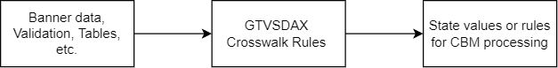
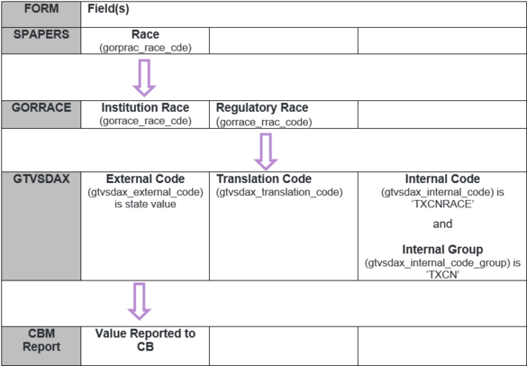
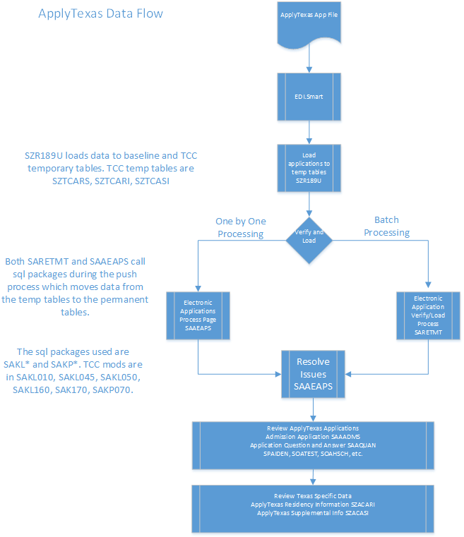
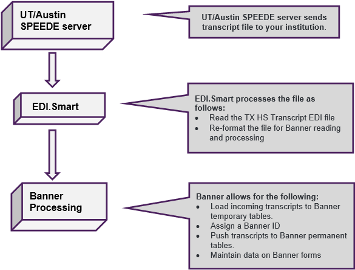
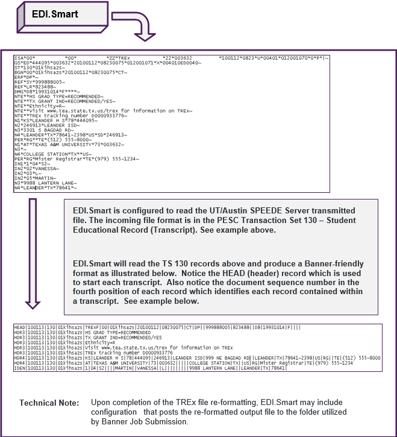
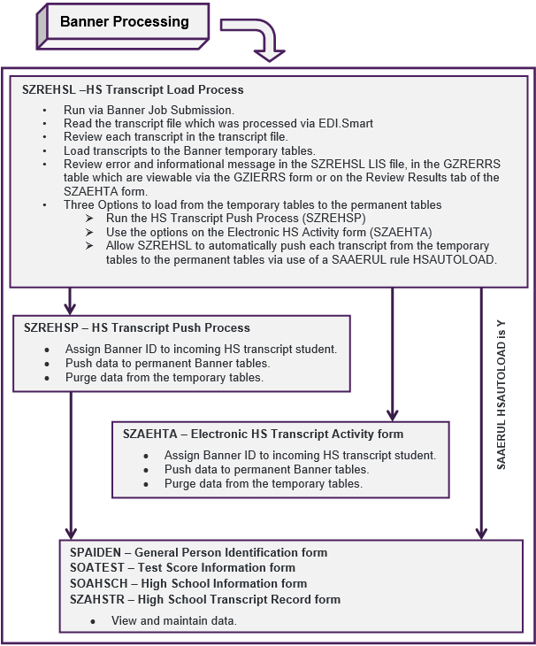
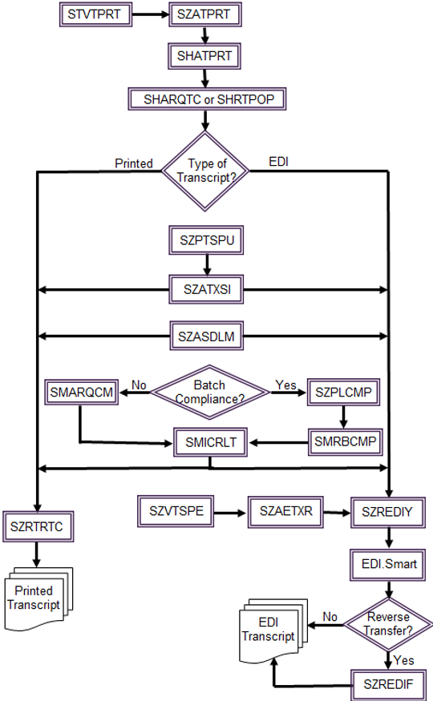
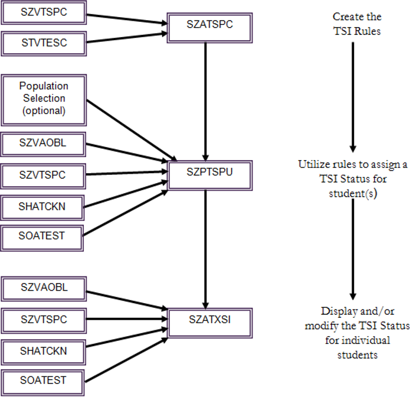

TCC Processing
Crosswalks
Learn about crosswalks, rules, and validation.
- Use the Crosswalk Rules (GTVSDAX) page to crosswalk institutionally defined values with the values needed for the CBM reports and processing.
- Use the Crosswalk Validation page (GTVSDAX) as a baseline to build internal crosswalks and rules used as parameters to programs or reports. For example, the crosswalk rule necessary for associating the institution's Race Codes with state values for Race is named TXCNRACE.
- Use the EDI Cross-Reference Rules (SOAXREF) page as a baseline to build crosswalk rules for both baseline and TCC processing.

Crosswalk Rules (GTVSDAX)
Crosswalk rules provide TCC values for CBM reporting.
The following is an example of how to create required records on GTVSDAX using the TCC rules described in Crosswalk Validation (GTVSDAX) Definitions.
| Field | Description |
|---|---|
| Code | Enter the value indicated as the Internal Code field, such as TXCNETHN. |
| Sequence | Enter a unique number (Optional). This value is only needed if rows with like External Codes are entered. |
| Group | Enter the value indicated as Internal Code Group. |
| External Code | Enter an appropriate value, such as the state value, for Ethnic Origin. |
| Translation Code | Enter the appropriate value, such as the institution’s value, for the corresponding Ethnicity (STVETHN). |
| Description | Enter a meaningful description. |
| Note: Other remaining fields do not need to be populated.
|
|
- Multiple records may be required for some of the crosswalk rules. To repeat a row, insert a new record, then enter an identical Internal Code, along with the External Code or Translation Code, as needed.
- The Sequence is necessary only if there are like entries of the same External Code. To allow multiple records of the same External Code, assign a numeric value to the first rule, then increment this value by one for each additional like record.
- For the TCC rules listed in the Crosswalk Validation (GTVSDAX) Definitions, the Internal Group field should contain a value of TXCN, unless otherwise indicated.
Using the examples found above, build all required crosswalk rows in GTVSDAX.
A complete list of GTVSDAX crosswalk rules required for TCC report processing, data entry, and transcripting is contained in the Crosswalk (GTVSDAX) Definitions. The list is in alphabetical order by GTVSDAX Internal Code and contains information regarding which report or process uses the crosswalk. In GTVSDAX codes by CBM report and process, the list is reordered by the report or process that uses the GTVSDAX rule.
A list of TCC Student rule pages and validation tables affected by TCC GTVSDAX crosswalk rules are listed in Validation and rules pages affected by GTVSDAX rules. This list is in order of page name (rule page or validation table).
A list of TCC Student pages and fields used by the TCC GTVSDAX crosswalk rules and report processing are listed in Pages and fields used with GTVSDAX rules. This list is in order of TCC Student page and field name.
Tips
Following are tips for entering GTVSDAX rules:
- Multiple entries for each rule are allowed unless Single Rule Only is specified.
- Any rule entered with multiple rows and like External Code values requires a Sequence number. Enter new rows and increase the sequence number by one. For example, any GTVSDAX rule with a State value in the External Code that may translate to multiple TCC Student values in the Translation Code field may require multiple rows with like External Codes. (See the example above.)
EDI Cross-Reference Rules (SOAXREF)
Use the EDI Cross-Reference Rules (SOAXREF) page as a baseline to build crosswalk rules for both baseline and TCC processing.
Multiple crosswalks are required for institutions using the TCC process for loading High School transcripts and ApplyTexas applications.
In the following example, the page is used to crosswalk the incoming ApplyTexas values for Father and Mother Education Level to the TCC Student TCC Codes for Father and Mother Education Level. The validation table for which ApplyTexas values are crosswalked is entered in the Cross-Reference Label in the Key Block. In this case the Texas Parent Education Level (SZVELVL) is entered in the Cross-Reference Label field in the Key Block.
This manner of crosswalking is referenced in this User Guide multiple times for several different processes. The example that follows is intended as a guide for adding the Education Level and additional EDI crosswalks, as needed.
| Field | Description |
|---|---|
| Cross-Reference Label | Enter a TCC Student validation page. This page contains the TCC Student Value referenced in the Cross-Reference Rules section to which data is being crosswalked from the Electronic Value. |
| Electronic Label | Enter the same value in the Key Block (Cross-Reference Label) field. |
| Electronic Qualifier | In many cases this value is ZZ to indicate an EDI value. Follow the documentation for specific examples. |
| Electronic Value | Enter the ApplyTexas value for a parental Education Level. |
| EDI | Select the check box. |
| Web | This field can remain blank. |
| XML | This field can remain blank. |
| Banner Value | Enter the corresponding TCC Student Value which is already defined on the SZVELVL validation page. Note: This value can change depending on the value contained in the Key Block Cross Reference Label.
|
| Description | Enter a description for this TCC Student Value. |
General person race code processing
Learn about how baseline processing assigns multiple Race codes on the General Person (SPAPERS) page. Use this page to understand the required setup and crosswalk definitions to report Race codes to the THECB.
Setup
- Verify Regulatory Race values as delivered by baseline in the Race Code Validation (GTVRRAC) page.
- Define institutional values for Race Codes using the Race Code Rules (GORRACE) page.
- Define GTVSDAX rows for the TXCNRACE rules which will crosswalk Regulatory Race Codes to Texas-defined CBM values for new Race values.
- Verify a Visa Type exists for non-residents.
- Verify a Citizen type exists for non-citizens.
- Ensure that institutional procedures are in place to assign New Ethnicity and Race values for students.
- Ensure that institutional procedures are in place to assign Citizen and Visa type for International students.
Data maintenance
- Assign and maintain values for New Ethnicity Race for students using the General Person page (SPAPERS).
- Run one of the CBM report processes containing Race values using TCC Student Job Submission. This includes report processes SZRCBM1, SZRCBM2, SZRCBM8, SZRCBM9, SZRCBMA, or SZRCBMB. Enter the required report parameters. Review the output, identify questionable data, edit data, then re-run the report according to institutional procedures. Submit the output data file (DAT) to the state.
Prerequisite setup
Learn about the setup and configuration needed in TCC Student specifically related to receiving Race values reported to the THECB.
Race Code Validation (GTVRRAC)
Use this page to understand how the baseline delivered values on the Race Code Validation (GTVRRAC) page are used for CB reporting. Verify the required regulatory Race Codes are defined. Adjust the Description as appropriate for the institutional needs.
Notes
- The Unknown (U) value is not delivered by baseline and is optional for reporting an Unknown Race value to the Coordinating Board.
- Each regulatory Race Code defined on this page should have a crosswalk rule defined on GTVSDAX.
Race Code Rules (GORRACE)
Use this page to understand how this TCC enhancement uses the Institution Race codes (gorrace_race_cde) defined by the institution on the Race Code Rules (GORRACE) page.
Notes
- The associated Regulatory Race field (
gorrace_rrac_code) is used to crosswalk to the GTVSDAX rule for reporting Race to the CB. - Each institution can define unique values for Institution Race codes.
- Each Institution Race code defined must have a Regulatory Race Code (GTVRRAC) assigned.
TXCNRACE Crosswalk Validation (GTVSDAX)
This TCC enhancement used the Regulatory Race codes assigned to Institution Race Codes on the Race Code Rules (GORRACE) page. The GTVSDAX rule TXCNRACE is used to crosswalk the Regulatory Race field (gorrace_rrac_code) values to the Texas CB reportable values for Race.
Notes
- A rule is required for each of the Regulatory Race codes defined on GTVRRAC.
- The GTVSDAX rule TXCNETHN is still used to report old Ethnicity. See Crosswalk Validation (GTVSDAX) Definitions for additional information.
Visa Type Code Validation (STVVTYP)
This TCC enhancement uses the Non-Resident flag (gorvisa_vtyp_code) on the Institution Visa Type Code Validation (STVVTYP). A Visa Type of Non-Resident, where the Non-Resident flag is selected, is needed to allow a student to report as International using the CBM reports.
Citizen Type Code Validation (STVCITZ)
This TCC enhancement utilizes the Citizen Indicator (stvcitz_citizen_ind) on the Citizen Type Code Validation (STVCITZ). A Citizen Code of not a Citizen (the Citizen Indicator not selected) is needed to allow a student to report as International through the CBM reports.
Each institution can define unique values for their own codes.
Processing summary
Each CBM report process uses the same logic to assign CB Race values to each student.
Following are the steps performed in the CBM report processes to assign a CB reportable value for the Race Codes assigned on SPAPERS:
- For each Race Code assigned on SPAPERS, the Race Code Rules page (GORRACE) is used to crosswalk the Institution Race (
gorrace_race_cde) to a Regulatory Race code (gorrace_rrac_code). - The Regulatory Race codes (
gorrace_rrac_code) are then used to read GTVSDAX rules where the Internal Code is TXCNRACE and the Translation Code (gtvsdax_translation_code) is the same as the GORRACE Regulatory Race (gorrace_rrac_code). - The External Code (
gtvsdax_external_code) of the above rule is then extracted and reported in the appropriate Item for that CBM report.
Following is a diagram of the flow used by the CBM report processes when reporting the Race fields according to the CB requirements. The purple arrows show how values are used to read from the next field in the process. This process is repeated for each Race Code assigned to a student.

Race reporting
Learn more about assigning CB reportable Race codes.
The following statements are true for each TCC delivered CBM report in this RTE release.
- If a student is assigned multiple Race Codes and each of those Race Codes translate to a different CB reportable value, the process reports each of those Race values for that student.
- If a student is assigned multiple Race Codes and more than one of those Race Codes translates to the same CB reportable value, the process only reports the Race value one time for that student.
- Unknown Race (7): The student report as 7 if either of the following is true.
- The student is assigned one Institution Race Code in the SPAPERS Race Code field and that value translates to (7) Unknown.
- There are no Race Code values assigned in the SPAPERS Race Code field and the SPAPERS New Ethnicity is None.
- International Race (6): The student reports as 6 if both of the following are true.
- The assigned SPAPERS Citizenship (
spbpers_citz_code) code is defined as not a citizen on the Citizen Type Code Validation (STVCITZ) through the Citizen Indicator (stvcitz_citizen_ind). In other words, the STVCITZ Citizen Indicator of the assigned SPAPERS Citizenship Code is not selected to indicate a non-citizen and, thus, an International student. - The student must have an assigned Visa Type (
gorvisa_vtyp_code) on the International Information (GOAINTL) page and, for the most recent record, the corresponding Visa Type has the Non-Resident flag (stvvtyp_non_res_ind) selected on the Visa Type Code Validation page (STVVTYP).
- The assigned SPAPERS Citizenship (
ApplyTexas application processing
TCC processing allows for receipt of Admission applications from ApplyTexas.
The ApplyTexas process allows prospects to complete and submit applications to Texas Community, Technical, and State Colleges and to Public Universities. There are nine possible types of applications containing varying pieces of information that can be submitted and sent to institutions. This enhancement addresses all nine application types currently defined by ApplyTexas.
Process flow
Use this page to understand the process flow, setup, and maintenance required for the ApplyTexas process.

Setup
- Define EDI rules through baseline Banner Student recommendations. This is a one-time setup.
- Configure Admissions Self-Service. This is a one-time setup.
- This enhancement depends on baseline Admissions Self-Service being configured before attempting to use the TCC ApplyTexas modification.
- Define baseline rules for loading applications received from Self-Service into the Banner Student temporary tables.
- Define baseline rules for using the baseline Push process to move the applications in temporary tables into baseline Banner Student.
- Define ApplyTexas specific rules for loading applications into the temporary tables.
- Define ApplyTexas specific rules for using the Push process.
- Define TCC rules on the following TCC pages:
- Define ApplyTexas Family Income values using SZVFAIN.
- Define ApplyTexas Undetermined Residency Reason codes using SZVURSD.
- Define crosswalks on SZAEFSC between the ApplyTexas Field of Study to an EDI Field of Study used by TCC Student.
- SZACARL for loading the ApplyTexas into Banner Student. This is a one-time setup.
Data maintenance
- Receive applications through the ApplyTexas.
- Receive the ApplyTexas file and process through
EDI.Smart. Then upload the file of applications to the Host Server where baseline Banner Student can access the file. - The ApplyTexas application file must be in ASCII format with no Carriage Returns (CR) at the end of each record. The format required is referred to as UNIX line endings and includes only line feeds (LF) at the end of each record in the ApplyTexas file. The format required is referred to as UNIX line endings or UNIX (LF).
- Receive the ApplyTexas file and process through
- Run the TCC-modified baseline Student process (SZR189U) to move the data into the baseline Banner Student temporary tables.
- Use the baseline Banner Student Electronic Admissions page (SAAEAPS) to review the submitted application data in the temporary tables before loading into the Banner Student permanent tables.
- Use the Electronic Admissions Submitted Page (SAAETBL) to review application detail before loading to the permanent Banner Student tables.
- Push the application data in temporary tables into baseline Banner Student tables through one of the following methods.
Both of the above processes allow matching of the applicant to existing records within Banner Student. These processes can include baseline procedures which have been TCC modified – SAKL010, SAKL045, SAL050, SAKL160, and SAKL170.
- Use the Electronic Application Process Page (SAAEAPS) to view, verify, and load data into the Banner Student permanent tables.
- Use the baseline Banner Student process (SARETMT) to push the application data into the permanent Banner Student Tables.
- View and maintain the loaded data through baseline pages and through the TCC pages (SZACASI – ApplyTexas CA Supplemental and SZACARI – ApplyTexas CA Residency).
- Process the Admissions application through baseline Banner Student according to institutional procedures.
- When deemed appropriate, purge the temporary data viewable on the Electronic Application Process Page (SAAEAPS) through use of one of the TCC delivered processes (SZRETPG or
Delete_Aidm.sql). - When manually deleting an Admissions Application through SAAADMS, first check if a record exists on SZACARI or SZACASI for this application. If a record exists on either SZACARI or SZACASI for this Admissions application, first delete the application records from SZACARI and SZACASI. After those deletes are complete the application may be deleted from SAAADMS. This order prevents orphan records in the database. In this case, the orphan records are the application records on SZACARI and SZACASI with no corresponding application on SAAADMS.
Prerequisite setup
Learn about the setup and configuration needed in TCC Student specifically related to receiving ApplyTexas applications. The baseline tables are listed for reference purposes only.
EDI setup
Use this page to define EDI rules using the baseline Banner Student recommendations.
The baseline Banner Student recommendations include, but are not limited to the following:
| STVASTD | STVHONR | STVSBGI | SHATPRT |
| STVCITZ | STVLEVL | STVSTAT | SHACTRL |
| STVCLAS | STVMRTL | STVTERM | SHADRTM |
| STVDPLM | STVNATN | STVTRMT | SHAGEDI |
| STVETHN | STVRESD | STVTPRT | SAAERUL |
| SOAXREF |
Source/Background Institution Code Validation (STVSBGI)
The values defined on STVSBGI allows High School and Prior College information to load into TCC Student pages.
STVSBGI includes a column for Source or Background Institution (stvsbgi_code) and a column for a FICE (stvsbgi_fice). The column for Source or Background Institution can be institutionally defined or it may contain the FICE Code for a college or the CEEB Code for a high school. Following is further explanation of the use of STVSBGI records:
- If the college FICE Code is defined as the Source or Background Institution for colleges, no further definition is required. Prior College information will load into TCC Student.
- If the FICE Code of colleges is not defined as the Source or Background Institution, a crosswalk definition is required using the SOAXREF page.
Cross-Reference Label crosswalks to STVSBGIC. EDI Qualifier crosswalks to 73. EDI Value is the FICE Code or value received from ApplyTexas for that college. TCC Student Value crosswalks to STVSBGI Source or Background Institution. See SOAXREF for more information.
- If the high school CEEB Code is defined as the Source or Background Institution for high schools, no further definition is required.
- Prior High School information loads into TCC Student only for the most recent High School attended which is the first school listed in the application. More than one High School does not load.
- If the CEEB Code of high schools is not defined as the Source or Background Institution, a crosswalk definition is required using the SOAXREF page.
Cross-Reference Label crosswalks to STVSBGIH. EDI Qualifier crosswalks to 78. EDI Value is the CEEB code or value received from ApplyTexas for that high school. TCC Student Value crosswalks to STVSBGI Source or Background Institution. See SOAXREF for more information.
EDI Application Source Code Validation (STVAPLS)
Setup of this page is required according to the baseline recommendations.
Application Verification Steps Validation (STVASTA)
Setup of this page is required according to the baseline recommendations.
Relation Code Validation (STVRELT)
Setup of this page is required according to the baseline recommendations. Additionally, a Relation Code is needed for the Emergency Contact and other Parent/Guardian types that may be received from ApplyTexas.
The Emergency Contact information is maintained on the General Person Identification page (SPAIDEN) in the Emergency Contact tab, and the Parent/Guardian information is maintained in the Guardian Information (SOAFOLK) page.
The following is a list of potential Parent/Guardian codes that may be received from ApplyTexas:
- 32 - Mother
- 33 - Father
- 48 - Stepmother
- 49 - Stepfather
- 26 - Guardian
- 34 - Other Adult
Additionally, the following are recommended:
- Each Parent/Guardian code that may be received from ApplyTexas must be crosswalked to the above STVRELT Relation Codes through SOAXREF – STVRELT.
- The Address Type preferred on SOAFOLK for Parent/Guardian should be defined on SAAERUL in the Group of ATYP and Rule of DFLTPARENTATYP.
Application Type Code Validation (STVWAPP)
Setup of this page is required according to the baseline recommendations. For each application type that may be received from ApplyTexas, a corresponding Application Code should be defined. Only those application types received must be defined.
- Each Community College receives only one type of application and needs to define only one Application Code.
- Universities may receive up to eight different application types and must define a distinct application code for each application type received.
The Student Type and Admissions Type defined on this page default to the Admissions Applications created on SAAADMS for new applications received from ApplyTexas.
EDI Rule Group Validation (STVEGRP)
Setup of this page is required according to the baseline recommendations. The values on this page are used by the (SAAERUL) page.
Create a new record with a Code of APTX. This code is used to define rules used specifically by the ApplyTexas process.
EDI Verification Label Validation (STVXLBL)
Setup of this page is required according to the baseline recommendations. The values on this page are used by the (SOAXREF) page.
Web User Defined Questions (SAAWUDQ)
Use this page to understand what is needed for the Web User Defined Questions Page (SAAWUDQ).
This definition allows loading of free-format questions from ApplyTexas applicants which include residency data, and supplemental data such as family income and essay questions.
For each application type received from ApplyTexas and defined on the Application Type Code Validation page (STVWAPP), one question must be defined on this page with the EDI Question Code value of ZZ. This definition should be completed after defining Application codes (STVWAPP) and before assigning Sections to each Application code (SAAWAPP). See the following for an example.
ONLY one (1) question needs to be defined for each application type. The question text is Free Form. Individual questions contained on ApplyTexas applications do not need to be entered.
EDI Cross-Reference Term Code Rules (SAAECTM)
Use the EDI Cross-Reference Term Code Rules (SAAECTM) page to define rules that will crosswalk the Entry Term values received through an ApplyTexas application. The Entry Term is read from the SSE_1280 application record.
The ApplyTexas Entry Term values are received in the format of YYYYMMDD with YYYY being the calendar year (for example, 2013, 2014, and so on) of the entry term requested. The MM portion of YYYYMMDD contains values of 01 (Spring term), 05 (Summer I term), 06 (Summer term), 07 (Summer II term) or 09 (Fall term). The DD portion typically indicates the first day of that month. An ApplyTexas value of 20140601 indicates the student wishes to enter the institution in the Summer 2014 term. Following are example ApplyTexas Entry Term values and the corresponding literal translations:
| ApplyTexas Entry Term (YYYYMM) | ApplyTexas Definition | Date Translation used by TCC Student | Notes |
|---|---|---|---|
| 201309 | Fall, 2013 | September 1, 2013 | |
| 201401 | Spring, 2014 | January 1, 2014 | |
| 201405 | Summer I, 2014 | May 1, 2014 | 2 Year only |
| 201406 | Summer, 2014 | June 1, 2014 | 4 Year only |
| 201407 | Summer II, 2014 | July 1, 2014 | 2 Year only |
| 201409 | Fall, 2014 | September 1, 2014 |
The ApplyTexas application only sends the MM values of 01, 05, 06, 07 or 09. There are no other MM values received and, thus, no other date translations performed by TCC Student.
The TCC TS189 Upload process (SZR189U) translates the Entry Term values received as shown in the table previously. In addition, the EDI Cross-Reference Term Code Rules page (SAAECTM) allows each institution to assign TCC Student Term Codes to each ApplyTexas Entry Term. The table below illustrates which TCC Student Term codes could be assigned to each ApplyTexas Entry Term:
| ApplyTexas Entry Term (YYYYMM) | Date Translation used by TCC Student | TCC Student Term Code (Example Only1) |
|---|---|---|
| 201309 | September 1, 2013 | 201410 – Fall 2013 |
| 201401 | January 1, 2014 | 201420 – Spring 2014 |
| 201405 | May 1, 2014 | 201425 – Summer I 2014 |
| 201406 | June 1, 2014 | 201430 – Summer 2014 |
| 201407 | July 1, 2014 | 201435 – Summer II 2014 |
| 201409 | September 1, 2014 | 201510 – Fall 2014 |
Operation
| Field | Description |
|---|---|
| Start Date | Enter the first date which, when received as an ApplyTexas Entry Term, indicates the Term on this row is to be assigned. The ApplyTexas Entry Term must be greater than or equal to the Start Date assign the corresponding Term Code. |
| End Date | Enter the last date which, when received as an ApplyTexas Entry Term, indicates the Term on this row should be assigned. The ApplyTexas Entry Term must be less than the End Date assign the corresponding Term Code. The Start Date and End Dates should be assigned to ensure there are no date overlaps between records in addition to no date gaps between records. |
| Term | Enter the TCC Student Term Code (STVTERM) corresponds to this ApplyTexas Entry Date. |
| Past, Current or Future Indicator | This field is assigned by the system. |
Web Application Section Rules (SAAWAPP)
Use this page to set up Web application rules application rules Setup of this page is required according to the baseline recommendations. For each Web Application Type defined for ApplyTexas applications, Web Sections should be attached.
The Web Section titled Additional Information allows receipt of Residence information, Supplemental information, miscellaneous questions, and essays.
Initially the Copy Configuration icon can be used to copy all default sections to a particular Web Application Type.
Verify each Web Application Type has the following Web Section definitions:
- NAME, ADDR1, PERSONAL, PLAN, PARENTS, HIGHSCH, PRVCOLLEGE, ADDITIONAL
- A valid Address Type is assigned to the ADDR1 and ADDR2 (optional) Web Sections.
- The Parent section is included to ensure Emergency Contact will verify and load.
- The Plan section (Planned Course of Study) is included to ensure the incoming Field of Study is verified.
- The Additional Information Web Section has an Element Code of Question attached. See the following details.
- International (optional)
The following Web Sections are not used by the ApplyTexas process:
- TESTS
- ACTIVITIES
- ESSAY
STVWSCF – Prerequisite to SAAWAPP
Setup of the Element Code is required according to the baseline recommendations. The Element Code for Question must be defined on STVWSCF with the Web Section blank.
Electronic Admissions Procedure/Routine Control (SAAECRL)
The Electronic Admissions Procedure/Routine Control page (SAAECRL) needs to be configured to indicate which Procedures or Routines are used to verify the data received from ApplyTexas and to Push the application data into TCC Student.
These procedures are attached to each Application Type (STVWAPP) defined to receive ApplyTexas applications. The following is a listing of all available procedures:
| Procedure | Description | Required | Override | ApplyTexas Information |
|---|---|---|---|---|
| P010 | ID Verification | X | Always Required. Do not Override. | |
| P020 | Name Verification | X | X | |
| P030 | Biographic Information | X | X | |
| P032 | International Information | X | X | |
| P035 | Residency Information | X | X | |
| P040 | Address Information | X | ||
| P045 | Email Verification | X | X | Load email as preferred if Load Mail as Preferred flag is set on the ApplyTexas CA Rules page (SZACARL). |
| P050 | Application Verification | X | Includes Routines that allow duplicate applications for each Person, Term or Level.
See SAAERUL. |
|
| P060 | Health Conditions Verification | X | ||
| P070 | Phone Record Verification | X | X | |
| P080 | Religion Verification | X | ||
| P090 | Language Record Verification | X | ||
| P100 | Immunization Record | X | ||
| P110 | Applicant Activities | X | X | |
| P120 | Entry Curriculum Verification | X | ||
| P130 | High School Verification | X | X | |
| P135 | High School Subj. Verification | X | X | |
| P140 | Previous College Verification | X | X | |
| P142 | Prv. Col. Degree Verification | X | ||
| P145 | Prv. Col. Major Verification | X | ||
| P150 | Test Score Verification | X | ||
| P160 | Relative Information Verify | X | X | Load Emergency Contact according to the rules on SZACARL. A priority of 1 is assumed. |
| P170 | Question Answer Verification | X | X | Texas Residency, Supplemental and Other Questions are viewable on SAAQUAN. |
| P175 | Requested Materials Verification | X | ||
| P900 | PUSH Verification | X |
|
The above default listing of all Procedures which can be used to push data from the temporary tables into the permanent TCC Student tables is delivered as a default example for an Application Type of 00. This default configuration can be copied to each application type using the Copy Procedure icon. The institution must then decide which Procedures are Required and which Procedures allow Override.
The Required? column is selected if the data is to push into TCC Student permanent tables.
The Override? column is selected if that data can be blank or overridden due to errors.
Procedure P170 – Question answer verification procedure
Listed below are specific data elements loaded by this procedure into permanent TCC Student tables.
- Load miscellaneous information into SZRCASI to allow for later loading into SZASSTD. Data includes the following:
- SZACASI - Family Income
- SZACASI - Number in Household
- SZACASI - Family Obligation
- SZACASI - Family Obligation Income
- SZACASI - Family Obligation Care
- SZACASI - Language 1 & Language 2
- Extracted from the ApplyTexas RQS Segment for SPOKEN_LANGAUGE
- ES is converted to 02 (Spanish)
- ZZ or other languages are converted to 03 (Other)
- SZACASI - Father Ed Level
- SZACASI - Mother Ed Level
- Load information into SOASUPL to allow for later loading into SZASSTD. Data includes the following:
- SOASUPL - Admission County (copied to SZASSTD)
- SOASUPL - Admission State (copied to SZASSTD)
- SOASUPL - Admission Nation (copied to SZASSTD)
- SOASUPL - Birth Nation
- SOASUPL – BirthState
Baseline processing may require the following steps to ensure success of pushing data into TCC Student:
- Place cursor on the row containing the Push Procedure (P900).
- Click Next Section.
- As each Forms box is displayed, click OK.
- Save. A message may appear that indicates there are no changes to save.
Electronic Admissions Application Rules (SAAERUL)
Use the Electronic Admissions Application Rules page (SAAERUL) to configured rules according to the baseline recommendations. There are additional Rules that are relevant for EDI applications that will impact data items such as the Residency Code attached to each application.
The following table contains a list of SAAERUL Rules that may need definition. The entries in the Value column are intended as example only.
| Group | Rule Label | Rule Description | Value | EDI Indicator |
|---|---|---|---|---|
| ADDR | DFLTADDRSRCE | Default Address Source | TXCA | N |
| ADMS | DFLTASRCEDI | EDI Default Application Source | EDI | N |
| ADMS | DFLTASRCWEB | Web Default Application Source | WEB | N |
| ADMS | DFLTSBGIEDI | EDI default Appl SBGI source | T00001 | Y |
| ADMS | DFLTSBGIWEB | Web Default Application SBGI S | W00001 | N |
| ADMS | DUPLAPPLCURR | Allow Dup App for Curriculum | Y | N |
| ADMS | DUPLAPPLLEVL | Allow Dup App for Level | Y | N |
| ADMS | DUPLAPPLMAJR | Allow Dup App for Major | N | N |
| ADMS | DUPLAPPLPERS | Allow Dup App for Person | Y | N |
| ADMS | DUPLAPPLTERM | Allow Dup App for Term | Y | N |
| ADMS | EDIIDPREFIX | ID Prefix | UPDATE ME | Y |
| ADMS | EDIWAPPCODE1 | Default EDI Wapp code | TT | Y |
| ADMS | EMAILSENDADDR | Admissions Email Address | me@banneru.edu | N |
| ADMS | EMAILSENDLINK | Admissions Email Link Text | UPDATE ME | N |
| ADMS | EMAILTYPE | Default Email Type | TXCA | N |
| ADMS | FORRESIDCODE | Out of Country Residency Code | O | N |
| ADMS | HOMESCHOOLSBGI | Home School SBGI Code | 9020 | N |
| ADMS | INRESIDCODE | In State/Prov. Residency Code | R | N |
| ADMS | ONEAPPORTWO | Create One Application or Two | ONE | N |
| ADMS | OUTRESIDCODE | Out of State/Prov Resid. Code | O | N |
| ADMS | PRIMSRCEEDI | Use DFLTSBGIEDI as Prim Source | Y | N |
| ADMS | PRIMSRCEWEB | Use DFLTSBGIWEB as Prim Source | Y | N |
| APTX | APPORIGINDATE | Application Date Origin | See 2. | N |
| ATYP | DFLTPARENTATYP | Default Parent Address Type | PA | N |
| ATYP | DFLTSTUDENTATYP | Default Student Address Type | MA | N |
| CURR | DFLTCAMPCODE | Default Campus Code | M | N |
| CURR | DFLTCOLLCODE | Default College Code | 0 | N |
| CURR | DFLTDEGCCODE | Default Degree Code | 0 | N |
| CURR | DFLTMAJRCODE | Default Major Code | 0 | N |
| CURR | DFLTDEPTCODE | Default Department Code | 0 | N |
| CURR | DFLTMAJRQLFR | Default Major Code Qualifier | ZZ | Y |
| CURR | USEDEFAULTS | Use Default Curriculum Values | N | N |
| DISP | ACTVSDISP | # of Activity Rows to Display | 5 | N |
| DISP | APPADDR1 | First Application Address | PR | N |
| DISP | APPADDR2 | Second Application Address | MA | N |
| DISP | SIGPAGEDISP | Display Sig Page (TRUE/FALSE) | FALSE | N |
| DISP | TESTSDISP | # of Test Rows to Display | 5 | N |
| DISP | WEBPHOWDISP | # of Prospect How Learned | 3 | N |
| DISP | WEBPINTDISP | # of Prospect Interests Rows | 8 | N |
| DISP | WEBPMATLDISP | # of Prospect Material Rows | 5 | N |
| DISP | WEBPTESTDISP | # of Prospect Test Rows | 8 | N |
| DTQL | AWRDDTQLCODE | Award Date | 103 | Y |
| DTQL | EFFCDTQLCODE | Effective Date | 007 | Y |
| DTQL | ENDDTQLCODE | End Date | 197 | Y |
| DTQL | EXPRDTQLCODE | Expire Date Qualifier | 036 | Y |
| DTQL | ISSUDTQLCODE | Issue Date Qualifier | 102 | Y |
| DTQL | STRTDTQLCODE | Start Date | 196 | Y |
| ENTY | HSCHENTYCODE | Default High School Entity | HS | Y |
| FLVL | MJRFLVLCODE | Major Field of Study Level | M | Y |
| FLVL | MNRFLVLCODE | Minor Field of Study Level | N | Y |
| LGCY | FATHERLGCYCODE | Father Legacy Code | F | N |
| LGCY | MOTHERLGCYCODE | Mother Legacy Code | M | N |
| LGCY | PARENTLGCYCODE | Parents Legacy Code | P | N |
| PATH | CHECKMARKPATH | Pathname for checkmark gif | StuWebCheck | N |
| PCOL | AMCASSCHLQLFR | AMCAS School Code Qualifier | UPDATE ME | N |
| PCOL | DFLTPCOLQLFR | Prior College Qualifier Dflt | 73 | Y |
| PCOL | PCOLDFLTDEGC | Prior College Default Degree | 0 | N |
| PQLF | EMAILPQLFCODE | Phone Qualifier for E-mail | EM | Y |
| PREL | ADDRDIFFTYPE | Addr w/Diff Addr Type exists | N | N |
| PREL | ADDRSAMETYPE | Addr w/Same Addr Type exists | Y | N |
| PREL | AMCASCHKLSTONLY | Load only items on SAACHKB | Y | N |
| PREL | AMCASCREATALTID | Load Alternate ID to SPRIDEN | Y | N |
| PREL | AMCASFWAV | AMCAS Fee Waiver | N | N |
| PREL | AMCASHSGPACRSS | Load High School GPA Crse Hrs | Y | N |
| PREL | AMCASNTYP | AMCAS ID Type Code | Y | N |
| PREL | CHKINACTIVEADDR3 | Check Inactive Address | N | N |
| PREL | COMMPLAN | Create Commplan Collector Entr | N | N |
| PREL | CREATECONT | Create New Contact if Recruit | Y | N |
| PREL | CREATELEARNED | Create Recruit How I Learned | Y | N |
| PREL | CREATEMATERIALS | Create Materials | N | N |
| PREL | CREATENEWAPPL | Create New Application | Y | N |
| PREL | CREATENEWRECR | No Recruit exists; Create one | N | N |
| PREL | CREATESRCE | Create New Source | Y | N |
| PREL | DFLTRESDCODE | Default Residency Code | 0 | N |
| PREL | FORRESIDCODE | Out of Country Residency Code | O | N |
| PREL | HOMESCHOOL | Default Home School SBGI | 9020 | N |
| PREL | HOMESTATPROV | Institutions Home State/Prov | TX | N |
| PREL | HSCHADMR | Default High School Checklist | HST1 | N |
| PREL | HSCHSELFREPORT | Update Self-Reported Items | N | N |
| PREL | INRESIDCODE | In State/Prov Residency Code | R | N |
| PREL | INTERESTMAX | Maximum Interests to Load | 5 | N |
| PREL | LOADINTEREST | Load Interests | Y | N |
| PREL | LOADMAJOR | Load Provided Major | Y | N |
| PREL | LOADOLDTESTS | Load Older Test Scores | N | N |
| PREL | LOADPERCENTILES | Load Percentiles on Test Score | N | N |
| PREL | MAJOR2INTEREST | Convert Major to Interests | N | N |
| PREL | MCATPREVAPPYR | Update AMCAS App Year Fields | N | N |
| PREL | MCATUPDMATCHES | Update Matched AMCAS records | N | N |
| PREL | MCREATENEWRECR | Matched Recruit exists; create | N | N |
| PREL | NEWADDRESS | No Address exists; create one | Y | N |
| PREL | NEWPHONE | No Phone exists; create one | Y | N |
| PREL | NMCREATENEWRECR | Non-match Recr exists; create | N | N |
| PREL | OUTRESIDCODE | Out of State/Prov Resid Code | O | N |
| PREL | PCOLADMR | Default Prior College Checklist | CLT1 | N |
| PREL | PHONDIFFTYPE | Phone w/Diff Type, Add | Y | N |
| PREL | PHONSAMETYPE | Phone w/Same Type exists; add | Y | N |
| PREL | PRIMESRCE | Create Source as Primary | Y | N |
| PREL | PSATMAJOR | Load the PSAT Major First | Y | N |
| PREL | UNKNOWNHSCH | Default HS SBGI Code | 999U | N |
| PREL | UNKNOWNPCOL | Default Prior College SBGI Cod | 90 | N |
| PREL | UNKNOWNPCOL2 | Default Prior College SBGI Cod | UPDATE ME | N |
| PREL | UNKNOWNPCOL3 | Default Prior College SBGI Cod | UPDATE ME | N |
| PREL | UNKNOWNPCOL4 | Default Prior College SBGI Cod | UPDATE ME | N |
| PREL | UNKNOWNPCOL5 | Default Prior College SBGI Cod | UPDATE ME | N |
| PREL | UNKNOWNPCOL6 | Default Prior College SBGI Cod | UPDATE ME | N |
| PREL | UNKNOWNPCOL7 | Default Prior College SBGI Cod | UPDATE ME | N |
| PREL | UPDATEIFAPP | Update Recruit if App Exists | N | N |
| PREL | UPDATESSN | Replace TCC Student SSN w/incoming | Y | N |
| PREL | VTYPADMR | Default ADMR Code for Visa | VISA | N |
| PREL | WEBGENID | Generate(G) or SSN(S) - WebP | G | N |
| QSTN | CONFQSTNCODE | Restrict Access Indicator | RA | Y |
| QSTN | FALMQSTNCODE | Legacy Request Code | A2 | Y |
| QSTN | FDCSDQSTNCODE | Father Deceased Request Code | D1 | Y |
| QSTN | MALMQSTNCODE | Mother is Alumni Request Code | A1 | Y |
| QSTN | MDCSDQSTNCODE | Mother Deceased Request Code | D0 | Y |
| QSTN | RESDQSTNCODE | Resident of State/Prov Request | RS | Y |
| RESD | DFLTRESDCODE | Default Residency Code | R | N |
| RESD | HOMECOUNTY | Institutions Home County | 48003 | N |
| RESD | HOMENATION | Institutions Home Country | 157 | N |
| RESD | HOMESTATPROV | Institutions Home State/Prov | TX | N |
| RFQL | SSNRFQLCODE | SSN Qualifier | SY | Y |
| RFQL | VISARFQLCODE | VISA Reference Qualifier | V2 | Y |
| RFQL | VNUMRFQLCODE | VISA Number Reference Qlfr. | 30 | Y |
| RLTN | FATHERRLTNCODE | Relationship Qualifier; Father | 33 | Y |
| RLTN | MOTHERRLTNCODE | Relationship Qualifier; Mother | 32 | Y |
| TELE | AREALENGTH | Area Code Length | 3 | Y |
| TELE | PHONELENGTH | Phone Number Length | 7 | Y |
| TEST | DFLTTSRCWEB | Web Default Test Score Source | TXCA | N |
| VCRL | AUTOOVERRIDE | Automatic Override Indicator | Y | N |
EDI Cross Reference Rules (SOAXREF)
Configure settings on the EDI Cross Reference Rules page (SOAXREF) to allow loading of data relevant for the ApplyTexas applications.
See the following SOAXREF – EDI Cross-Reference Rules table for Cross-Reference Labels and data examples:
- Cross-Reference Label – DEGRLEVL – Degree Level Codes
- Cross-Reference Label – QSTNCODE – EDI Question Codes
- Cross-Reference Label – STVATYP – Address Type Codes
- Permanent Address Note: Loads with the SOAXREF crosswalk of P address type.
- Local Address
Loads with the SOAXREF crosswalk of L address type. If the Local address received through ApplyTexas includes LOCAL SAME AS PERMANENT, this address will not load to TCC Student.
- International Address Note: Only one Permanent address and one Local address are included with the new Address format. ApplyTexas does not provide a designated Permanent or Local address type specific to International students, so there is no cross-referencing specific to International addresses. This is true for all Application Types.
- Cross-Reference Label – STVCITZ – Citizenship Type Codes
- Cross-Reference Label – STVETHN – Ethnicity Codes
- Cross-Reference Label – STVMAJR – EDI Major Codes
- Insert a row for each Major accepted through ApplyTexas.
- The same Major (STVMAJR) can be used by more than one ApplyTexas value. The Electronic Value (for example, 00A1NON) is the value defined for use by ApplyTexas and is received with the incoming applications.
- Cross-Reference Label – STVMRTL – Marital Status Codes
- Cross-Reference Label – STVRELT – Relationship Codes
- Cross-Reference Label – STVSBGIC – EDICollege Codes
Needed if the FICE Code is not defined as the
stvsbgi_code. - Cross-Reference Label – STVSBGIH – EDIHigh School Codes
Needed if the CEEB Code is not defined as the
stvsbgi_code. - Cross-Reference Label – STVTELE – Telephone Codes
- Cross-Reference Label – SZVELVL – State Education Level
The SZVELVL table name is entered manually into STVXLBL to allow definition of the State Education Level Crosswalk on SOAXREF.
SOAXREF – EDI Cross-Reference Rules
For the TCC Student value column in the following table, enter values specific to your institution.
| Electronic Label | Elec Qual | Elec Value | EDI | Web | Banner Value | Description |
|---|---|---|---|---|---|---|
| DEGRLEVL | ZZ | 2.1 | b | 21 (STVACAT) | Certificate or Diploma | |
| DEGRLEVL | ZZ | 2.3 | b | 23 (STVACAT) | Associate Degree | |
| DEGRLEVL | ZZ | 2.4 | b | 24 (STVACAT) | Baccalaureate Degree | |
| DEGRLEVL | ZZ | 4.2 | b | 42 (STVACAT) | Masters | |
| QSTNCODE | AQ | b | ApplyTexas Question | |||
| RFNOQLFR | SY | b | Social Security Number | |||
| STVATYP | L | b | MA (STVATYP) | Mailing or Local | ||
| STVATYP | P | b | PR (STVATYP) | Permanent | ||
| STVCITZ | 1 | b | Y (STVCITZ) | U. S. Citizen | ||
| STVCITZ | 2 | b | N (STVCITZ) | Non U. S. Citizen | ||
| STVCITZ | 3 | b | N (STVCITZ) | Permanent Resident | ||
| STVETHN | A | b | 4 (STVETHN) | Asian Pacific Islander | ||
| STVETHN | H | b | 3 (STVETHN) | Hispanic | ||
| STVETHN | I | b | 5 (STVETHN) | Amer Indian or Alaskan | ||
| STVETHN | N | b | 2 (STVETHN) | Black (non-Hispanic) | ||
| STVETHN | O | b | 1 (STVETHN) | White (non-Hispanic) | ||
| STVMAJR | ZZ | 00A1NON | b | UNDC (STVMAJR) | Undeclared | |
| STVMAJR | ZZ | 01A1ACT | b | ACT (STVMAJR) | Accounting | |
| STVMAJR | ZZ | 01A1ACTT | b | ACT (STVMAJR) | Accounting-Taxation | |
| STVMAJR | ZZ | 01A1BUS | b | BUS (STVMAJR) | Business | |
| STVMAJR | ZZ | 01A1BUSM | b | BUS (STVMAJR) | Business-Marketing | |
| STVMAJR | ZZ | ASBAAS | b | BMGE (STVMAJR) | Business-Mgmt Entr | |
| STVMRTL | D | b | D | Divorced | ||
| STVMRTL | I | b | S | Single | ||
| STVMRTL | M | b | M | Married | ||
| STVRELT | 26 | b | G (STVRELT) | Guardian | ||
| STVRELT | 32 | b | M (STVRELT) | Mother | ||
| STVRELT | 33 | b | F (STVRELT) | Father | ||
| STVRELT | 34 | b | A (STVRELT) | Other Adult | ||
| STVRELT | 48 | b | B (STVRELT) | Stepmother | ||
| STVRELT | 49 | b | C (STVRELT) | Stepfather | ||
| STVRELT | 51 | b | Z (STVRELT) | Emergency | ||
| STVSBGIC | 73 | 012015 | b | BLINNT (STVSBGI_FICE) | Blinn College | |
| STVSBGIC | 73 | 003648 | b | TYLER (STVSBGI_FICE) | Tyler Junior College | |
| STVSBGIC | 73 | 003638 | b | TEXASC (STVSBGI_FICE) | Texas College | |
| STVSBGIH | 78 | 440125 | b | AMARIL (STVSBGI_FICE) | Amarillo High School | |
| STVSBGIH | 78 | 440218 | b | ANTHON (STVSBGI_FICE) | Anthony High School | |
| STVSBGIH | 78 | 442015 | b | DILLEY (STVSBGI_FICE) | Dilley High School | |
| STVSBGIH | 78 | 446111 | b | GRAPEC (STVSBGI_FICE) | Grape Creek High School | |
| STVTELE | HP | b | MA (STVTELE) | Mailing or Local | ||
| STVTELE | CP | b | CE (STVTELE) | Cellular | ||
| STVTELE | WP | b | BU (STVTELE) | Work or Business | ||
| SZVELVL | ZZ | 0 | b | 01 (SZVELVL) | No High School | |
| SZVELVL | ZZ | 1 | b | 03 (SZVELVL) | Some High School | |
| SZVELVL | ZZ | 2 | b | 04 (SZVELVL) | HS Diploma or GED | |
| SZVELVL | ZZ | 3 | b | 06 (SZVELVL) | Some College | |
| SZVELVL | ZZ | 4 | b | 08 (SZVELVL) | Bachelor Degree | |
| SZVELVL | ZZ | 5 | b | 13 (SZVELVL) | Grad or Prof Degree | |
| SZVELVL | ZZ | 6 | b | 07 (SZVELVL) | Associates Degree | |
| SZVELVL | ZZ | 7 | b | 00 (SZVELVL) | Unknown |
Phone Number
Use this page to refer to the examples of telephone number records received through ApplyTexas.
COM_960|AP| 9795585221CP
COM_960|AP| 9795556543HP
COM_960|TE| 9795555146WPApplyTexas application phone numbers are now processed as follows by the SAKL050.sql code:
- The phone number with a TE in the second segment of the record is the ApplyTexas designation for a primary telephone number. The phone number with a TE designator will have the SPAIDEN Primary indicator selected in TCC Student. The Primary telephone number is viewed with addresses on SPAIDEN if the TCC Student address type is the same as the Primary telephone type.
- The process will also extract the last two characters of the phone number record and crosswalk those values (CP, HP, or WP) through the EDI Cross Reference Rules page (SOAXREF) to TCC Student values for Phone Number type.
Following is a summary of processing the ApplyTexas phone number designated as primary (TE) and the affects on the TCC Student Primary flag.
- If the ApplyTexas application indicates a phone number is primary (with a TE segment) then the phone number is loaded to TCC Student with the Primary flag selected.
- If a phone number of the same type exists with the Primary flag selected the Primary flag for the preexisting phone number of the same type is cleared.
- If a phone number of a different type exists with the Primary flag selected there is no modification to the existing Primary flag. In this case two phone numbers will exist of differing telephone types with the Primary flag selected.
Curriculum Rules Control (SOACTRL)
Set the default priority and increment for incoming curriculum using the Institutional Defaults tab. The Starting Priority Number is assigned to the Curriculum Priority for this applicant.
Curriculum Rules (SOACURR)
The Curriculum Rules page (SOACURR) will need to be configured to allow crosswalking of the received ApplyTexas values for Majors to the Banner Student definitions.
At the current time, ApplyTexas only delivers information regarding the Major chosen by an applicant. No information is received which corresponds to TCC Student Minors or Concentrations. Thus, setup of Major only is required to load ApplyTexas applications.
For each Major received through the TCA, the corresponding Major within a Program defined on the Curriculum Rules page (SOACURR) should contain the TCA values in the EDI and Self-Service fields on the Curriculum Rules page (SOACURR). This crosswalk ensures the correct Program and Major are assigned to the applicant.
EDI and Self Service
| Field | Description |
|---|---|
| Display on Self Service | Used for Self Service for Admissions (not for ApplyTexas). |
| Auto Student | Used for Self Service for Admissions (not for ApplyTexas). |
| Self-Service Description | Used for Self Service for Admissions (not for ApplyTexas). |
| EDI Degree |
Enter the Degree Level for this Program/Major combination. The value entered here should correspond to the following:
|
| EDI Level | Enter ZZ. |
| Generate Identification | Used for Self Service for Admissions. Do not use this icon at this time. |
| EDI Identification | Enter the EDI Identification used by ApplyTexas. This should correspond to the EDI value entered on the EDI Cross-Reference page (SOAXREF, Label = STVMAJR). |
TXCNCNTY (GTVSDAX)
The Texas County value received through ApplyTexas applications is crosswalked using the GTVSDAX Rule TXCNCNTY, as described below.
- The county of residence at the time of application is received from ApplyTexas in an RQS record. The value received in the RQS record is compared to the External Code values defined in GTVSDAX – TXCNCNTY. Example:
RQS_1600|AQ|ZZ|PERM COUNTYINFO||079FORT BEND. - When a value is found in the External Code of GTVSDAX – TXCNCNTY that equals the county received from ApplyTexas (such as 079 in the example above), the GTVSDAX Translation Code for that record is then stored in both the SOASUPL Admit County and in the Permanent Address County (SPRADDR). The Translation Codes for TXCNCNTY also require definition on STVCNTY.
Missing County Codes (STVCNTY) can cause Verification Errors for this applicant.
- When the applicant is admitted to the institution and the SZASSTD record is created, the value for AdmitCounty stored on SOASUPL is crosswalked using GTVSDAX – TXCNCNTY. At this time the External Code is extracted from GTVSDAX – TXCNCNTY and stored in SZASSTD in the County field for CBM reporting purposes.
County Codes (STVCNTY)
Use this page to understand how the values received through ApplyTexas applications for the county of current residency are crosswalked using the validation table STVCNTY.
The county of residence at the time of application is received from ApplyTexas in an RQS record. The value received in the RQS record is compared to the External Code values defined in GTVSDAX – TXCNCNTY. Example: RQS_1600|AQ|ZZ|PERM COUNTY INFO||079FORT BEND. The corresponding Translation Code value on GTVSDAX must be defined by the County Code Validation page (STVCNTY) in the Code field.
State Codes (STVSTAT)
Use this page to understand how the values received through ApplyTexas applications for the state of current residency and birth are crosswalked using the validation table STVSTAT.
- The received BirthState value is compared to the EDI Equivalent values maintained on STVSTAT. When a match is found, the corresponding Code for the state is stored on SOASUPL in the BirthState field. The Birth City is also stored on SOASUPL in the BirthCity field.
Example:
DMG_440|D8|19890101|M||O|1||8|||AZ||MESA|||||||| - The received State in the Permanent Address record is compared to the EDI Equivalent values maintained on STVSTAT. When a match is found, the corresponding Code for the state is stored on SOASUPL in the AdmissionState field.
Example:
N3_840|1022222 MAIN STREET||AUSTIN|TX|73301||P| - When the applicant is admitted to the institution and the SZASSTD record is created, the value for the SOASUPL Admission State Code is then crosswalked using STVSTAT. In this case, the STVSTAT Canadian Statistics Code field is stored in the State field on SZASSTD for CBM reporting purposes.
The SZASSTD Canadian Statistics Code field should only contain numeric values and no alphabetic characters.
Nation Codes (STVNATN)
Use this page to understand how the values received through ApplyTexas applications for the nation of current residency and birth are crosswalked using the validation table STVNATN.
- The EDI Equivalent field in the STVNATN table for each nation from which applications can be received must be defined. The corresponding Nation Code is displayed in the SOASUPL Admit or Birth Nation field. The data is crosswalked as follows:
- The received nation values in the Local (L) and Permanent (P) are compared to the EDI Equivalent values maintained on STVNATN. When a match is found, the corresponding Code for the nation is stored in the SPRADDR table and maintained on SPAIDEN and in the Admission Nation field on SOASUPL.
Example:
N3_840|3233 WILDLIFE CIR|NEAR CARL|SYDNEY||123456|AU|P| - The received nation values for Birth Nation are compared to the EDI Equivalent values maintained on STVNATN. When a match is found, the corresponding Code for the nation is stored in the Birth Nation field on SOASUPL. The Birth City is also stored on SOASUPL in the Birth City field.
Example:
DMG_440|D8|19700207|F|M||2||8||AU|||SYDNEY||||||||
- The received nation values in the Local (L) and Permanent (P) are compared to the EDI Equivalent values maintained on STVNATN. When a match is found, the corresponding Code for the nation is stored in the SPRADDR table and maintained on SPAIDEN and in the Admission Nation field on SOASUPL.
- When the applicant is admitted to the institution and the SZASSTD record is created, the value for the SOASUPL Admission Nation Code is then crosswalked using STVNATN. In this case the Canadian Statistics Code field is stored in the Nation field on SZASSTD for CBM reporting purposes.
ApplyTexas Family Income Code Validation (SZVFAIA)
Use the ApplyTexas Family Income Code Validation (SZVFAIA) page to define the ApplyTexas Family Income values along with crosswalks to the CBM values for Family Income.
ApplyTexas Undetermined Residency Codes Validation (SZVURSD)
Use the ApplyTexas Undetermined Residency Codes Validation (SZVURSD) page to define the Undetermined Residency reason codes received from ApplyTexas.
ApplyTexas CA Rules (SZACARL)
Use the ApplyTexas CA Rules (SZACARL) page to enter the rules necessary for processing ApplyTexas applications.
Student Intent Rules (SZASIRL)
Use the Student Intent Rules (SZASIRL) page to enter the codes necessary for processing the ApplyTexas Reason Attending Code included in applications.
Name Type Validation (GTVNTYP)
The values received through ApplyTexas applications for Other Names are loaded to TCC Student as Alternate Names in the General Person Identification page (SPAIDEN) in addition to loading into the Application Questions and Answers page (SAAQUAN).
A Name Type Code is required and is also designated on the ApplyTexas CA Rules page (SZACARL). Define a Name Type Code through the Name Type Validation page (GTVNTYP) for using when loading the ApplyTexas Other Names into TCC Student as Alternate Names.
Following is an example of Other Names data stored in the temporary SARRQST table after processing by SZR189U:
| SARRQST_QSTN_DESC | SARRQST_ANSR_DESC |
|---|---|
| OTHER FIRST NAME1 | Catherine |
| OTHER LAST NAME1 | Smith |
| OTHER MIDDLE NAME1 | L |
The data stored in the temporary table is viewable through the Electronic Application Submitted page (SAAETBL) in the Request for Information window. This information then loads from the temporary table, SARRQST, into the permanent baseline tables through the Load Application option on the Electronic Application Process page (SAAEAPS). The P170 System Verification Procedure (SAKL170.sql) and P900 Push procedure perform the following:
- Verify the data as follows:
- Suffixes (OTHER SUFFIX NAMEx) will not load into SPRIDEN.
- A maximum of three names can be loaded for one applicant.
- All OTHER names ending in 1 are processed as one and create one SPRIDEN record.
- All OTHER names ending in 2 are processed as one and create one SPRIDEN record.
- All OTHER names ending in 3 are processed as one and create one SPRIDEN record.
- A set of names will only load to SPRIDEN if both a first name and last name are included.
- Load the data from SARRQST into SARQUAN as a Question.
- Load the data from SARRQST into SPRIDEN as an Alternate Name.
The assigned Name Type for this Alternate Name is defined on GTVNTYP and assigned on SZACARL. Additional data fields assigned to the new records in SPRIDEN are as follows:
SPRIDEN_PIDM SARCTRL_PIDM SPRIDEN_ID SPRIDEN_ID SPRIDEN_CHANGE_IND N SPRIDEN_ENTITY_IND P SPRIDEN_NTYP_CODE SZRCARL_NAME_TYPE SPRIDEN_ORIGIN APPLYTX SPRIDEN_USER USERID of the individual logged into Banner SPRIDEN_ACTIVITY_DATE Current date SPRIDEN_CREATE_USER USERID of the individual logged into Banner SPRIDEN_CREATE_DATE Current date SPRIDEN_DATA_ORIGIN Banner - Load the PERM COUNTY into SOASUPL Admission County.
- Determine the Residency assignment and post to SAAADMS and SZACARI, if appropriate.
- Load the SZACASI information including Reason Attending.
Race Code Rules (GORRACE)
The values received through ApplyTexas applications for Race are loaded into baseline TCC Student tables and viewable through baseline TCC Student pages.
The receipt of Race information from ApplyTexas is facilitated with the use of the baseline page Race Code Rules (GORRACE). This page must contain records which include a definition of the Race values received from ApplyTexas.
Operation
The values shown below are examples only. Each institution should create their own Institution Race values and determine which Regulatory Race is assigned to each Institution Race.
The EDI Equivalent values shown below have been documented by ApplyTexas. As changes or additions are published by ApplyTexas changes are required at the institution. Each institution should also determine the Institution Race and Regulatory Race values assigned to the ApplyTexas values.
| Field | Description |
|---|---|
| Institution Race | Enter an institutionally defined code for a Race. |
| Description | Enter an appropriate description for this Race. |
| Regulatory Race | According to the baseline, enter an appropriate Regulatory Race value. |
| EDI Equivalent | Enter the value received from ApplyTexas which identifies this Race category. This value is used for comparison purposes when an ApplyTexas Admissions Application is received. |
| LMS Equivalent | According to the baseline, enter the LMS code for this Race category. |
E-mail Address Type Validation (GTVEMAL)
Define an Email Type code to use when loading the Emergency Email Address from ApplyTexas.
This code is assigned to the Emergency Email Type on the ApplyTexas CA Rules page (SZACARL) and is used when loading Emergency Contact Email addresses. If a value is not assigned on SZACARL the Emergency Email address will not load. If this field contains a value the Emergency Contact Email Address will load to GOREMAL with a blank Preferred indicator (goremal_preferred_ind) and an E-Mail Type equal to that found on SZACARL. This email address is viewable through the General Person Identification page (SPAIDEN) and includes a comment of ApplyTexas Emergency Contact. If a previous email existed of this type the new email address will over-write the existing email address.
Technical Notes:
Baseline processing loads this email address to the baseline temporary tables. The applicant’s email address is pushed to the permanent tables through sakl045.sql which calls a baseline API (gb_email.p_update). The received email address is saved and marked as Preferred. If a prior email address of this same type existed and was marked Preferred the older email address has the Preferred indicator cleared.
ApplyTexas data notes
Admissions Representative information is not loaded and is ignored by the ApplyTexas process.
The Parent or Guardian information (PG1 and PG2) names are loaded to the Guardian Information (SOAFOLK) page. The associated addresses are not loaded unless the received address is already attached to the applicant.
ApplyTexas data maintenance
Learn about maintaining data for ApplyTexas.
- Pre-process the file of applicants as follows:
- Receive ApplyTexas applications from the University of Texas at Austin
- Remove records that are essay only, which are typically located at the beginning of the ApplyTexas data file. The ApplyTexas process is not designed to process essay records. Attempting to process essay records will create partial transactions in the temporary tables and slow future processing.
- Process the applicant files through
EDI.Smart. - Upload the file of applications to the Host Server where baseline TCC Student can access the file.
- Load the applications into TCC Student by running the TCC-modified baseline Student process (SZR189U) to move the data into the baseline Banner Student temporary tables.
- Verify the applications.
- Use the baseline Banner Student Electronic Admissions page (SAAEAPS) to review the submitted application data in the temporary tables before loading into the Banner Student permanent tables.
- Use the Electronic Admissions Submitted Page (SAAETBL) to review application detail before loading to the permanent Banner Student tables.
- Push the application data into baseline Banner Student tables through one of the following methods:
- Use the Electronic Application Process Page (SAAEAPS) to view, verify and load data into the Banner Student permanent tables.
- Use the baseline Banner Student process (SARETMT) to push the application data into the permanent Banner Student Tables.
- Both of the above processes will allow matching of the applicant to existing records within Banner Student.
- Process the application through institutional procedures including the following:
- View and maintain the loaded data through baseline pages and through the TCC pages (SZACASI – ApplyTexas CA Supplemental and SZACARI – ApplyTexas CA Residency).
- Process the Admissions application through baseline Banner Student according to institutional procedures.
When deemed appropriate, purge the temporary data viewable on the Electronic Application Process (SAAEAPS) page through use of one of the TCC delivered processes (SZRETPG or Delete_Aidm.sql).
Electronic Admissions (SAAEAPS)
Use the Electronic Admissions (SAAEAPS) page to display, match, verify, and load the ApplyTexas applications into TCC Student.
Before you begin
Make sure you run the SZR189U process, which loads data to the temporary tables and allows processing through SAAEAPS.
About this task
The use of the Delete Record function from this page to delete ApplyTexas applications is not recommended as this function will not delete records in the ApplyTexas specific tables.
Procedure
Elec Application Verify/Load (SARETMT)
The Electronic Application Verify/Load Process (SARETMT) is a baseline process which can be used to load data into the baseline Banner Student tables.
This process is an automation of the procedures followed when using SAAEAPS. This process will view data in the temporary tables, use Common Matching to assign the applicant an ID, verify the data and then push the data into the permanent TCC Student tables.
The Procedures assigned to each Application Type through the Electronic Admissions Procedure/Routing Control Page (SAAECRL) are used by SARETMT to verify and push the data into the permanent TCC Student tables.
An Interface Code defined with Common Matching rules must be specified in parameter 1. This definition is performed using the Interface Validation page (STVINFC).
TCC SGASTDN trigger
The TCC SGASTDN trigger is currently used to create a record on SZASSTD on creation of a SGASTDN record for a student who is new to the institution.
The trigger checks if information exists on SZACASI for the current term and utilizes the highest numbered application information from SZACASI when creating the SZASSTD record. The following fields and data conversions (indicated with right arrow) are included in the trigger:
- SZACASI_FAM_INC → SZRSSTD_FAMILY_INCOME
Uses conversion values for Family Income defined on the TCC Family Income Validation page (SZVFAIN). The ApplyTexas Code for Family Income is converted to the CBM00B Code for Family Income.
- SZACASI_NUM_IN_HSEHOLD → SZRSSTD_NUM_IN_HOUSEHOLD
- SZACASI_FAM_OBL → SZRSSTD_FAMILY_OBLIGATIONS
Blanks are acceptable as unknown values
- SZACASI_LANG_1 → SZRSSTD_LANG_FLUENCY
- SZACASI_FATHER_ED_LEVEL → SZRSSTD_FATHER_ED_LEVEL
- SZACASI_MOTHER_ED_LEVEL → SZRSSTD_MOTHER_ED_LEVEL
TCC SARADAP trigger
The baseline table, SARADAP, is viewable through the Admissions Application (SAAADMS) page and has a TCC trigger attached. This trigger facilitates immediate deletion of records from the TCC Admissions tables if a parent SARADAP record is deleted.
The trigger compares the applicant PIDM, application term, and application number in the SARADAP table with those in the TCC tables SZRCARI, SZRCARS, and SZRCASI. When records are found in the TCC tables matching the record being deleted in SARADAP, the matching records in the three TCC tables are also deleted. This trigger is used by both the SAAADMS Record Remove page option and the Admissions Purge process (SAPADMS).
SAAADMS application delete
When deleting Admissions applications through the baseline Admissions Application page (SAAADMS) or the Admissions Purge (SAPADMS) process, the TCC specific data displayed on pages ApplyTexas CA Residency Information (SZACARI) and ApplyTexas CA Supplemental Information (SZACASI) is deleted through the TCC SARADAP trigger.
The SARADAP trigger deletes records from SZRCARI, SZRCARS, and SZRCASI.
Make sure to periodically run the TCC script, apply_texas_orphans.sql, from the operating system prompt to ensure no TCC table records exist.
Troubleshoot ApplyTexas load process
The LOAD process is designed to load data from the post EDI.Smart file into TCC Student temporary tables.
Remove records that are essay only, which are typically located at the beginning of the ApplyTexas data file. The ApplyTexas process is not designed to process essay records. Attempting to process essay records will create partial transactions in the temporary tables and slow future processing.
| Procedure | Issue | Description |
|---|---|---|
| SZR189U | Data does not load correctly into the temporary tables or into the permanent tables. | Verify the received application file in ASCII format with no Carriage Returns (CR) at the end of each record. |
| Address Record not created. | International students may not have an Address record created if the nation contained in their address is not defined on STVNATN. | |
| Term Codes not assigned correctly. | Verify Intended Month and Year of entry received on the SSE_1280 record. Verify SAAECTM does not contain blank time periods or date over-laps. |
|
SZR189U.LOG file error.ORA-01407: cannot update ("SATURN"."SARRLST"."SARRLST_WAPP_CODE") In SZR189U. |
Verify the ApplyTexas application file does not contain Essay questions (with no corresponding application data). Verify SAAECTM contains a Term Code that corresponds to the Intended Month and Year of entry received on the SSE_1280 record. Verify SZACARL does not have multiple records with over-lapping Term Code Effective Terms. |
|
| Data Issue | Data which does not load:
|
Working as designed. |
| SOASUPL – Admission County, State, or Nation may not load. | The crosswalk on SOAXREF for the Local and Permanent address values (L and P) must each reference a unique TCC Student address type. If the TCC Student Address Type is used on more than one row in SOAXREF, then the County, State, or Nation may not load to SOASUPL. Tip: Remove old crosswalk rows for CY and LO.
Missing values on STVCNTY, STVSTAT, or STVNATN can cause data load errors. |
|
| SPAIDEN – Address Nation loads with - from www.iso.org’ | SOAXREF – STVNATN definition being used. Remove if STVNATN is configured as needed to receive Nations. | |
| SZACARI / SZACASI do not load. | Data is contained in the temporary tables (SZTCARS, SZTCARI, SZTCASI) but is not loaded to the permanent tables viewable through SZACARI and SZACASI. The solution is to go to page SAAECRL, enter the Web Application Type (WAPP) Code for this application. In the next section, scroll to Procedure P900, at the bottom of the scrolled region. In the next section, click OK each time an information section is displayed. Select SAVE. Re-load the application.
|
|
| Emergency Contact does not load. |
|
|
| Emergency Contact Email does not load. |
An Email Type assigned on SZACARL is required to load the Emergency Contact Email address. The ApplyTexas application may contain an Emergency Contact Address of NO STREET ADDRESS GIVEN. This address is not loaded to the Emergency Contact (SPAEMRG) page. The Emergency Contact Address is identified in the temporary tables as follows:
|
|
| Prior College is not loading. | Check P140 is attached through the Review Results tab on SAAEAPS. Check the Prior College FICE code as included by ApplyTexas in the PCL record is defined on STVSBGI as the Code or is defined on SOAXREF through STVSBGIC label. |
Troubleshoot ApplyTexas push process
The PUSH process as defined by baseline will not push data from the temporary tables into the permanent TCC Student tables if that received data in the temporary tables appears incomplete or not valid.
In some cases, the incomplete or not valid data can be overridden through use of the Override column on the Electronic Admissions page (SAAEAPS). In some cases the not valid or incomplete data cannot be overridden.
An example of incomplete data includes an address with a blank address type. In this case, the address will not load as this would cause an address loaded into TCC Student with data fields missing that are deemed required by TCC Student.
An example of not valid data includes a phone type received through ApplyTexas which is not defined by the TCC Student EDI Cross Reference Rules (SOAXREF) page. At the time this enhancement was produced, an effort was made to include all possible ApplyTexas values in this document. However, as time passes and ApplyTexas record layouts change, the need for each institution to define additional values or codes received from ApplyTexas may become apparent when data does not push into TCC Student as expected.
Following is a list of example issues that may prevent an applicant record from successfully pushing into the TCC Student permanent tables. The Issue column indicates which procedure fails due to verification procedures.
| Procedure | Issue | Description of Not Valid or Incomplete Data |
|---|---|---|
| SAAEAPS | No procedures/routines attached | Verify that the SAAERUL page, Group ADMS, Rule Label EDIWAPPCODE contains a valid code from STVWAPP. Verify the WAPP code assigned to this applicant has Procedures and Routines attached through SAAECRL. |
| P020 | Name Verification Errors | The Emergency Name (First and Last Name) is received from ApplyTexas as one Combined name. TCC modifications will insert portions of the Combined field into the Last Name and First Name fields. In most cases, this insertion allows verification and Push of the Emergency Contact Name |
| Emergency Contact | If an Emergency Contact Name does not convert to a Last Name and First then a Verification Error is received. In this case the Name Verification may be overridden and the Emergency Contact Name inserted manually. A Name Override is required if the Emergency Contact Name contains only one name. For example Doe John would verify, however, DoeJohn would require an override as the system would not know how to convert to a last name and first name format. | |
| P030 | Biographic Verification Errors | Verification Errors may occur if codes are not defined in SOAXREF for all possible values received including Ethnicity and Marital Status. |
| Marital Status not loading | This data is only collected for 4-year institutions. | |
| Nation not loading | Reported Nation of Citizenship with no corresponding SPEEDE value. | |
| Race or Ethnicity not loading | SAAECRL – verify procedure P030 is Required. Verify P030 has Routines of R0020, R0025, and R0030 Required. GORRACE – verify the EDI Equivalent field is used to crosswalk ApplyTexas values (Q, S, T, U, V) to institutional codes. |
|
| P040 | Address Verification Errors | Verification Errors can occur if codes are not defined in SOAXREF for all possible values received including Address Type or Telephone Code. Addresses can cause verification errors if no address type is attached to the address. This can happen with International addresses. A workaround is to assign the address type on the Common Matching Entry page (GOAMTCH) when matching the applicant to a new or preexisting TCC Student ID. |
| Address not loading | Addresses will only load when received if an Address Type crosswalk is defined on SOAXREF (P or L). | |
| Address not created (International address) | Addresses received for international students require the received Nation Code be defined through the Nation Code Validation page (STVNATN). If an international address does not load and an address type is assigned, the nation may need definition through STVNATN. | |
| P120 | Entry Curriculum Verification Errors | A Field of Study record (FOS) with a Major value that is not defined on SOAXREF and a corresponding definition on SOACURR can cause Verification Errors. A Field of Study record (FOS) with a Major value that is defined on SOAXREF and has multiple corresponding definitions on SOACURR will cause verification errors. |
| P140 | Previous College | Ensure the PRVCOLLEGE Section is listed for this application type on SAAWAPP. Ensure the P140 procedure is included on SAAECRL for this application type or the default WAPP Code defined by the SAAERUL value for EDIWAPPCODE. |
|
P900 |
Push Errors such as:
|
An application has not been created.
|
| Push Error – Preferred indicator is required. It must be Y or N (not completed) | Check an Emergency Relation value is assigned on SZACARL. Check the Emergency Relation crosswalk is built on SOAXREF (STVRELT – 51). |
|
| Push Error – SZRCARI Unique Constraint or SZRCASI Unique Constraint | This error usually happens when an application Record was not created. An application sequence number is needed for loading either SZRCARI or SZRCASI. | |
| Push Error – Primary Telephone already exists | A Home Phone number is not received or is not received first in the Application File. This can be overridden, however, the Home Phone number will not be loaded (if it was received). This is a baseline defect (1-3JWN6R for Student 7.4 and 1-48HT49 for Student 8.0). |
|
| Push Error – Constraint error L010 | Verify that SAAERUL, group ATYP, DFLTPARENTATYP contains the value for a valid code from STVATYP. |
HS Transcript (TREx) processing
TCC modifications include an interface process to upload incoming electronic High School transcripts from the UT/Austin SPEEDE server (TREx) into TCC Student and additional pages, tables, fields and processes needed for storing and processing High School data.
Following is a list of assumptions regarding each received High School Transcript:
- Each transcript contains one student address.
- Each student address is an in-country address and includes a Zip Code.
- Information from only one high school is received within an individual High School transcript.
- Transcripts are received from the UT-Speede server and follow the TREx format.
Troubleshooting information for the processing of HS Transcripts is included in HS transcript upload process.
Process flow
HS Transcript processing includes TCC Student processes and the use of EDI.Smart.
The following diagram illustrates the overall process flow.

EDI.Smart process flow
Following is a detailed interpretation of the EDI.Smart process flow.

TCC Student process flow
Following is a detailed interpretation of the TCC Student process flow.

Setup overview
Learn about the setup required for HS transcript processing.
- Configure EDI.Smart to process HS Transcripts.
- Populate and maintain values required for TX High School transcripts through baseline validation tables including the following:
GTVNTYP STVEGRP GTVZIPC STVETHN STVASRC STVSBGI STVATYP STVSTAT STVCNTY STVTESC STVDPLM STVTSRC - Populate and maintain rules required for TX High School transcripts through baseline rule tables including the following:
GORCMRL SAAERUL GORRACE
Data maintenance
Learn about the data maintenance required for HS transcript processing.
Data maintenance includes steps outside of TCC Student, which are listed below:
- HS Registrar sends transcript to the UT/Austin SPEEDE server.
- UT/Austin SPEEDE server transmits transcript to receiving college or university
- EDI.Smart processes the incoming transcript and creates the re-formatted file.
- This EDI.Smart processed file is moved to a folder accessible from TCC Student Job Submission.
TCC Student functionality includes the following:
- Load to temporary tables - Run the HS Transcript Load process (SZREHSL) from TCC Student Job Submission to load the received High School transcripts into TCC Student temporary tables. The data is then viewable through SZAEHTA.
- Push to permanent tables - Three options are available for pushing the HS Transcript data in temporary TCC Student tables to permanent TCC Student tables. Following is a summary of the three options:
- SZAEHTA (Electronic High School Transcript Activity) allows processing of newly received transcripts. Following is a summary of the functionality provided:
- Match incoming transcripts to existing TCC Student IDs or create new a TCC Student IDs
- Push transcripts to TCC Student permanent tables.
- Purge transcripts from the temporary tables.
- Review of error messages from loading to the temporary tables is available.
- Review of error messages from pushing to permanent tables is available.
- Process SZREHSP allows matching, pushing to permanent tables (if an ID is assigned) and matching/pushing with one run of the process.
An auto-load option is provided by assignment of a rule on SAAERUL which indicates the SZREHSP process will run immediately for transcripts in the temporary tables with minimal manual intervention.
- A SAAERUL rule with a group of TREx and a Rule Label of HSAUTOLOAD enables automatic Push of transcripts to the permanent tables through the HS Transcript Load Process (SZREHSL).
If the SAAERUL of HSAUTOLOAD is set to Y and the transcript loaded successfully to the temporary tables through SZREHSL, the transcript continues processing and attempts to assign a TCC Student ID, create the General Person information and push the transcript to the permanent tables. This data is then viewable through SZAEHTA, SPAIDEN, SOAHSCH, SOATEST, and SZAHSTR.
- SZAEHTA (Electronic High School Transcript Activity) allows processing of newly received transcripts. Following is a summary of the functionality provided:
- Maintain transcripts - SZAHSTR (High School Transcript) allows reviewing and updating of transcripts received through the UT/Austin SPEEDE server and loaded through the TCC processing described above. This includes Texas specific student and course data.
- Purge temporary tables – Temporary table data may be purged through either the Electronic HS Transcript Activity page (SZAEHTA) page or the Electronic HS Transcript Purge (SZREHPG) process.
Setup EDI.SMART
Use the Set up EDI.SMART page to configuration of EDI.Smart to receive and process High School transcripts from the UT/Austin SPEEDE server. The configuration includes use of the 130 – Student Educational Record (Transcript) transaction set.
See the EDI.Smart documentation and package, delivered by the TCC, which is available through the Ellucian Customer Center.
Setup TCC Student
Name Type Validation (GTVNTYP)
To allow storage of the Texas Student ID as an Alternate ID in the General Person (SPAIDEN) page a Name Type is needed to indicate the Name Type associated with the Texas Student ID.
ZIP/Postal Code Validation (GTVZIPC)
To allow inclusion of a County Code in the Student’s Address record on the General Person Identification page (SPAIDEN) define a County Code for each Zip Code on the Zip/Postal Code Validation (GTVZIPC) page.
This definition allows a County Code added to the baseline Address when a High School Transcript is received. These County Codes first require definition on the County Code Validation page (STVCNTY).
Address Source Validation (STVASRC)
Define an Address Source Code to assign to the student address received from the UT/Austin SPEEDE server.
The Address Source will clearly identify this Address as having been included on the High School transcript. See example below.
Address Type Code Validation (STVATYP)
To store the student address received from the UT/Austin SPEEDE server an Address Type definition is required on the Address Type Code Validation page (STVATYP).
This Address Type code is assigned to student addresses received from TX HS transcripts.
County Code Validation (STVCNTY)
To support assignment of a County Code to the student address define a Code for each Texas County through the County Code Validation page (STVCNTY).
These County Codes are then assigned to Zip Codes on GTVZIPC.
The SPAIDEN County loads only if SZREHSL is used to assign a Student ID to this incoming HS Transcripts. The SPAIDEN County is not assigned if Verify ID (GOAMTCH) is used to assign a Student ID.
Diploma Type Validation (STVDPLM)
Three types of High School diplomas may be assigned to a student in the received UT SPEEDE High School transcript. In addition, three types of Foundation diplomas may be assigned.
Use the Diploma Type Validation (STVDPLM) page to define a crosswalk for each of the Diploma Types received through the UT SPEEDE High School transcript to a TCC Student Diploma Type. The three types received from TX HS transcripts are as follows:
- B18 Standard high school diploma
See the SAAERUL rule section to further configure the STVDPLM Diploma Type.
- B19 Recommended or Distinguished diploma
See the SAAERUL rule section to further configure the STVDPLM Diploma Type.
- B22 Certificate
Assign the STVPDLM EDI Equivalent value of B22 to the Diploma type for a B22 Certificate
Special notes
- For non-Foundation Graduation Types: Any values other than B18 and B19 (such as B22) that may be included in an incoming High School transcript must have only one record assignment on STVDPLM in the EDI Equivalent field. The incoming B value must be assigned to the EDI Equivalent of one record only to ensure appropriate assignment of a SOAHSCH Diploma type. The assignment of B22 EDI Equivalent value to more than one record on STVDPLM will cause the load process to not know which STVPDLM Diploma Type to assign.
- B18 and B19 may be assigned to the STVDPLM EDI Equivalent of more than one record as the SAAERUL rules are used to assign a STVDPLM Diploma Type code to the incoming HS student transcript. These rules for B18 and B19 are only used for outgoing college transcripts.
- The STVDPLM EDI Equivalent value is used for both incoming HS transcripts and outgoing college transcripts. Thus, for outgoing college transcripts the same EDI Equivalent value may be listed more than one time to ensure each SOAHSCH Diploma (STVDPLM Diploma Type) value is assigned an EDI Equivalent.
- A new incoming Grad Type record may overwrite an existing SOAHSCH Diploma value.
EDI Rule Group Validation (STVEGRP)
Define a Code for use when defining TX HS transcript rules on the baseline page SAAERUL. The Code necessary is TREx. The description is any value deemed appropriate by the institution.
Operation
| Field | Description |
|---|---|
| Code | Enter TREx. No other codes are needed or used for this RTE. |
| Description | Enter a phrase describing the code assigned to a TX high school transcript. |
Ethnic Code Validation (STVETHN)
Define an Ethnic Code for each possible value received from the UT SPEEDE High School transcript on the Ethnic Code Validation page (STVETHN).
The Ethnic Code is assigned to and viewable through the Ethnicity field on SPAPERS and the EDI Equivalent field is the value received through TX HS transcripts. These are the old Ethnic values. The new Ethnic values are defined on the Race Code Rules page (GORRACE).
Following is a list of PESC-defined EDI values for Ethnicity.
| PESC-defined EDI values |
|---|
| 7 - Not Provided |
| A - Asian or Pacific Islander |
| B – Black |
| C – Caucasian |
| D - Subcontinent Asian American |
| E - Other Race or Ethnicity |
| F - Asian Pacific American |
| G - Native American |
| H – Hispanic |
| I - American Indian or Alaskan Native |
| J - Native Hawaiian |
| N - Black (Non-Hispanic) |
| O - White (Non-Hispanic) |
| P - Pacific Islander |
| Z - Mutually Defined |
Source/Background Institution Code Validation (STVSBGI)
The values defined on this page will allow High School information to load into TCC Student pages using the incoming CEEB Code. This page includes a column for Source or Background Institution (stvsbgi_code) and for a FICE (stvsbgi_fice).
Following is further explanation of the use of STVSBGI records:
- If the incoming high school CEEB Code is defined as the Source or Background Institution (
stvsbgi_code) value then no further definition is required. The High School information will load into TCC Student using the Source or Background Institution code as the High School Code. - If the CEEB Code is not found in the Source or Background Institution field then the STVSBGI FICE (
stvsbgi_fice) field is searched for the incoming High School. If the incoming High School code is found then no further definition is required. The High School information will load into TCC Student using the FICE as the High School Code. - If the CEEB Code of high schools is not defined as the STVSBGI Source or Background Institution or as the STVSBGI FICE then a crosswalk definition is required using the SOAXREF page.
- Cross-Reference (Electronic) Label → STVSBGIH.
- Electronic Qualifier → 78.
- Electronic Value is the CEEB code or value received in the transcript for that high school.
- Banner Value → STVSBGI Source or Background Institution.
See SOAXREF below for further explanation.
- If a High School is loaded to SOAHSCH with a STVSBGI Admissions Request value, the SAAADMS Admissions Checklist may update with a Received date for this term.
Special notes
Definition of High Schools on SOAXREF with a Cross-Reference Label of STVSBGIH is only required if either the STVSBGI Source or Background Institution code or FICE do not contain the CEEB Code of the high school. Two baseline scripts are delivered for use when building the cross-reference values for high schools on SOAXREF. Either one of the following scripts are used to populate high school values in SOAXREF, depending on values stored in STVSBGI.
- The script
xrefhsc2.sqlwill use the value in the Source or Background Institution field of STVSBGI as the Electronic Value in SOAXREF. - The script
xrefhsch.sqlwill use the value in the FICE field of the Source/Background Institution Code Validation page (STVSBGI) as the Electronic Value in SOAXREF.
State/Province Code Validation (STVSTAT)
Define the EDI codes for state values on the State/Province Code Validation page (STVSTAT).
The EDI value is entered in the EDI Equivalent field and the corresponding Code value is assigned to incoming High School students in the TCC Student address. The Canadian Statistics Code field is used also for CBM Reporting and should be numeric values only.
Admissions Test Score Source Validation (STVTSRC)
Define one Test Score Source code to assign to Exit Level TAKS test scores received from The UT/Austin SPEEDE server. This Test Score Source Code is assigned to Tests loaded to Test Score Information page (SOATEST).
Test Code Validation (STVTESC)
Define Test Codes to assign to Exit Level TAKS and STAAR test scores received through TX High School transcripts.
One test code is needed for each possible TAKS test received which includes Language Arts, Composition Essay, Mathematics, Science, and Social Studies.
For a full list of test codes needed for incoming tests, see SAAERUL Examples – Test Score Rules.
Common Matching Rules (GORCMRL)
Define baseline Common Matching rules through the Common Matching Rules page (GORCMRL) to use when receiving High School transcripts.
This rule should be defined according to baseline rules and institutional requirements. This rule is used when matching incoming transcripts (SSN, Last Name, and so on) with person data already existing in TCC Student.
Race Code Rules (GORRACE)
Define an EDI Equivalent for each value received from TX High School transcripts for Race. The EDI Equivalent is the value received from TX High School transcripts.
The Corresponding Institution Race code is institutionally defined and is assigned to the Race fields on SPAPERS.
Electronic Admissions Application Rules (SAAERUL)
The Electronic Admissions Application Rules page (SAAERUL) will need to be configured with rules relevant for high school transcripts receipt.
Operation
Below is a listing of the SAAERUL Rules that require definition for receipt and loading of high school transcripts.
| Field | Description |
|---|---|
| Group | The Group value was previously defined (See STVEGRP). TREx is the required Group value for each rule. |
| Rule Label | Each Rule Label is prefaced with HS for High School transcript and must contain the values indicated in SAAERUL Examples – TREX Rules. Rule Labels prefaced with HSTC are for Test Names received from individual high schools. The Test Name Label must reflect the Test Name sent by TREx for each test. As of Summer 2012, the Test Names for each test are determined by TREx. |
| Rule Description | Institutionally defined. Enter a description that closely matches the use of this rule. |
| Value | Data in the Value column is explained in the following notes. |
Notes
- A script is delivered as part of the installation process which will load the SAAERUL records with the TREX Rule Label. A value of UPDATE ME is assigned for each Value field. The institution should review each rule and substitute institutional values for each rule in the ‘Value’ field.
- A script was also delivered with the TCC_S_8.5.4_20121116_R_5187_5188_TREX package that included rules for STAAR tests, TAKS Exit Level tests and assorted rules for loading Race, Ethnicity and SOAHSCH GPA and Rank. When run, this script will load SAAERUL TREX group with the initial rules and updating is needed at each institution.
- Not all values are included in the above scripts. The HSGRADTYPExxxx rules were not available when the scripts were written. These rules needs to be added manually.
SAAERUL examples – TREx rules
Learn about the TREx rules.
SAAERUL rules examples
| Group/Rule Label | Rule Description/Explanation | Value | |
|---|---|---|---|
| TREx | Overwrite New Ethnicity | Y, N | |
| EXISTSETHNIC | If the EXISTSETHNIC value is Y, always insert the incoming HS Transcript New Ethnicity value into the SPAPERS New Ethnicity field for the person. This coincides with current functionality. If the EXISTSETHNIC value is N:
If the EXISTSETHNIC value is neither Y or N, do not insert the incoming HS Transcript New Ethnicity data into the SPAPERS New Ethnicity field if any of the following are true:
|
||
| TREx | Overwrite GPA | Y, N | |
| EXISTSGPA | If the EXISTSGPAHGR is Y see EXISTGPAHGR below. If the EXISTSGPA value is Y and EXISTSGPAHGR is not Y, insert the incoming HS Transcript GPA into the SOAHSCH GPA field if any of the following are true:
If the EXISTSGPA value is N and the EXISTSGPAHGR is not Y, insert the incoming HS Transcript GPA value into the SOAHSCH GPA field if any of the following are true:
If the EXISTSGPA value is neither Y or N and EXISTSGPAHGR is not Y, Do not insert the incoming HS Transcript GPA into the SOAHSCH GPA if any of the following are true:
|
||
| TREx | Overwrite GPA only if Higher | Y, N | |
| EXISTSGPAHGR | If the EXISTSGPAHGR value is Y:
If the EXISTSGPAHGR value is not Y and the EXISTSGPA is Y, insert the incoming HS Transcript GPA value into the SOAHSCH GPA field if the following are true:
If the EXISTSGPAHGR value is not Y and the EXISTSGPA is N, insert the incoming HS Transcript GPA value into the SOAHSCH GPA field if the following are true:
If the EXISTSGPAHGR value is not Y and EXISTSGPA is not Y or N, do not insert the incoming HS Transcript GPA data into the SOAHSCH GPA. |
||
| TREx | Overwrite Race | Y, N | |
| EXISTSRACE |
|
||
| TREx | Overwrite Rank | Y, N | |
| EXISTSRANK |
If the EXISTSRANKHGR is Y see EXISTSRANKHGR below. If the EXISTSRANK value is Y and EXISTSRANKHGR is not Y, insert the incoming HS Transcript Rank and Size into the SOAHSCH Rank and Size fields if any of the following are true:
If the EXISTSRANK value is N and the EXISTSRANKHGR is not Y:
If the EXISTSRANK value is neither Y or N and EXISTSRANKHGR is not Y, do not insert the incoming HS Transcript Rank and Size into the SOAHSCH Rank and Size fields. |
||
| TREx | Overwrite Rank ONLY if Higher | Y, N | |
| EXISTSRANKHGR |
If the EXISTSRANKHGR is Y:
If the EXISTSRANKHGR value is not Y and the EXISTSRANK is Y, insert the incoming HS Transcript Rank and Size value into the SOAHSCH Rank and Size fields if any of the following are true:
If the EXISTSRANKHGR value is not Y and the EXISTSRANK value is N:
If the EXISTSRANKHGR value is not Y and EXISTSRANK is not Y or N, do not insert the incoming HS Transcript Rank and Size data into the SOAHSCH Rank and Size fields. |
||
| TREx | Ignore Missing City, State or Zip | Y, N | |
| HSADDRMISSING |
If the incoming transcript includes the City, State, and Zip in the student address the student ID is assigned and all data may load. In this case an address is viewable through the General Person Identification page (SPAIDEN) on the Address tab. |
||
| TREx | HS Address Source | HSTR | |
| HSADDRSRCE | The Value above is institutionally defined on STVASRC and is the Address source assigned to the HS student address received through the UT/Austin SPEEDE server. This rule is optional. If the rule is missing or a value of UPDATE ME is found the process assumes no Address Source is assigned. | ||
| TREx | HS Address Type | HS | |
| HSADDRTYPE | The Value above is institutionally defined on STVATYP and is the Address type assigned to the HS student address received through the TX HS Transcript. This rule is required. The value of UPDATE ME must be replaced with a valid Address Type. | ||
| TREx | HS Address Update? | N | |
| HSADDRUPDT | Valid Values are Y and N. The Value is used to indicate if an existing TCC Student Address of the type specified by HSADDRTYPE is overwritten when a new transcript is received for this person. If Y is assigned then an existing Address is overwritten with the Address received on the latest HS Transcript for this HS Student. If N is assigned, then an existing address is not overwritten and the (possibly new) transcript address is not loaded into TCC Student. This rule is optional. If the rule is missing or a value of UPDATE ME is found then a value of N is assumed. | ||
| TREx | Alternate ID Name Type | HSTR | |
| HSALTIDTYPE | The Value above is institutionally defined on GTVNTYP and is the Name type assigned to the Texas Student ID which is stored as an Alternate ID in the General Person (SPAIDEN) page. This rule is optional. If the rule is missing or a value of UPDATE ME is found the process assumes no Name Type is assigned. | ||
| TREx | HS Auto Load Indicator | Y | |
| HSAUTOLOAD | Valid Values are Y and N. This Value is used to determine if the load process which loads a high school transcript to the temporary tables will automatically call the match and push process also. A Y indicates the match and push process (to permanent TCC Student tables) will automatically run after the load to temporary tables. An N or missing rule will determine the load process will not automatically call the match or push process. This rule is optional. If the rule is missing or a value of UPDATE ME is found the process assumes a value of N. | ||
| TREx | HS Common Matching Rule | HS_TRANSCRIPT | |
| HSCMNMATCH | The Value above is institutionally defined on the Common Matching Rules (GORCMRL) page. The matching rule in the Value field is used by the Common Matching process when matching incoming transcript person data with existing IDs in TCC Student through the Electronic HS Transcript Activity page (SZAEHTA). This rule is required. The value of UPDATE ME must be replaced with a valid Common Matching Rule. | ||
| TREx | HS Graduation Type Distinguished (B19) | STVDPLM Diploma Type | |
| HSGRADTYPEDIST |
The STVPDLM Diploma Type is an institutionally defined value. This rule is used if the following are true:
|
||
| TREx | HS Graduation Type Foundation with Distinguished Level of Achievement | STVDPLM Diploma Type | |
| HSGRADTYPEFDDT |
The STVPDLM Diploma Type is an institutionally defined value. This rule is used if the following are true:
|
||
| TREx | HS Graduation Type Foundation with Endorsements | STVDPLM Diploma Type | |
| HSGRADTYPEFDEN |
The STVPDLM Diploma Type is an institutionally defined value. This rule is used if the following are true:
|
||
| TREx | HS Graduation Type Foundation Only | STVDPLM Diploma Type | |
| HSGRADTYPEFDON |
The STVPDLM Diploma Type is an institutionally defined value. This rule is used if the following are true:
|
||
| TREx | HS Graduation Type Recommended (B19) | STVDPLM Diploma Type | |
| HSGRADTYPERECD |
The STVPDLM Diploma Type is an institutionally defined value. This rule is used if the following are true:
|
||
| TREx | HS Graduation Type Standard (B18) | STVDPLM Diploma Type | |
| HSGRADTYPESTND | The STVPDLM Diploma Type is an institutionally defined value. This rule is used if the following are true:
|
||
| TREx | HS STAAR Algebra I | XXXX (STVTESC Code) | |
| HSTCALGEBRAI | The Value above is institutionally defined on STVTESC and is used to assign a SOATEST Test Code when loading this test score received through the HS transcript. If the first characters of the test name are ALGEBRA I the process will now search SAAERUL for a Rule name starting with HSTC (High School Test Code). The process will then compare the remaining words of the received test name to the characters following HSTC in the SAAERUL test name. (ALGEBRAI) | ||
| TREx | HS STAAR Algebra II | XXXX (STVTESC Code) | |
| HSTCALGEBRAII | The Value above is institutionally defined on STVTESC and is used to assign a SOATEST Test Code when loading this test score received through the HS transcript. If the first characters of the test name are ALGEBRA II the process will now search SAAERUL for a Rule name starting with HSTC (High School Test Code). The process will then compare the remaining words of the received test name to the characters following HSTC in the SAAERUL test name. (ALGEBRAII) | ||
| TREx | HS STAAR Biology | XXXX (STVTESC Code) | |
| HSTCBIOLOGY | The Value above is institutionally defined on STVTESC and is used to assign a SOATEST Test Code when loading this test score received through the HS transcript. If the first characters of the test name are BIOLOGY the process will now search SAAERUL for a Rule name starting with HSTC (High School Test Code). The process will then compare the remaining words of the received test name to the characters following HSTC in the SAAERUL test name. (BIOLOGY) | ||
| TREx | HS STAAR Chemistry | XXXX (STVTESC Code) | |
| HSTCCHEMISTRY | The Value above is institutionally defined on STVTESC and is used to assign a SOATEST Test Code when loading this test score received through the HS transcript. If the first characters of the test name are CHEMISTRY the process will now search SAAERUL for a Rule name starting with HSTC (High School Test Code). The process will then compare the remaining words of the received test name to the characters following HSTC in the SAAERUL test name. (CHEMISTRY) | ||
| TREx | HS STAAR English I (EOC) | XXXX (STVTESC Code) | |
| HSTCENGLISHI | The Value above is institutionally defined on STVTESC and is used to assign a SOATEST Test Code when loading this test score received through the HS transcript. If the first characters of the test name are ENGLISH I the process will now search SAAERUL for a Rule name starting with HSTC (High School Test Code). The process will then compare the remaining words of the received test name to the characters following HSTC in the SAAERUL test name. (ENGLISHI) | ||
| TREx | HS STAAR English II (EOC) | XXXX (STVTESC Code) | |
| HSTCENGLISHII | The Value above is institutionally defined on STVTESC and is used to assign a SOATEST Test Code when loading this test score received through the HS transcript. If the first characters of the test name are ENGLISH II the process will now search SAAERUL for a Rule name starting with HSTC (High School Test Code). The process will then compare the remaining words of the received test name to the characters following HSTC in the SAAERUL test name. (ENGLISHII) | ||
| TREx | HS STAAR English III (EOC) | XXXX (STVTESC Code) | |
| HSTCENGLISHIII | The Value above is institutionally defined on STVTESC and is used to assign a SOATEST Test Code when loading this test score received through the HS transcript. If the first characters of the test name are ENGLISH III the process will now search SAAERUL for a Rule name starting with HSTC (High School Test Code). The process will then compare the remaining words of the received test name to the characters following HSTC in the SAAERUL test name. (ENGLISHIII) | ||
| TREx | HS STAAR English III Reading | XXXX (STVTESC Code) | |
| HSTCENGLISHIIIR | The Value above is institutionally defined on STVTESC and is used to assign a SOATEST Test Code when loading this test score received through the HS transcript. If the first characters of the test name are ENGLISH III R the process will now search SAAERUL for a Rule name starting with HSTC (High School Test Code). The process will then compare the remaining words of the received test name to the characters following HSTC in the SAAERUL test name. (ENGLISHIIIR) | ||
| TREx | HS STAAR English III Writing | XXXX (STVTESC Code) | |
| HSTCENGLISHIIIW | The Value above is institutionally defined on STVTESC and is used to assign a SOATEST Test Code when loading this test score received through the HS transcript. If the first characters of the test name are ENGLISH III W the process will now search SAAERUL for a Rule name starting with HSTC (High School Test Code). The process will then compare the remaining words of the received test name to the characters following HSTC in the SAAERUL test name. (ENGLISHIIIW) | ||
| TREx | HS STAAR English II Reading | XXXX (STVTESC Code) | |
| HSTCENGLISHIIRE | The Value above is institutionally defined on STVTESC and is used to assign a SOATEST Test Code when loading this test score received through the HS transcript. If the first characters of the test name are ENGLISH II R the process will now search SAAERUL for a Rule name starting with HSTC (High School Test Code). The process will then compare the remaining words of the received test name to the characters following HSTC in the SAAERUL test name. (ENGLISHIIR) | ||
| TREx | HS STAAR English II Writing | XXXX (STVTESC Code) | |
| HSTCENGLISHIIWR | The Value above is institutionally defined on STVTESC and is used to assign a SOATEST Test Code when loading this test score received through the HS transcript. If the first characters of the test name are ENGLISH II W the process will now search SAAERUL for a Rule name starting with HSTC (High School Test Code). The process will then compare the remaining words of the received test name to the characters following HSTC in the SAAERUL test name. (ENGLISHIIW) | ||
| TREx | HS STAAR English I Reading | XXXX (STVTESC Code) | |
| HSTCENGLISHIREA | The Value above is institutionally defined on STVTESC and is used to assign a SOATEST Test Code when loading this test score received through the HS transcript. If the first characters of the test name are ENGLISH I R the process will now search SAAERUL for a Rule name starting with HSTC (High School Test Code). The process will then compare the remaining words of the received test name to the characters following HSTC in the SAAERUL test name. (ENGLISHIR) | ||
| TREx | HS STAAR English I Writing | XXXX (STVTESC Code) | |
| HSTCENGLISHIWRI | The Value above is institutionally defined on STVTESC and is used to assign a SOATEST Test Code when loading this test score received through the HS transcript. If the first characters of the test name are ENGILSH I W the process will now search SAAERUL for a Rule name starting with HSTC (High School Test Code). The process will then compare the remaining words of the received test name to the characters following HSTC in the SAAERUL test name. (ENGLISHIW) | ||
| TREx | HS STAAR Geometry | XXXX (STVTESC Code) | |
| HSTCGEOMETRY | The Value above is institutionally defined on STVTESC and is used to assign a SOATEST Test Code when loading this test score received through the HS transcript. If the first characters of the test name are GEOMETRY the process will now search SAAERUL for a Rule name starting with HSTC (High School Test Code). The process will then compare the remaining words of the received test name to the characters following HSTC in the SAAERUL test name. (GEOMETRY) | ||
| TREx | HS STAAR Physics | XXXX (STVTESC Code) | |
| HSTCPHYSICS | The Value above is institutionally defined on STVTESC and is used to assign a SOATEST Test Code when loading this test score received through the HS transcript. If the first characters of the test name are PHYSICS the process will now search SAAERUL for a Rule name starting with HSTC (High School Test Code). The process will then compare the remaining words of the received test name to the characters following HSTC in the SAAERUL test name. (PHYSICS) | ||
| TREx | HS TAKS Exit Level Language Arts | XXXX (STVTESC Code) | |
| HSTCTELLANGUAGE | The Value above is institutionally defined on STVTESC and is used to assign a SOATEST Test Code when loading this test score received through the HS transcript. If the first three words of the test name are TAKS Exit Level the process will now search SAAERUL for a Rule name starting with HSTCTEL (High School Test Code TAKS Exit Level). The process will then compare the remaining words of the received test name to the characters following HSTCTEL in the SAAERUL test name. (LANGUAGE) | ||
| TREx | HS TAKS Exit Level Mathematics | XXXX (STVTESC Code) | |
| HSTCTELMATHEMAT | The Value above is institutionally defined on STVTESC and is used to assign a SOATEST Test Code when loading this test score received through the HS transcript. If the first three words of the test name are TAKS Exit Level the process will now search SAAERUL for a Rule name starting with HSTCTEL (High School Test Code TAKS Exit Level). The process will then compare the remaining words of the received test name to the characters following HSTCTEL in the SAAERUL test name. (MATHEMAT) | ||
| TREx | HS TAKS Exit Level Science | XXXX (STVTESC Code) | |
| HSTCTELSCIENCE | The Value above is institutionally defined on STVTESC and is used to assign a SOATEST Test Code when loading this test score received through the HS transcript. If the first three words of the test name are TAKS Exit Level the process will now search SAAERUL for a Rule name starting with HSTCTEL (High School Test Code TAKS Exit Level). The process will then compare the remaining words of the received test name to the characters following HSTCTEL in the SAAERUL test name. (SCIENCE) | ||
| TREx | HS TAKS Exit Level Social Studies | XXXX (STVTESC Code) | |
| HSTCTELSOCIALST | The Value above is institutionally defined on STVTESC and is used to assign a SOATEST Test Code when loading this test score received through the HS transcript. If the first three words of the test name are TAKS Exit Level the process will now search SAAERUL for a Rule name starting with HSTCTEL (High School Test Code TAKS Exit Level). The process will then compare the remaining words of the received test name to the characters following HSTCTEL in the SAAERUL test name. (SOCIALST) | ||
| TREx | HS TAKS Exit Level Writing Sample | XXXX (STVTESC Code) | |
| HSTCTELWRITING | The Value above is institutionally defined on STVTESC and is used to assign a SOATEST Test Code when loading this test score received through the HS transcript. This test score is found following the TAKS Exit Level Language Arts and is assigned the test name of 4-5. Written Composition - Effectiveness. In this case, the process automatically searches SAAERUL for a TAKS Exit Level Rule Label containing WRITING. | ||
| TREx | HS STAAR U. S. History | XXXX (STVTESC Code) | |
| HSTCUSHISTORY | The Value above is institutionally defined on STVTESC and is used to assign a SOATEST Test Code when loading this test score received through the HS transcript. If the first characters of the test name are US HISTORY the process will now search SAAERUL for a Rule name starting with HSTC (High School Test Code). The process will then compare the remaining words of the received test name to the characters following HSTC in the SAAERUL test name. (USHISTORY) | ||
| TREx | HS STAAR World Geography | XXXX (STVTESC Code) | |
| HSTCWORLDGEOGRA | The Value above is institutionally defined on STVTESC and is used to assign a SOATEST Test Code when loading this test score received through the HS transcript. If the first characters of the test name are WORLDGEOGRA the process will now search SAAERUL for a Rule name starting with HSTC (High School Test Code). The process will then compare the remaining words of the received test name to the characters following HSTC in the SAAERUL test name. (WORLDGEOGRA) | ||
| TREx | HS STAAR World History | XXXX (STVTESC Code) | |
| HSTCWORLDHISTOR | The Value above is institutionally defined on STVTESC and is used to assign a SOATEST Test Code when loading this test score received through the HS transcript. If the first characters of the test name are WORLDHISTOR the process will now search SAAERUL for a Rule name starting with HSTC (High School Test Code). The process will then compare the remaining words of the received test name to the characters following HSTC in the SAAERUL test name. (WORLDHISTOR) | ||
| TREx | HS Transcript Test Source | HSTR | |
| HSTESTSRCE | The Value above is institutionally defined on STVTSRC and is used to assign a Test source when loading test scores received through the HS transcript. This rule is optional. If the rule is missing or a value of UPDATE ME is found the process assumes no Test Source is assigned. | ||
| TREx | HS Auto Process Name | TREX-AUTO-LOAD | |
| HSUSER | The Value above is institutionally defined and is assigned the User that will display on SPAIDEN, SPAPERS and SZAHSTR. This User will indicate the record was loaded automatically through the HS Transcript load process. The first 30 characters of the SAAERUL Value field are assigned to the User field. If this rule is missing or assigned a value of UPDATE ME, then TREXAUTOLOAD is the default user assigned on SPAIDEN, SPAPERS and SZAHSTR when the HSAUTOLOAD rule is set to Y. | ||
SAAERUL examples – test score rules
Tests scores received on the HS Transcript include a test name. For incoming test scores the transcript load process looks for TREX SAAERUL rows that start with a Rule Label of HSTC (High School Test Code).
The HSTC letters are then ignored and the remaining Rule Label is used for matching with the incoming test name.
For TAKS Exit Level test scores, the first words in the incoming transcript test name are TAKS Exit Level. SAAERUL rules starting with HSTCTEL are searched to find a match to the incoming test name. For example, if the incoming test name is HS TAKS Exit Level Mathematics, a search is performed for a SAAERUL rule of HSTCTELMATHEMATICS. When that rule is found the SAAERUL Value of that rule is used to assign a Test Code and to load the incoming test code, score and date into SOATEST for the student.
If the test found and loaded to SOATEST is a TAKS Exit Level Language Arts, the process then looks for a test titled 4-5. Written Composition – Effectiveness. This test is the TAKS Exist Level Writing Sample and a search for a Rule with a Label of HS TAKS Exit Level Writing Sample is conducted. If that SAAERUL is found, the SAAERUL Value is used to assign a test code and to load the incoming test code, score and date into SOATEST.
For STAAR test scores, the first words of the incoming transcript test name are not TAKS Exit Level. In this case the process reads the words of the test name and attempts to match with a SAAERUL rule starting with HSTC and the remaining characters match the received test name. For example, if an incoming test name of English II Writing is found, a search of SAAERUL for a rule Label of HSTCENGLISHIIRE is conducted. When that rule is found the Value of that SAAERUL rule is used to load the incoming test code, score and date into SOATEST for the student.
For all incoming SAAERUL rules for tests, the values defined in the Value fields are also institutionally defined on STVTESC. This allows use of those Value field Codes to enable loading a test code from SAAERUL and test score from the incoming transcript to load to SOATEST.
When a rule is defined containing the test name with a corresponding test code the transcript will load the test score data. If a particular test is not needed or in use at this institution a rule is not needed with a Value corresponding to a test code. A value of UPDATE ME in the Value field indicates this test is not in use at this institution and should not load.
Crosswalk of SAAERUL rules to incoming transcript test name
Following is a summary of test score SAAERUL rules with each Rule Label, the Rule Description and the corresponding incoming transcript Test Name.
| Rule Label | Rule Description | Incoming transcript test name |
|---|---|---|
| HSTCTELMATHEMAT | HS TAKS Exit Level Mathematics | TAKS Exit Level Mathematics |
| HSTCTELSCIENCE | HS TAKS Exit Level Science | TAKS Exit Level Science |
| HSTCTELLANGUAGE | HS TAKS Exit Level Language Arts | TAKS Exit Level Language Arts |
| HSTCTELSOCIALST | HS TAKS Exit Level Social Studies | TAKS Exit Level Social Studies |
| HSTCTELWRITING | HS TAKS Exit Level Writing Sample | 4-5. Written Composition - Effectiveness |
| HSTCENGLISHI | HS STAAR English I | English I |
| HSTCENGLISHII | HS STAAR English II | English II |
| HSTCENGLISHIII | HS STAAR English III | English III |
| HSTCENGLISHIREA | HS STAAR English I Reading | English I Reading |
| HSTCENGLISHIWRI | HS STAAR English I Writing | English I Writing |
| HSTCENGLISHIIRE | HS STAAR English II Reading | English II Reading |
| HSTCENGLISHIIWR | HS STAAR English II Writing | English II Writing |
| HSTCENGLISHIIIR | HS STAAR English III Reading | English III Reading |
| HSTCENGLISHIIIW | HS STAAR English III Writing | English III Writing |
| HSTCALGEBRAI | HS STAAR Algebra I | Algebra I |
| HSTCGEOMETRY | HS STAAR Geometry | Geometry |
| HSTCALGEBRAII | HS STAAR Algebra II | Algebra II |
| HSTCBIOLOGY | HS STAAR Biology | Biology |
| HSTCCHEMISTRY | HS STAAR Chemistry | Chemistry |
| HSTCPHYSICS | HS STAAR Physics | Physics |
| HSTCUSHISTORY | HS STAAR U. S. History | U.S. History |
| HSTCWORLDHISTOR | HS STAAR World History | World History |
| HSTCWORLDGEOGRA | HS STAAR World Geography | World Geography |
Hold Processing
SGBSTDN trigger
A TCC process (trigger) will run automatically when a Student record is initially created for students new to the institution. When a record is created on SGASTDN through an Admissions Decision from either SAAQUIK or SAAADMS then a Hold is created and assigned to the Student.
This Hold must have been previously defined through the Hold Type Code Validation page (STVHLDD). Two GTVSDAX rules are also required. The GTVSDAX rules indicate the Level of Student for whom a Hold is created and the Hold Code assigned. Following is the setup required:
- Create a Hold through the Hold Type Code Validation page (STVHLDD). Indicate the processes which this Hold will affect such as Registration.
- Create the GTVSDAX rule TSIIHLD and indicate the Hold Code.
- Create the GTVSDAX rule TSILEVL and indicate the Level of Student for whom the Hold should be created.
- Optional: Create the GTVSDAX rule TSIIHLDORG and indicate the Origination code which is attached to this Hold. The Originator codes are created through a baseline validation table STVORIG.
- Create new Student records through the Quick Entry Page (SAAQUIK) - or - through assigning Decisions through the Admissions Application Page (SAAADMS). The new Student must be the same Level as indicated by the GTVSDAX rule TSILEVL. The Hold indicated by the GTVSDAX rule TSIIHLD is assigned to the Student and viewable through the Hold Information Page (SOAHOLD).
The intent of this process is to ensure all new undergraduate students are evaluated for TSI adherence. The Hold is assigned to all students new to the institution if they do not currently have a TSI Status of College Ready (CR) or Exempt assigned and viewable on page SZATXSI. According to the definition of the Hold Code on STVHLDD, this Hold may be used to stop registration until the student has been evaluated for TSI adherence.
Following are additional details regarding the processing of this trigger:
- The SOAHOLD User assigned by this trigger is TCC DB Trigger on SGBSTDN.
- The SOAHOLD Reason assigned by this trigger is TSI Hold New Student.
- The trigger creates holds which are defined by GTVSDAX rules TSIIHLD.
- The trigger creates holds only if the Student Level matches the Level defined by the GTVSDAX rule TSILEVL.
- This trigger does not delete Holds.
- An Origination code is assigned if the GTVSDAX rule TSIIHLDORG is defined.
- Re-Admits: If a student is returning and re-admitted with a new application which creates a new General Student record, the TCC process (trigger) checks if a Hold designated by the GTVSDAX rule TSIIHLD already exists. In this case one of the following will result:
- If the Hold already is assigned to the Student, the process will not update the Hold. In this case the process ignores the To Date on the Hold record.
- If the Hold does not already exist, a new TSI Hold is assigned to the Student if the SZVTSPC College Ready indicator on the SZATXSI Overall Status is not selected and the SZVTSPC Exempt/Waive field for that SZATXSI Overall Status is blank.
- A SZRSSTD record is created for this student if one does not already exist.
SZRTXSI trigger
A TCC trigger will run automatically when a TSI record is created, updated, or deleted in the SZRTXSI table which is viewable on the TSI Status page (SZATXSI).
Following are additional details:
- The SOAHOLD User assigned by this trigger is SZRTXSI_TRIGGER_DATABASE.
- The SOAHOLD Reason assigned by this trigger is Change in TSI Record.
- The trigger will create holds which are defined by GTVSDAX rules TXSIHOLD or TASPHOLD.
- The trigger will delete holds which are defined by GTVSDAX rules TXSIHOLD, TASPHOLD, TSIIHOLD or TSIIHLD.
- An Origination code is not assigned.
TSI Update Process (SZPTSPU)
The TSI Update Process (SZPTSPU) is run through the Job Submission process. This process will create Holds if a student is not TSI compliant and remove the Hold if a student is determined to be TSI compliant.
Following are additional details.
- The SOAHOLD User assigned by this trigger is SZRTXSI_TRIGGER_DATABASE.
- The SOAHOLD Reason assigned by this trigger is Change in TSI Record.
- The trigger will create holds which are defined by GTVSDAX rules TSIIHLD or TASPHOLD.
- The trigger will delete holds which are defined by GTVSDAX rules TSIIHLD or TASPHOLD.
- An Origination code is assigned if the GTVSDAX rule TSIIHLDORG is defined.
Drop limit processing
During Registration, Drop Limit Hold processing assigns Holds to a student if Holds are defined on the Drop Rules page (SZADLMT). Following are additional details.
- A Drop Limit Hold from SZADLMT is assigned on registration in a course if the SZADLMT rule form contains a Drop Hold for the count determined to be valid for this student.Note: This is true for first time students on first registration.
- The Drop Limit Hold is recalculated if the Drop Status page (SZASDLM) is opened and a SAVE is performed from the Drop Limit Status section of the page.
- The Drop Limit Hold is also re-calculated if the student drops a course after the Census Date for a Term.
Student
Trigger - automatic record creation
A TCC trigger will run automatically any time a new SGASTDN record is created for a new term.
A SZASDLM record is created when it is the first student’s SGASTDN record.
A SZASSTD record will be created according to the rules on SZASSRL for the term. If no rule exists on SZASSRL for the term, a new record is only created for SZASSTD and SZASDLM when a record is created on SGASTDN through an Admissions Decision from either SAAQUIK or SAAADMS.
The trigger will only create new records and will not update previously existing records on either SZASSTD or SZASDLM.
SZASSTD record for new students
This trigger process ensures the SZASSTD record exists for every student and saves data entry time for the institution.
The SZASSTD record is used by the CBM Report processes including SZRCBE1, SZRCBM1, SZRCBM5, SZRCBM9, SZRCBMA, SZRCBMB, and SZRCBMS.
The trigger will copy data from the General Student page (SGASTDN), the ApplyTexas CA Supplemental Information page (SZACASI) and, optionally, from the Application Supplemental Page (SOASUPL) based on the rules defined on SZASSRL. The new record created on SZASSTD is assigned the Effective Term for which the student is admitted.
- The Residency field from the General Student record (SGASTDN) is inserted into the Resd field on SZASSTD.
- The trigger will check if information exists on ApplyTexas CA Supplemental Information page (SZACASI) for the current term. If records exist then the highest numbered application for that term is used to copy information from SZACASI when creating the SZASSTD record. Following are the fields copied from the SZACASI record to the new SZASSTD record:
- Family Income:
SZACASI_FAM_INC → SZRSSTD_FAMILY_INCOME
- Number in Household:
SZACASI_NUM_IN_HSEHOLD → SZRSSTD_NUM_IN_HOUSEHOLD
- Family Obligation:
SZACASI_FAM_OBL → SZRSSTD_FAMILY_OBLIGATIONS
- Spoken Language 1:
SZACASI_LANG_1 → SZRSSTD_LANG_FLUENCY
- Father Education Level and Mother Education Level:
- SZACASI_FATHER_ED_LEVEL → SZRSSTD_FATHER_ED_LEVEL
- SZACASI_MOTHER_ED_LEVEL → SZRSSTD_MOTHER_ED_LEVEL
- Family Income:
- The trigger will copy data from the Application Supplemental record (SOASUPL) only if a GTVSDAX rule exists which indicates the data should be copied.
If the GTVSDAX rule - SUPLADMCST exists with an External Code of Y the Admit County, State and Nation are copied from the Application Supplemental Page (SOASUPL) to the SZASSTD County, State, and Nation.
Absence of this GTVSDAX Rule or existence of this record with an External Code of anything except Y will indicate data is not to copy from SOASUPL to SZASSTD. If the GTVSDAX rule exists with an External Code of Y and data exists on SOASUPL for the term then the highest numbered application for that term is used to copy information from SOASUPL to the new SZASSTD record.
Following are the details:
- County – this is true for first time students on first registration. If a value exists in the AdmitCounty field on SOASUPL, then the GTVSDAX rule TXCNCNTY is used as a crosswalk. The SOASUPLAdmitCounty field is matched with the Translation Code of the GTVSDAX rules. If a match is found then the GTVSDAX External Code of that rule is extracted and copied to the County on SZASSTD (
SZRSSTD_CNTY_CODE). If a match is not found then the original value found on SOASUPL is copied to SZASSTD. - State – If an SZASSTD County value is not populated, the State value is selected. If a value exists in the Admit State field on SOASUPL then the Canadian Statistics field on STVSTAT is used as a crosswalk. The SOASUPL Admit State value is used to match with the State Code stored on STVSTAT. If a matched value is found then the Canadian Statistics value for that State Code (
STVSTAT_STATSCAN_CODE) is copied to the State field on SZASSTD (SZRSSTD_STAT_CODE). If a match is not found, then the original value found on SOASUPL is copied to SZASSTD. The STVSTAT Canadian Statistics values should be numeric only. - Nation – If the SZASSTD County and SZASSTD State value are not populated the Nation value is selected. If a value exists in the Admit Nation field on SOASUPL then the Canadian Statistics field on STVNATN is used as a crosswalk. The SOASUPL Admit Nation value is used to match with the Nation Code stored on STVNATN. If a matched value is found then the Canadian Statistics value for that Nation Code (
STVNATN_STATSCAN_CODE) is copied to the Nation field on SZASSTD (SZRSSTD_NATN_CODE). If a match is not found then the original value found on SOASUPL is copied to SZASSTD.
- County – this is true for first time students on first registration. If a value exists in the AdmitCounty field on SOASUPL, then the GTVSDAX rule TXCNCNTY is used as a crosswalk. The SOASUPLAdmitCounty field is matched with the Translation Code of the GTVSDAX rules. If a match is found then the GTVSDAX External Code of that rule is extracted and copied to the County on SZASSTD (
SZASDLM record for new students
The TCC trigger that fires when a SGASTDN record is created for a student newly admitted to the institution will also create a record maintainable on the Student Drop Limit Status page (SZASDLM) if certain conditions are met.
The trigger will use values on the Drop Limit Rules page (SZADLMT) to assign a State Drop Limit, Institution Drop Limit and a Rules Term on the Student Drop Limit Status page (SZASDLM). The new record created on SZASDLM is assigned the Effective Term for which the student is admitted.
Following are the details:
- The Student Level is compared to the Student Level defined by the GTVSDAX rule STUDENTLVL. If those levels do not match the Student Drop Limit Status page (SZASDLM) record is not created.
- Following is the methodology for determining which rule is used from the Drop Limit Rule records (SZADLMT) when assigning drop limits to the student:
- The Effective Term of the SGASTDN record is used to review the Drop Limit Rules records (SZADLMT).
- If a record exists on the Drop Limit Rule page (SZADLMT) for the same term in which the student record is effective then the drop limit values on this rule are used.
- If a record does not exist on the Drop Limit Rule page (SZADLMT) for the same term in which the student record is effective then the drop limit rule values from SZADLMT for the most recent term which is less than the effective student term are used for creation of the Student Drop Limit Status record (SZASDLM).
- The following values are assigned to the newly created Student Drop Limit Status record (SZASDLM) for the student:
- State Drop Limit:
SZADLMT State Drop Limit → SZASDLM Drop Limit State
- Institution Drop Limit:
SZADLMT Institutional Drop Limit → SZASDLM Drop Limit Institution
- Rules Term:
SZADLMT From Term → SZASDLM Rules Term
- State Drop Limit:
SZASSTD record for existing students
The existing TCC SGASTDN trigger process may create a new SZASSTD record any time a new SGASTDN record is created for a new term.
This trigger will do nothing when an existing SGASTDN record is updated in the same term or when an SZASSTD record already exists for the new term. Following is additional information regarding the creation of those records, which may be affected by rules on the SZASSTD Rules page (SZASSRL).
- A new SZASSTD record is not created if an SZASSTD record already exists in the term for which a new SGASTDN record was created. In this case, the Student Drop Limit record and Hold record are not modified or created.
- A new SZASSTD record is not created if
- an SZASSTD record already exists for this student, and, or
- if no SZASSRL rules exist for this term,
- or the SZASSRL field, Create new SZASSTD according to extended rules, is not selected.
- If this is a new student and the SZASSRL rules are not defined, or if the SZASSRL field Create new SZASSTD according to extended rules is not selected, the records created are documented in the sections above (SZASSTD Record For New Students and SZASDLM Record for New Students).
- If an SZASSTD record does not already exist for the term in which a new SGASTDN record is created and
- the SZASSRL field Create new SZASSTD according to extended rules is selected,
- and rules exist for SZASSRL, the rules are used to create new records.
Create the SZASSTD record
Learn how to create the SZASSTD record.
Procedure
SZASSTD data origin table
Learn about the SZASSTD data.
| Data Origin | Resulting Data | |||
|---|---|---|---|---|
| Form / Page | Label (Field name) | SZRSSRL Rules Are Active? | Form / Page | Label (Field Name) |
| SGASTDN | Residence ( |
Yes or No | SZASSTD | Residence: CB1 ( |
| The following three copies are performed if the GTVSDAX rule SUPLADMCST is Y and an SOASUPL record exists for the new Term for which SZASSTD is being created. | ||||
| SOASUPL | Admission County ( |
Yes or No | SZASSTD | County ( |
| SOASUPL | Admissions State ( |
Yes or No | SZASSTD | State ( |
| SOASUPL | Admissions Nation ( |
Yes or No | SZASSTD | Nation ( |
| The following six copies are performed if a SZACASI record exists for the new Term for which SZASSTD is being created. | ||||
| SZACASI | Father Education Level ( |
Yes or No | SZASSTD | Father Education Level ( |
| SZACASI | Mother Education Level ( |
Yes or No | SZASSTD | Mother Education Level ( |
| SZACASI / SZVFAIN | Family Income ( Crosswalk to |
Yes or No | SZASSTD | Family Income (szrsstd_family_income)Crosswalk from |
| SZACASI | Language 1 ( |
Yes or No | SZASSTD | Language Fluency ( |
| SZACASI | Family Obligation ( |
Yes or No | SZASSTD | Family Obligations ( |
| SZACASI | Number in Household ( |
Yes or No | SZASSTD | Number in Household (szrsstd_num_in_household) |
| The following is performed if the SZASSRL rules are not active for the new Term for which SZASSTD is being created. | ||||
| No | SZASSTD | All fields other than those listed above are blank | ||
| The following four are performed if the SZASSRL rules are active for the new Term for which SZASSTD is being created. | ||||
| SZASSRL | SZASSTD Funding Limit Rule Code (szrssrl_funding_limit) |
Yes | SZASSTD |
Funding Limit Rule ( |
| SZASSRL | SZASSTD Affected By Funding (szrssrl_affected_by_funding) |
Yes | SZASSTD |
Affected by Funding ( |
| SZASSTD | Teacher Intent (From a Prior or Prior Like Term) |
Yes | SZASSTD | Teacher Intent ( (If the Major in the Prior Term is the same as the Major in the new Term.) |
| SZASSTD | All other fields (From a Prior or Prior Like Term) |
Yes | SZASSTD | All other fields |
Alternate ID (State ID)
Learn how to create an alternate ID.
Procedure
Test score data
Test score data is used for updating the student’s TSI status and needs to be converted from the legacy system and allowing updates from various testing agencies.
- Recommendation
The date a test was taken along with the date the test was received at the institution are both used by SZPTSPU to determine if SZATXSI records (SZRTXSI) previously created need reevaluation. Thus, when converting test score data from a legacy system into SOATEST, the date the test was taken needs to be inserted into the TCC Student SOATEST Test Date value (
sortest_test_date) and into the SOATEST Activity Date (sortest_activity_date), which is not viewable through SOATEST. - TSI ABE Level scores
These scores are reported through CBM002 (SZRCBM2) directly from the Test Score Information page (SOATEST). These scores are by the TCC Student Test Codes which are listed in the GTVSDAX rule CBM2ABETC.
See the TSI Update process (SZPTSPU) for additional information.
Veteran data
Veteran data may be maintained through a TCC delivered data maintenance page.
Data entered is validated with rules setup through the TCC delivered rule page. When veteran data is entered, the TCC delivered Hazlewood report process is run to create the state-formatted Hazlewood data.
The first step in creating veteran data for the Hazlewood report is to set up veteran data rules through the Haz Exmpt and Federal Veteran Rule page (SZAHEVR).
After the first step is complete, veteran data including Hazlewood awards, service member, and recipient information, are entered on the Haz Exempt and Federal Veteran Awards page (SZAHEVH). This data includes all that is needed for the state-required Hazlewood Veteran report and additional military benefit, service record, and veteran comment information.
When the rule setup is complete and Hazlewood Awards and Service Member and Recipient information are entered, the Hazlewood Veteran Report process (SZRHEVH) can be run. This process is run from TCC Student Job Submission and creates a data file which can be submitted to the state to satisfy the Hazlewood Veteran requirements.
Individuals with Intellectual and Developmental Disabilities (IDD)
According to the THECB rules, the following reports include IDD information.
| Process (Report) | Item Title | CC Item # | UN Item # |
|---|---|---|---|
| SZRCBM1 (CBM0C1) | Individuals with IDD | 43 | 40 |
| SZRCBM1 (CBM0C1) | Enrollment in an IDD Program | 43A | 40A |
| SZRCBE1 (CBM0E1) | Individuals with IDD | 43 | 40 |
| SZRCBE1 (CBM0E1) | Enrollment in an IDD Program | 43A | 40A |
| SZRCBMA (CBM00A) | Individuals with IDD | 30 | n/a |
| SZRCBMA (CBM00A) | Enrollment in an IDD Program | 30A | n/a |
IDD set up
The following validation tables and GTVSDAX rules are required to allow reporting of individuals with intellectual or developmental disabilities.
- STVDISA → Determine Disability Code values to use for Individuals with Intellectual and Developmental Disabilities. Define these Disability Code values on the Disability Type Code Validation (STVDISA) page.
The Disability Codes defined should only be used to identify students with IDD or with an Autism Spectrum Disorder, as defined by the THECB.
- STVSSER → Determine Service Code values to use for services provided to students meeting the definition of Individuals with Intellectual or Developmental Disabilities. Define these Service Code values on the Service Code Validation (STVSSER) page.
The Service Codes defined should only be used to identify students with IDD or with an Autism Spectrum Disorder who are enrolled in a transitional or other program for students with IDD, as defined by the THECB.
- STVSSST → Determine Service Status Code values to use for services provided to students who are reported as Individuals with Intellectual or Developmental Disabilities. Define these Service Status Code values on the Services Status Validation (STVSSST) page.Note: These Status Codes will be used to determine if a student has participated in a Service provided to Individuals with Intellectual or Developmental Disabilities. The Status Codes defined should only indicate the student participated in a post-secondary program for students with IDD at this institution.
- GTVSDAX → Define GTVSDAX rules which communicate to the CBM report processes which Disability Codes, Service Type Codes, and Status Codes should report a student with IDD to the CB. Following are the three GTVSDAX rules. The TCC Student 9 GTVSDAX page may require assignment of a Sys value. In this case choose S for Student.
- IDDCODE – Disability Codes designated here are defined on STVDISA. These Disability Codes are used on SGADISA and determine a student should report as IDD. This GTVSDAX rule requires both a Translation Code to indicate the STVDISA Disability Code and an External Code indicating the type of disability to report to the CB.
- IDDSERVICE – Service Type Codes designated here are also defined on STVSSER. These Service Codes are used on SGADISA to indicate a student was offered an IDD Service. This GTVSDAX rule requires a GTVSDAX External Code which indicates the STVSSER Service Type.Note: A value of N in the GTVSDAX External Code value of an IDDSERVICE rule indicates this institution does not offer IDD Programs.
- IDDSTATUS – Status Codes designated here are also defined on STVSSST. These Status Codes are used on SGADISA to indicate a student participated in an IDD Service. This GTVSDAX rule requires a GTVSDAX External Code which indicates the STVSSST Status code. If IDD Services are offered, at least one IDDSTATUS rule is needed for the Service to report.Note: If an IDDSERVICE Rules exists with a value of N in the GTVSDAX External Code value, the IDDSTATUS rules are not needed as IDD Services will not report.
Data maintenance
Use the Student Disability Services (SGADISA) page to record the students who are to report in the Individuals with Intellectual or Developmental Disabilities fields in the CBM0C1, CBM00A, and CBM0E1 reports.
- SGADISA → Student Disabilities → Disability Code: Attach a Disability Code to Students who should report as Individuals with Intellectual or Developmental Disabilities. Note: The Disability assigned does not have to be a Primary disability.
- SGADISA → Disability Services → Service Type: Attach a Service Type to Students who have received an IDD Service and might report in the Individual enrolled in a transitional or other Program for students with Intellectual and Developmental Disabilities (IDD).
- SGADISA → Disability Services → Status Code: Attach a Status Code to the Service Type associated with IDD, which indicates the student participated in an IDD service.
SGADISA example - IDD
This page provides an example of a student who will report both new IDD Items in CBM0E1, CBM0C1, or CBM00A.
In this example, a student reporting for the term 201710 with IDD. The following are the processing details:
- The report for Term 201710 reports this student in the Individual with IDD item.
- Any report for a future term (later than Term 201710) will report this student in the Individual Enrolled in IDD Program item only if the student is also assigned the Disability Code in that future Term.
- Any report for a Term before 201710 will not report this student in either item.
- The SGADISA Disability Code must be identified by the GTVSDAX Rule, IDDCODE.Note: The Disability assigned is not required to be a Primary disability.
- The SGADISA Service Type must be identified by the GTVSDAX Rule IDDSERVICE.
The SGADISA Service Begin Date and End Date values are not relevant to the report.
- The SGADISA Status Code must be identified by the GTVSDAX Rule IDDSTATUS.
Term Setup
Term Control (SOATERM)
Institutions have the ability to compile and submit state reports when they are using one or more standalone terms in addition to the standard Full Term, which may or may not contain Parts of Term, for a single Report Period.
Standalone terms can be used to enable colleges to schedule separate registration dates and payment deadlines, and schedule registration purge processes which are distinct from the standard long term.
The creation of multiple terms can also be desired for courses with varying course lengths, or to accommodate separate colleges or levels, such as UG and GR. It can also be needed for other categories of students using similar term lengths, or to separate course work by term on an Academic Transcript. The TCC-delivered reports allow multiple terms to combine appropriately for the CBM0C1, CBM002, CBM0CS, and CBM00S state reports.
The baseline Term SetUp must be performed before creating a schedule for the term through the baseline TCC Student from SOATERM.
- Define Term Codes on the baseline TCC Student page SOATERM. Assign starting CRNs as needed for each term to prevent duplication of CRN numbers from multiple terms which may be included in a single CBM reporting period report.
- The CRN Starting Sequence Number determines the numbering scheme for each term of course sections. The CRN for each course section is also used to assign a CBM ID which is can be viewed on the Section Cross Reference page (SZASXRF).
- Multiple Terms in a reporting period must not use the same CRNs, and Multiple Flex Entry terms should not use the same CRNs. This is easily accomplished on SOATERM in Baseline TCC Student by assigning a unique CRN Starting Sequence number for each of the two or more terms, and separating the starting numbers by a greater interval than the potential number of sections which may be created for the term. The same CRNs can be used for a Flex Entry Term and a Non-Flex Entry term if desired.
- As terms are created, the individual term Census Date (based on the term length in weeks) should be compared to the standard Full Term census date for the reporting period to determine if sections should be marked as Flex Entry or not. Specifically, fields such as the Census Dates must have data entered on SOATERM to enable appropriate processing of the CBM reports.
- If 3-Peat checking is performed through the TCC Registration page (SZAREGS), it is recommended to Error Processing for Repeat Limit.
- Fee Assessment is allowed through either OnLine Assessment or through Batch Update at the discretion of the institution.
Curriculum and Programs
Program Definition Rules (SMAPRLE)
The baseline Program Definition Rules must allow for the following items.
- CBM00B (SZRCBMB) currently requires a curriculum campus code to report Admitted students.
- Community College Recommendation: Progress Measures
- Define a Program for each Field of Study reportable through CBM009. The institution will decide if this is one Program (for many FOS) or multiple Programs (one FOS for each Program).
- Define a Program for each MSA Award that can be reported through CBM009. The institution will decide if this is one Program (for many MSA Awards) or multiple Programs (one MSA Award for each Program).
You do not need to attach these Programs to students through the SGASTDN or SZAREGS Curricula tab.
- Reporting the Core Curriculum on the Transcript requires a Program Rule and a corresponding CAPP Program which defines the state Core Curriculum. (See Transcripts – Core Curriculum.)
Curriculum Rules (SOACURR)
The baseline Curriculum Rules must allow for the following items.
- CBM00B (SZRCBMB) requires a curriculum campus code to report Admitted students.
- Community College Recommendation: Field of Study (FOS) and Marketable Skills Achievement Awards (MSA) completers
- Define a distinct Degree Level (STVDLEV) for use with FOS completions and, if appropriate at this institution, with MSA Award completions. This Degree Level, such as PG, will allow the institution to easily identify FOS and MSA completer curricula.
- Define a distinct Degree Code (STVDEGC) for use with the FOS completers and the MSA Award. Examples include PG, FOS, or MSA. This Degree Code will allow the institution to easily identify FOS and MSA completer curricula.
- Define a Program for a Field of Study curriculum rule and a Program for an MSA Award through the Program Rules page (SMAPRLE).
The institution will decide if one Program is defined with multiple attached Field of Study majors or if multiple Curriculum Rules are defined, one for each Field of Study. This is valid for both FOS completions and MSA Award completions.
- Define a Curriculum Rule for each CBM009 reportable Field of Study through the Curriculum Rules page (SOACURR).
- The institution will decide if one Curriculum Rule is defined with multiple attached FOS majors or if multiple Curriculum Rules are defined, one for each FOS.
- These Curriculum Rules do not need to be attached to students through the SGASTDN or SZAREGS Curricula tab. They are used for validation purposes when manually entering data on the TCC Progress Measures page (SZAPGMS) on the Field of Study tab.
- Define a Curriculum Rule for each CBM00M reportable MSA Award through the Curriculum Rules page (SOACURR).
- The institution will decide if one Curriculum Rule is defined with multiple attached MSA majors or if multiple Curriculum Rules are defined, one for each MSA Award.
- These Curriculum Rules do not need attached to students through the SGASTDN or SZAREGS Curricula tab. They are used for validation purposes when manually entering data on the TCC Progress Measures page (SZAPGMS) on the MSA tab.
- Reporting the Core Curriculum on the Transcript requires a CAPP Program which defines the state Core Curriculum. To create CAPP compliance results for a student’s Core Curriculum a Curriculum Rule is required which includes an attached Major (FOS) such as Undecided. This is created through the baseline Curriculum Rules page (SOACURR).
This Curriculum Rule does not need to be attached to students through the SGASTDN or SZAREGS Curricula tab. This is used for creating CAPP Compliance requests only.
Schedule
Term Roll (SSRROLL)
The baseline Term Roll process will roll sections in a term from one term to a future term.
This process will also cause creation of the corresponding Section Course Cross Reference (SZASXRF) records and TSI Schedule Restriction (SZATPRQ) records through the Schedule Table (SSBSECT) trigger.
Trigger – SSBSECT table (SSBAECT)
The baseline form (SSASECT) used when creating a CRN section stores data in the database table titled SSBSECT. TCC triggers are applied to the SSBSECT database table which will cause an action when a record is added to or deleted from the SSBSECT table.
SZASXRF record creation and deletion
For a new CRN section created through SSASECT and stored in SSBSECT, the trigger will read a default record from the SZRCXRF table by Subject and Course and add a new record to the SZRSXRF table for this CRN using the defaults stored in SZRCXRF.
If an SSASECT (SSBSECT) CRN record is deleted, the corresponding SZRSXRF CRN record is deleted.
The SZRCXRF table data is viewable on the TCC form SZACXRF.
The SZRSXRF table data is viewable on the TCC form SZASXRF.
SZATPRQ Record Creation And Deletion
For a new section created through SSASECT and stored in SSBSECT, the trigger action will read default records from the SZRCRTP table by Subject and Course.
If default records are found, records are added to the SZRRTSP table for this CRN using the defaults stored in SZRCRTP. If an SSASECT (SSBSECT) CRN record is deleted, the corresponding SZRRTSP CRN records are deleted.
The SZRCRTP table data is viewable on the TCC form SZACPRQ.
The SZRRTSP table data is viewable on the TCC form SZATPRQ.
Faculty
Faculty information entered through the TCC pages (SZAFACC or SZAFACU) should be performed after the baseline assignments are created through the baseline Schedule Page (SSASECT).
Faculty Load Term Control (SIATERM)
The TCC Student baseline Faculty Load Term Control (SIATERM) must be setup before inserting faculty data on the TCC Faculty pages or running the CBM008 Report process (SZRCBM8).
This is a term-based page and may be included as part of the institutional new term procedure in which term rules are created. Populating SIATERM is needed each term for which the CBM008 report must be run.
Both FTE Factor and Duration Factor fields for the term should be entered. The values entered here assist baseline in determining values assigned in the Faculty Assignment page (SIAASGN) which are then defaulted to the Faculty – Community College page (SZAFACC).
Faculty/Advisor Information (SIAINST)
Each faculty member must be defined as a Faculty member through the baseline page, SIAINST, including both Faculty College and Department and Category.
The following is for Community Colleges only:
- Each faculty member must have a Faculty Contract Type assigned on SIAINST.
- Non-instructional assignments that should count toward the Percent Teaching can be entered in the Faculty Non-Instructional Assignment section of SIAASGN with a Workload assignment. The non-instructional assignment is used in calculations of Percent Teaching only if the Workload field contains a value.
Tenure – University Only
Faculty tenure information can be entered for each Faculty member on the baseline Faculty Personnel page (SIAFPER) before entering data on the TCC Faculty – University page (SZAFACU).
Tenure Code Rules (PTRTENR)
The baseline Faculty Tenure Code Rules (PTRTENR) must be defined before assigning Faculty Tenure Codes to individual faculty members on the Faculty Personnel page (SIAFPER).
PTRTENR is a Human Resources System page, which is delivered with the Student System regardless of whether or not the Human Resources System has been purchased.
Faculty Personnel (SIAFPER)
The baseline Faculty Personnel Page (SIAFPER) can have a record defined for a faculty member before entering data in Faculty – University page (SZAFACU).
If a value for Tenure is entered on SIAFPER, then that value defaults to the Tenure field on the Faculty – University page (SZAFACU) for this faculty member. Values stored in the Tenure field on the Faculty – University page (SZAFACU) are used by the CBM008 report (SZRCBM8).
Faculty Information Table (SIBFACD)
Data entered through the Faculty Personnel page (SIAFPER) is stored in the SIBFACD table.
If a faculty member has a Tenure Status entered on the Faculty Personnel page (SIAFPER), then that value is stored in the SIBFACD table and is used as a default value by the Tenure field on by the Faculty – University page (SZAFACU).
Schedule (SSASECT)
Faculty members must be assigned as an instructor to the term course sections through the baseline Schedule page (SSASECT).
The Instructional Workload and Percent of Responsibility fields are for Community Colleges only.
The Instructional Workload and Percent of Responsibility fields entered in the Instructor section of SSASECT are used to adjust each faculty member’s contribution to this section.
These fields are used when calculating Percent Employed and Percent Teaching which is displayed on the Faculty – Community College page (SZAFACC).
The Instructional Workload in the Instructor section of SSASECT initially defaults from the Schedule Type section of the baseline Basic Course Information page (SCACRSE).
Prior College (SOAPCOL)
Faculty members must be assigned a Degree through the baseline Prior College page (SOAPCOL).
The following information is for Community Colleges only (CBM008 Item 14 – Highest Earned Degree / Certificate):
A record must be entered on the Prior College page (SOAPCOL) for each Faculty member reported as follows:
- This record should include a Degree with the Primary indicator selected.
- If no record is created, then blanks are reported for Item 14, which may return errors from the Coordinating Board.
- If the degree/certificate is unknown or if no degree/certificate has been earned, then it is recommended a Degree value be created on STVDEGC that indicates unknown or no degree. A record can then be created on SOAPCOL with the unknown or no degree value assigned to this faculty member. The GTVSDAX rule HIGHDEGR must also be defined with the unknown or no degree value.
Registration
TCC Student Course Registration (SZAREGS)
The baseline Student Course Registration page (SFAREGS) has been copied to the TCC Student Course Registration page (SZAREGS). All baseline functionality is included and TCC-specific enhancements.
Self Service (add or drop Classes)
All TCC Registration processing is available through Self-Service and through the SZAREGS page.
TSI restrictions
The intent of TSI Restrictions is to ensure that students not yet TSI ready are prevented from registration in certain course sections.
Processing behind the TCC Student Course Registration Page (SZAREGS) and Self-Service for Students and Self-Self-Service for Faculty and Advisors, has been modified to include TSI status checking similar to test score checking in baseline.
This checking is dependent on both the TSI Term Control Page (SZATERM) and the TSI Schedule Restriction Page (SZATPRQ) being configured to check TSI status before registration.
To enforce TSI Restrictions for a Registration term the following actions are recommended:
- The TSI Schedule Restriction page (SZATPRQ) must be configured to indicate a CRN for the Registration term has TSI restrictions attached. Enter the Term and CRN through the Key Block. In the TSI Restrictions section enter the TSI Restriction rules. Indicate which TSI Areas must be Met to allow Registration for this CRN. Multiple rules can be entered using Boolean logic.
- The student has Met the TSI Area if their Area Status has a selected Met flag as viewed on the TSI Student Information page (SZATXSI). This flag originates from the SZVTSPC College Ready indicator for a Status, however, the SZATXSI flag allows manual updates of the Met flag.
- TSI restrictions can also be defined through Catalog TSI Restrictions page (SZACPRQ) and will automatically roll forward to the TSI Schedule Restriction page (SZATPRQ).
- All TSI Restrictions can be turned on or off for a Term through the TSI Term Control page (SZATERM). SZATERM must be configured to indicate Fatal TSI error checking for the Registration term. When this action is performed, all TSI Restrictions configured for each CRN through SZATPRQ are enforced.
- If a student attempts to register in a course for which their TSI Area Status does not meet the requirements on SZATPRQ for a section, a warning is displayed on SZAREGS. Overrides are allowed according to baseline procedures.
The TSI Registration Override can be viewed by the baseline page, Student Course Registration Audit (SFASTCA).
- TSI Restrictions are processed before baseline Prerequisite and Test Score Errors.
- TSI Restrictions are processed through online registration, which includes the following registration methods:
- Registration page (SZAREGS)
- Self-Service for Students 8.x and Self-Service for Faculty/Advisors (
bwckcoms.p_regs) - Self-Service for Students 9.x
Registration permit overrides
Before registration, you can assign Student Permit Override codes defined on SZAROVR to individual students. These assigned codes will override the TSI Restrictions defined through SZATPRQ.
The following steps are recommended to assign Permit Override codes:
- Determine if TSI Restrictions are considered fatal for the Registration term through the TSI Term Control page (SZATERM).
- Create Permit Override codes according to baseline procedures.
- Enter the Term code in the Key Block of the TSI Registration Permit Override Page (SZAROVR).
- In the Next Section, enter the baseline Permit Override code, then indicate through the TSI Override box if this code should also override TSI Restrictions during Registration error checking.
- Assign this Permit Override code to a student according to baseline procedures.
- During registration TSI restrictions are ignored for this student according to baseline Permit Override processing.
The intent of Registration Permit Overrides is to allow students who are not yet TSI ready to register for CRNs with TSI registration restrictions.
TSI hold
A student registration can be affected by a TSI Hold previously created and assigned to the student. If this Hold restricts registration, then all registration activity for this student is prevented.
Baseline registration override procedures can be followed to allow registration for individual students.
The intent of TSI Hold processing is to prevent term registration for a student who is not yet TSI ready.
3-Peat
The identification of students who are registered for a third registration attempt (3-Peat) of a funded course is based on setup in the 3-Peat Rules page (SZATPTR).
This identification allows institutions to use baseline TCC Student pages and processes to charge a higher rate of tuition or charge additional fees to students attempting a 3-Peat.
The modification uses either real time or batch assignment of a Student Attribute to students who register for a third attempt for a course, or courses. The Student Attribute allows for the baseline calculation and assessment of additional tuition or fee charges.
Baseline Banner Student can also be used to enable reversal of the additional tuition or fee charges at the time the third attempt (3-Peat) course is dropped.
The 3-Peat Drop Penalty Process (SZPTPDP) will assess the 3-Peat dropped courses and determine an appropriate drop penalty charge to ensure the appropriate amount of money is refunded to students on dropping the course. This will allow a student who completes registration and drop transactions to view and pay the proper amount of tuition at the time of registration and subsequent fee assessment.
Set up 3-Peat Registration
Set up 3-Peat registration as follows.
- STVRSTS/SFARSTS – Baseline.
Define registration status codes which are used to register and drop students from courses.
- STVATTS – Baseline.
Define student attributes which are assigned to students if single or multiple 3-Peat attempts are found. These attributes may be used for fee assessment purposes.
- STVATTR – Baseline.
Define the baseline course attribute on STVATTR which is assigned to courses exempt from 3-Peat consideration for Registration purposes.
- GTVSDAX – Baseline.
Define the STVATTR attribute with the EXREPEAT rule.
- SOATERM – Baseline.
Define Registration Error Checking according to institutional policy to determine repeat checking during the registration process.
- If the SOATERM Registration Error Checking - Section Options - Repeat Limit is set to a value of No Check, the TCC delivered 3-Peat checking will process if the CRN for which the course registration is attempted has a SCACRSE Repeat Details – Limit value of Null or Blank.
- If the SOATERM Registration Error Checking - Section Options - Repeat Limit is set to a value of Fatal, the TCC delivered 3-Peat checking will process if the CRN for which the course registration is attempted has a SCACRSE Repeat Details – Limit value of zero (0).
- SCACRSE / SCADETL – Baseline.
- Ensure the SCACRSE Repeat Limits are set according to baseline recommendations to allow repeated courses for Registration purposes. The SCACRSE Repeat Limit (
scbcrse_repeat_limit) must be set appropriately to allow the repeated courses.- If the SCACRSE Repeat Details – Limit value for this CRN contains a number greater than 0, baseline processing takes precedence and TCC delivered 3-Peat processing will not occur.
- If the SCACRSE Repeat Details – Limit value for this CRN contains a number of zero (0), TCC delivered 3-Peat processing will occur only if the SOATERM Registration Error Checking is set as Fatal for Repeat Limits.
- If the SCACRSE Repeat Details – Limit value for this CRN contains a value of blank or null, the TCC delivered 3-Peat processing will occur only if the SOATERM Registration Error Checking is set as No Check for Repeat Limits.
- Assign Degree Attributes to ensure future scheduled sections are assigned the attribute. The STVATTR attribute defined with the GTVSDAX EXREPEAT rule should be assigned to courses as appropriate through SCADETL – Degree Attributes.
- When checking for matches of repeated courses in Registration (for courses not yet graded and rolled to Academic History), the process compares Subject, Course Number, and Schedule Type.
- When checking for matches of repeated courses in Academic History, the process compares Subject, Course Number, and Schedule Type. In this case a blank Schedule Type in Academic History will not count as a repeated course with a non-blank Schedule Type in Registration.
- Equivalent Courses: Equivalencies defined on SCADETL are checked and count toward a 3-Peat registration attempt if the registration term is the same as or between the SCADELT Start Term and End Term and the SCADETL From Term and End Term.
Courses are excluded from being considered a 3-Peat if the Course Attribute defined by the GTVSDAX rule EXREPEAT is attached.
- Ensure the SCACRSE Repeat Limits are set according to baseline recommendations to allow repeated courses for Registration purposes. The SCACRSE Repeat Limit (
- SSASECT / SSADETL – Baseline.
- Assign or verify assignment of the STVATTR attribute defined with the GTVSDAX EXREPEAT rule to sections as appropriate through SSADETL – Degree Program Attributes.
- When checking if two courses are a match and possible 3-Peats, this modification compares the Subject, Course Number, and Schedule Type in both Registration and Academic History.
Sections are excluded from being considered a 3-Peat if the Section Attribute defined by the GTVSDAX rule EXREPEAT is attached to the CRN.
- SZATPTR – Set up 3-Peat rules including registration codes and fee assessment student attributes.
- Select or clear check box for Process Students Who Have Exceeded Funding Flag.
- The Starting Term for 3-Peat Courses determines how far back in Academic History each person’s record is checked for 3-Peat courses at registration. Only courses taken the same term as or as of the term indicated in this field are considered for 3-Peat processing during registration. Courses in Academic History completed before the term designated by the SZATPTR Starting Term for 3-Peat Courses field are ignored.
- SFARGFE – Baseline fee assessment.
Define rules for student attributes indicated on SZATPTR if additional charges should be assessed based on 3-Peat registrations. These rules should be flat fees and not by credit.
- SZASSTD – Student Supplemental page
- Select or clear the check box for the Student Exceeded Funding flag
- Select or clear the check box for the Exempt 3-Peat Charges flag.
Registration processing
Learn about online and batch registration processing.
- Online
Depending on setup through the 3-Peat Rule page (SZATPTR), online Registration may determine 3-Peat attempts and assign Student attributes accordingly. Online registration includes both of the following registration methods using the Registration page (SZAREGS):
- Self-Service for Students 8.x and Self-Service for Faculty/Advisors (
bwckcoms.p_regs)A message is displayed through Banner Self-Service when a record is present for this Term and CRN on the TCC 3-Peat Attribute History (SZATPAH) page. This ensures the student is aware they may still be assessed charges even if the course has been dropped or withdrawn.
- Self-Service for Students 9.x
A message is displayed through Banner Self-Service when a record is present for this Term and CRN on the TCC 3-Peat Attribute History (SZATPAH) page. This ensures the student is aware they may still be assessed charges even if the course has been dropped or withdrawn. The Save Successful message indicates the student was successfully registered.
The Additional fees warning message indicates their student bill may be charged additional fees due to this registration. The warning message is then re-displayed and the student is required to click Ok to ensure they are aware of the additional fees messaging.
Recommendation: The batch process - 3-Peat Attribute Assignment (SZPTPAA) - may run periodically to re-assess 3-Peat student attribute assignments. Running SZPTPAA as a batch process will ensure no 3-Peat attribute assignments are missed for a specific term. This batch process should run before the baseline Fee Assessment process.
Note: 3-Peat processing depends on the existence of the database records in the SFRSTCR table. These records are those that are viewable through the Registration page (SZAREGS or SFAREGS). Running any process, such as the baseline Registered Not Paid process (SFRNNOP), which may delete these SFRSTCR records, can require manual removal or addition of the 3-Peat student attributes. These attributes are essential for adding or removing 3-Peat charges. - Self-Service for Students 8.x and Self-Service for Faculty/Advisors (
- Batch
Depending on setup through the 3-Peat Rule page (SZATPTR), students can register and immediate determination of 3-Peats is not performed. A batch process, 3-Peat Attribute Assignment (SZPTPAA), must run to assign 3-Peat student attributes to those who are attempting a third registration of a course.
This process must run periodically to ensure that 3-Peat Student Attributes are assigned and removed as registration adds and drops are performed.
Note: It is strongly recommended that this procedure is run at least one time a day during the add/drop registration period. If this option is chosen then attributes are not added or removed from the student record when registration is completed through SZAREGS or Self-Service. The SZPTPAA process must be run to assign or remove the 3-Peat attributes.
Processing notes
- If 3-Peat attributes assigned before are removed, then the baseline fee assessment process may need to be run for a student to remove 3-Peat charges that were assessed before.
After all the 3-Peat money has been refunded by baseline, the next step in processing 3-Peat charges is to assess a 3-Peat drop penalty to ensure only the appropriate portion of money is refunded, as opposed to all of the money.
- The 3-Peat Drop Penalty Process (SZPTPDP) assesses the 3-Peat courses which were dropped and all monies refunded by baseline. This process determines an appropriate drop penalty charge to ensure the appropriate amount of money is refunded to students on dropping the course.
- A Detail Code with a Category Code of TUI or FEE automatically reverses the 3-Peat charges assessed through the Student Attribute rule on SFARGFE.Note: A Detail Code of a different Category Code may require the SOATERM Reverse Non Tuition/Fee Charges field selected which can impact other charges.
The institution may intend to charge additional tuition or fees based on registration in a 3-Peat course.
Students registered for the same subject and course
Students registered for the same course (same Subject/Course) in multiple occurrences in the same term are processed for 3-Peats and special care is taken to ensure each CRN in the Term is only counted one time.
If multiple CRNs in the same Term have different Start Dates, the process only includes CRNs with the earlier start date. If multiple CRNS in the same Term have the same Start Dates, the process includes CRNs with lower numbered CRNs in the 3-Peat count for this Subject/Course.
Following is a chart listing what CRNs and Courses are included in the 3-Peat count. The asterisk (*) denotes which course is being analyzed for a 3-Peat attempt. Be aware with each SAVE on SZAREGS, each CRN is analyzed for 3-Peat registration, regardless of when the original registration occurred.
| Like Courses; Same Term; Different Start Date | ||||
|---|---|---|---|---|
| Academic History and, or Prior Term | SAZREGS | CRN Start Date (ssrmeet_xxx-date) | Included in 3-Peat Count? | 3-Peat Attribute assigned |
| *11111 - ENGL 1201 | 12-Jan-2015 | Y | N | |
| *11111 - ENGL 1201 12345 - ENGL 1201 |
12-Jan-2015 22-Mar-2015 |
Y N |
N | |
| *12345 - ENGL 1201 11111 - ENGL 1201 |
22-Mar-2015 12-Jan-2015 |
Y Y |
N | |
ENGL 1201 |
* 11111 - ENGL 1201 12345 - ENGL 1201 |
12-Jan-2015 22-Mar-2015 |
Y N Y |
N |
ENGL 1201 |
*12345 - ENGL 1201 11111 - ENGL 1201 |
22-Mar-2015 12-Jan-2015 |
Y Y Y |
Y |
| Like Courses; Same Term; Same Start Date | ||||
|---|---|---|---|---|
| Academic History and, or Prior Term | SAZREGS | CRN Start Date (ssrmeet_xxx-date) | Included in 3-Peat Count? | 3-Peat Attribute assigned |
| *11111 - ENGL 1201 12222 - ENGL 1201 |
12-Jan-2013 12-Jan-2013 |
Y N |
N | |
| *12222 - ENGL 1201 11111 - ENGL 1201 |
12-Jan-2013 12-Jan-2013 |
Y Y |
N | |
ENGL 1201 |
* 11111 - ENGL 1201 12222 - ENGL 1201 |
12-Jan-2013 12-Jan-2013 |
Y N Y |
N |
ENGL 1201 |
*12222 - ENGL 1201 11111 - ENGL 1201 |
12-Jan-2013 12-Jan-2013 |
Y Y Y |
Y |
Students are assessed for 3-Peat registration attempts if their Exceeded Funding flag on the Student Supplemental page (SZASSTD) is blank or null.
Students are assessed for 3-Peat registration attempts if their Exceeded Funding flag on the Student Supplemental page (SZASSTD) is selected and the SZATPTR Process Students Who Have Exceeded Funding flag is selected.
The SZRCBM1 (CBM0C1) and CBM0CS/CBM00S report processes check for 3-Peat course registrations and count those registrations as not funded for some student populations. With each 3-Peat check, the processes only count the course as a 3-Peat if the RSTS Code has a selected indicator for Count In Enrollment indicator on STVRSTS.
Processing notes for the Exempt 3-Peat Charges flag on the Student Supplemental page (SZASSTD) follow:
- If the Exempt 3-Peat Charges indicator is not selected, students are assessed for 3-Peat registration attempts.
- If the Exempt 3-Peat Charges indicator is selected for a student, 3-Peat checking is not performed for this student as they are exempt from 3-Peat charges. Students with a 3-Peat exemption indicator selected do not have the 3-Peat attributes assigned.
In this case, any prior 3-Peat attribute assignments for this term are removed during Registration through SZAREGS or SSB or through the batch process SZPTPAA.
- If the SSASTD Exempt 3-Peat Charges indicator is selected after the term has begun, one of the following may be true:
- If the student already has had a 3-Peat attribute assigned for the term, then the 3-Peat Attribute Assignment (SZPTPAA) process may be run to remove the 3-Peat attribute. Then, baseline baseline fee assessment can be re-run for this student to remove the associated charges. These changes can also be applied through the Student Course Registration page (SZAREGS) using a Save of their registered courses, then processing a Fee Assessment.
- If the student already has had a 3-Peat attribute assigned and the 3-Peat Drop Penalty process (SZPTPDP) has assessed a drop penalty charge for the term, a manual fee assessment adjustment may be required.
- If the SZASSTD Exempt 3-Peat Charges check box is changed for a student who already has a 3-Peat attribute assigned, then an informational box is displayed.
The 3-Peat attribute assignment can be for any term including and after the Term in the From Term field. Click OK. If appropriate, click SAVE and then perform a manual re- registration through SZAREGS or SSB or run the batch SZPTPAA process to remove the 3-Peat attribute. Then perform a fee reassessment for this student through SZAREGS or run the baseline batch fee assessment process.
- If the Exempt 3-Peat Charges check box is changed for a student who already had a 3-Peat attribute assigned and the course was then dropped, resulting with a Drop Penalty charge assessed, an informational box is displayed.
The 3-Peat attribute assignment can be for any term including and after the Term in the From Term field. Click OK. If appropriate, click SAVE, then perform a fee reassessment for this student. In this case a Student Account manual adjustment may be required.
- If the SSASTD Exempt 3-Peat Charges indicator is selected after the term has begun, one of the following may be true:
Course equivalencies
Course equivalencies defined through SCADETL are recognized by the TCC 3-Peat process and counted as repeated courses.
At the current time, the SCADETL courses are recognized by the baseline Repeat/Equivalent Course Check process (SHRRPTS) only if the equivalency is defined in one set of Equivalent Course terms (From Term and To Term), or if the equivalency is defined for multiple sets of Equivalent Course terms with over-lapping Start and End Terms.
For example, if an equivalency is defined for Equivalent Course terms with a From Term of 199510 and End Term of 999999, the equivalent course is recognized by both the TCC 3-Peat process and the baseline SHRRPTS process as a repeated course.
However, if the course is defined for multiple Equivalent Course terms (From Term of 199510 and To Term of 201320 and also with a From Term of 201320 and To Term of 999999), the TCC 3-Peat process will recognize the repeated course but the baseline SHRRPTS may not. The baseline SHRRTS process will only recognize the equivalent Course as a repeated course if each of the equivalent definitions has over-lapping Start and End Terms.
- To continue this example, the baseline SHRRPTS will recognize the course as an equivalent if each equivalent definition has a Start Term of 199510 and an End Term of 999999. TXPS 1320 is recognized as a repeated course by both the TCC 3-Peat process and the baseline SHRRPTS process.
- TXPS 1321 is recognized as a repeated course by the TCC 3-Peat process but may not be recognized as a repeated course by the baseline SHRRPTS process.
View results of 3-Peat registration assessment
Use the SZATPAH page to view assigned 3-Peat student attribute history for a term, a student, or any combination of those items.
Following are examples of the creation of the SZATPAH records.
- When a student registers for a 3-Peat course and an attribute is assigned, a record is created and viewable on SZATPAH which includes the attribute assigned.
- If the student then drops the course with a Reg Status Code (RSTS Code) listed in the Registration Status Codes to Analyze for 3-Peat Drop Penalty box on the TCC Student - 3-Peat Rule page (SZATPTR), then a second record is created and viewable on SZATPAH which includes the Drop RSTS code.
- If a student is then assigned a 3-Peat exemption through the SZASSTD Exempt 3-Peat Charges field, a new record is created and viewable on SZATPAH that indicates EXMT in the Attrb (Attribute) field. This is an indication the student is now exempt from 3-Peat charges and a Drop Penalty will not be charged through the 3-Peat Drop Penalty process (SZPTPDP). This new record is created by the SZPTPDP process.
SGASADD – Baseline. View Student attributes assigned through 3-Peat processing for a particular student. The following should be considered:
- The addition or removal of Student Attributes during 3-Peat processing can result in changes to previously existing Student Attributes viewable through SGASADD. The 3-Peat modification may modify the From and To Terms of attributes in the current term and add attributes to the next term. These changes are done to ensure continued functionality of previously existing attributes. Viewing of the modified attributes will involve viewing the previous term, the current term, and the next term.
- Be aware that maintenance of other attributes can entail extra steps that ensure the 3-Peat attributes are ended correctly while other attributes continue into future terms. Careful use of the maintenance button and the End or Copy options should be used to ensure attribute integrity.
- The institution may intend to charge additional tuition or fees based on registration in a 3-Peat course. It is the responsibility of each institution to create rules to assess those additional charges.
- Fee Assessment is performed through baseline processes and dependent on the Student Attribute assigned by the 3-Peat registration process. 3-Peat charges are assessed according to rules defined on SFARGFE. If the attribute designated by the Fee Assessment rule is assigned to the Student, then the fees are charged. If the attribute designated by the Fee Assessment rule is not assigned to the student, then all previous 3-Peat charges are returned and no additional 3-Peat fees are charged.
Additional information
- If prior assigned 3-Peat attributes that were assigned before are removed, then the baseline fee assessment process may need to be run for a student to remove 3-Peat charges that were previously assessed.
- After all 3-Peat monies have been refunded by baseline, the next step in processing 3-Peat charges is to assess a 3-Peat drop penalty. This ensures that only the appropriate portion of money is refunded, as opposed to the full amount.
- The 3-Peat Drop Penalty Process (SZPTPDP) assesses the 3-Peat courses which were dropped and all monies refunded by baseline. This process determines an appropriate drop penalty charge to ensure the appropriate amount of money is refunded to students on dropping the course.
- A Detail Code with a Category Code of TUI or FEE automatically reverses the 3-Peat charges assessed through the Student Attribute rule on SFARGFE.Note: A Detail Code of a different Category Code may require that the SOATERM Reverse Non Tuition/Fee Charges field is checked, which can impact other charges.
The institution may intend to charge additional tuition or fees based on registration in a 3-Peat course. Counting by Courses or by Credits is determined by how tuition and fees are assessed at the institution.
Fee assessment recommendation through SFRFASC
Learn about the certain types of activities that do not trigger online fee assessments nor do these activities add a record to the collector file for fee assessment.
These actions include but are not limited to changes in contracts and exemptions and the addition or removal of student attributes or course attributes. It is, therefore, recommended to run the baseline Batch Fee Assessment process (SFRFASC) every night during the term using a Batch Type of E (Enrollment status). This will ensure the activities that do not trigger online fee assessment are monitored on a daily bases and relevant fee assessment changes are processed.
Example E-1a: Count as Courses
The attribute assignment and consequent additional charges are based on each 3-Peat course registration and ignore the number of credits in a course. The TCC Student – 3-Peat Rule page (SZATPTR) allows the institution to indicate they plan to charge by Courses and to define attributes which are assigned to the student to indicate the number of 3-Peat course registration attempts for a term.
| 3-PEAT FEE ASSESSMENT STUDENT ATTRIBUTES | ||
|---|---|---|
| Count | Attribute | Description |
| 1 | 3P01 | 3-Peat - 1 |
| 2 | 3P02 | 3-Peat - 2 |
| 3 | 3P03 | 3-Peat - 3 |
| 4 | 3P04 | 3-Peat - 4 |
| 5 | 3P05 | 3-Peat - 5 |
| 6 | 3P06 | 3-Peat - 5 |
| 7 | 3P07 | 3-Peat - 6 |
This student has enrolled in five courses, two of which are 3-Peat attempts. The Student Attribute assigned by the Registration process is the attribute corresponding to the count of 2 on the rule page (SZATPRT).
| Course | Credits | 3-PeatRegistration? | Count as Courses |
|---|---|---|---|
| ENGL 1301 | 3 | 0 | |
| MATH 1314 | 3 | Y | 1 |
| CHEM 1204 | 4 | Y | 1 |
| POLS 2301 | 3 | 0 | |
| HLTH 1013 | 0 | ||
| Total:: | 2 | ||
| Attribute:: | 3P02 |
The baseline Registration Fee Assessment Rules (SFARGFE) page is now used to create rules based on the assigned student attribute and resulting in the assessment of additional tuition or fees for each course. This example requires a rule for each possible attribute that may be assigned to a student.
Example E-1c: Count as Credits
The attribute assignment and consequent additional charges are based on the number of credits for each 3-Peat course registration attempt. The TCC Student – 3-Peat Rule page (SZATPTR) allows the institution to indicate they plan to charge by Credits and to define attributes which are assigned to the student to indicate the number of 3-Peat registration attempt credits.
| 3-PEAT FEE ASSESSMENT STUDENT ATTRIBUTES | ||
|---|---|---|
| Count | Attribute | Description |
| 1 | 3P01 | 3-Peat - 1 |
| 2 | 3P02 | 3-Peat - 2 |
| 3 | 3P03 | 3-Peat - 3 |
| 4 | 3P04 | 3-Peat - 4 |
| 5 | 3P05 | 3-Peat - 5 |
| 6 | 3P06 | 3-Peat - 5 |
| 7 | 3P07 | 3-Peat - 6 |
This student has enrolled in five courses, two of which are 3-Peat attempts. The number of credits which are 3-Peat registrations is 7. The student is then assigned the attribute corresponding to the Count of 7 on the rule page (SZATPTR).
| Course | Credits | 3-Peat Registration? | Count as Credits |
|---|---|---|---|
| ENGL 1301 | 3 | 0 | |
| MATH 1314 | 3 | Y | 3 |
| CHEM 1204 | 4 | Y | 4 |
| POLS 2301 | 3 | 0 | |
| HLTH 1013 | 3 | 0 | |
| Total:: | 16 | 7 | |
| Attribute:: | 3P07 |
| Course | Credits | 3-Peat Registration? | Count as Courses | Count as Credits |
|---|---|---|---|---|
| ENGL 1301 | 3 | 0 | 0 | |
| MATH 1314 | 3 | Y | 1 | 3 |
| CHEM 1204 | 4 | Y | 1 | 4 |
| POLS 2301 | 3 | 0 | 0 | |
| HLTH 1013 | 3 | 0 | 0 | |
| Total:: | 16 | 2 | 7 | |
| Attribute:: | 3P02 | 3P07 |
The baseline page Registration Fee Assessment Rules (SFARGFE) may now be used to create rules based on the assigned student attribute and resulting in the assessment of additional tuition or fees. This example requires a rule for each possible attribute that may be assigned to a student.
Examples: Attributes displayed on SGASADD
The baseline Additional Student Information page (SGASADD) is used to display the assigned Student Attributes. Following are examples of how attributes may be defined before assigning a 3-Peat attribute and also how the attributes are defined AFTER assigning a 3-Peat attribute. Because the attributes are term-based, assignment of a 3-Peat attribute in the current term may change how currently existing attributes are displayed for the current or a future term. This change is meant to preserve the assignment of the previously existing attributes and preserving baseline functionality.
All of the following examples assume a Prior Term of 200760, a Current Term of 200810 and a Next Term of 200830. The Attributes assigned include 3PT (3-Peat attribute), PERM (an attribute previously assigned that lasts more than one term) and TEMP (an attribute previously assigned that is valid for one term only). The examples demonstrate what is viewed through the Additional Student Information page (SGASADD) in the From Term and To Term fields for each of Prior Term, Current Term and Next Term.
Example E-2a
The following example is for a student with no preexisting attributes displayed on SGASADD. A 3-Peat attribute is assigned and is effective for the current term only (2000810).
| SGASADD Attributes PRIOR to 3-Peat Attribute assignment | SGASADD Attributes AFTER 3-Peat Attribute assignment | |||||
|---|---|---|---|---|---|---|
| Attribute | From Term | To Term | Attribute | From Term | To Term | |
| Prior Term | Blank | Blank | ||||
| Current Term | Blank | 3PT | 200810 | 200830 | ||
| Next Term | Blank | Blank | ||||
Example E-2b
The following example is for a student with a preexisting attribute (PERM) which is valid from a Prior Term (200760) until the end-of-time. Assignment of a 3-Peat attribute (3PT) in the current term (200810) will require changes to the definition of the preexisting attribute (PERM). These changes are to ensure the preexisting attribute is valid until the end-of-time while the 3-Peat attribute (3PT) is valid for one term only (200810). Notice the changes in the From Term and To Term.
| SGASADD Attributes PRIOR to 3-Peat Attribute assignment | SGASADD Attributes AFTER 3-Peat Attribute assignment | |||||
|---|---|---|---|---|---|---|
| Attribute | From Term | To Term | Attribute | From Term | To Term | |
| Prior Term | PERM | 200760 | 999999 | PERM | 200760 | 200810 |
| Current Term | PERM | 200760 | 999999 | PERM | 200810 | 200830 |
| 3PT | 200810 | 200830 | ||||
| Next Term | PERM | 200760 | 999999 | PERM | 200830 | 999999 |
Example E-2c
The following example is for a student with a preexisting attribute (PERM) which is valid for the Current Term (200810) until the end-of-time. Changes in the definition of the preexisting attribute are to ensure continuation of this attribute until the end-of-time.
| SGASADD Attributes PRIOR to 3-Peat Attribute assignment | SGASADD Attributes AFTER 3-Peat Attribute assignment | |||||
|---|---|---|---|---|---|---|
| Attribute | From Term | To Term | Attribute | From Term | To Term | |
| Prior Term | Blank | Blank | ||||
| Current Term | PERM | 200810 | 999999 | PERM | 200810 | 200830 |
| 3PT | 200810 | 200830 | ||||
| Next Term | PERM | 200810 | 999999 | PERM | 200830 | 999999 |
Example E-2d:
The following example is for a student with a preexisting attribute (PERM) which is valid for the Next Term (200830) until the end-of-time. The addition of a 3-Peat attribute in the Current Term (200810) requires no changes in the definition of the preexisting attribute.
| SGASADD Attributes PRIOR to 3-Peat Attribute assignment | SGASADD Attributes AFTER 3-Peat Attribute assignment | |||||
|---|---|---|---|---|---|---|
| Attribute | From Term | To Term | Attribute | From Term | To Term | |
| Prior Term | Blank | Blank | ||||
| Current Term | Blank | 3PT | 200810 | 200830 | ||
| Next Term | PERM | 200830 | 999999 | PERM | 200830 | 999999 |
Example E-2e:
The following example is for a student with a preexisting attribute (TEMP) which is valid for a Prior Term (200760) only. Assignment of a 3-Peat attribute (3PT) in the Current Term (200810) will not require changes to the definition of the preexisting attribute (TEMP).
| SGASADD Attributes PRIOR to 3-Peat Attribute assignment | SGASADD Attributes AFTER 3-Peat Attribute assignment | |||||
|---|---|---|---|---|---|---|
| Attribute | From Term | To Term | Attribute | From Term | To Term | |
| Prior Term | TEMP | 200760 | 200810 | TEMP | 200760 | 200810 |
| Current Term | Blank | 3PT | 200810 | 200830 | ||
| Next Term | Blank | Blank | ||||
Example E-2f
The following example is for a student with a preexisting attribute (TEMP) which is valid for the Current Term (200810) only. Assignment of a 3-Peat attribute (3PT) in the Current Term (200810) will not require changes to the definition of the preexisting attribute (TEMP).
| SGASADD Attributes PRIOR to 3-Peat Attribute assignment | SGASADD Attributes AFTER 3-Peat Attribute assignment | |||||
|---|---|---|---|---|---|---|
| Attribute | From Term | To Term | Attribute | From Term | To Term | |
| Prior Term | Blank | Blank | ||||
| Current Term | TEMP | 200810 | 200830 | TEMP | 200810 | 200830 |
| 3PT | 200810 | 200830 | ||||
| Next Term | Blank | Blank | ||||
Example E-2g
The following example is for a student with a preexisting attribute (TEMP) which is valid for the Next Term (200830) only. Assignment of a 3-Peat attribute (3PT) in the Current Term (200810) will not require changes to the definition of the preexisting attribute (TEMP).
| SGASADD Attributes PRIOR to 3-Peat Attribute assignment | SGASADD Attributes AFTER 3-Peat Attribute assignment | |||||
|---|---|---|---|---|---|---|
| Attribute | From Term | To Term | Attribute | From Term | To Term | |
| Prior Term | Blank | Blank | ||||
| Current Term | Blank | 3PT | 200810 | 200830 | ||
| Next Term | TEMP | 200830 | 200840 | TEMP | 200830 | 200840 |
Example E-3: Fee Assessment Rule
In this example, a fee assessment rule could be used for 3-Peat charging. This rule will charge an additional $25.00 fee when a 3-Peat attribute, included in the rules on the 3-Peat Rule page (SZATPTR), is assigned to the student. This rule ignores charging for each credit and charges a flat fee of $25.00 only when the 3P01 attribute is assigned to the student and the Liable Billing Hours are between 1.000 and 99.999.
This type of rule is needed for each 3-Peat attribute defined on the 3-Peat Rule page (SZATPTR). Each additional rule will have a unique Student Attribute assigned and the corresponding unique dollar amount for the Flat Charge Amount.
Other SFARGFE items, such as Residency or Student Type, are used to narrow the groups of students who are charged through the SFARGFE rules. For example, an option is to use SFARGFE Residency to limit 3-Peat charges to in-state residents. Another option is to use SFARGFE Student Type to exclude those who are High School dual enrolled students, or who are seeking a second degree.
Drop limit
This functionality allows the tracking for each student of the number of drops which count toward a state drop count limit or toward an institutional limit.
Following is a summary of the functionality provided:
- A Drop Limit Hold from SZADLMT is assigned on registration in a course if the SZADLMT rule form contains a Drop Hold for the count determined to be valid for this student.Note: This is true for first time students on first registration.
- Setting a drop limit for each student:
The Drop Limit Rule page (SZADLMT) is used to define the state and institutional drop limits for a period of terms. The trigger which creates the SZASSTD record also now creates a default Student Drop Limit Status record (SZASDLM). This record uses limits set on the SZADLMT rule page to assign the limit for a student. This record creation only happens if the Student Level matches the Level defined by the GTVSDAX rule STUDENTLVL.
The Student Drop Limit Status page (SZASDLM) page allows manual changes to these limits for a student.
The Student Drop Limit Update process (SZPSDLU) will also change these limits for a student or group of students.
- Tracking the drop count for each student:
The Student Drop Limit Status page (SZASDLM) will automatically calculate the number of institution and state drops accumulated using Course Registrations, Academic History, and the Drop Limit Rule page (SZADLMT). Manual entry of the drop counts are allowed and will override automatic calculations.
The SZASDLM Drops Accumulated – State is the sum of the Drops Accumulated – Institution and Drops Accumulated – Transfer.
The SZASDLM Drops Accumulated – Institution is calculated as follows:
- Check the Student Level. If the Student Level matches the Level defined by the GTVSDAX rule STUDENTLVL, then process for Drop Limit continues.
- Read the Schedule record (SSASECT) for the course Census One Freeze date.
- If the attempted drop date is after the SSASECT Census One Freeze Date (
ssbsect_census_enrl_date), then Drop Limit processing continues. - If the attempted drop date is the same as or before the SSASECT Census One Freeze Date (
ssbsect_census_enrl_date) or if the CRN Part of Term (ssbsect_ptrm_code) is blank, then Drop Limit processing does not continue.
- If the attempted drop date is after the SSASECT Census One Freeze Date (
- Read the student’s most recent drop status record from SZASDLM.
If the student does not have a record on SZASDLM, the drop count cannot be calculated.
- Use the Term Code in the SZASDLM - Rules Term field to retrieve a drop limit rule from SZADLMT. Read the Grade for State Counted Drops and the Course Attribute to Exclude from the SZADLMT Drop Limit page.
If the rules term from the SZASDLM record does not correspond to an existing rule on SZADLMT, the drop count cannot be calculated.
- Count the registrations (SFRSTCR) for this student if the following statements are true regarding a CRN Registration:
- The SZADLMT - Grade for State Counted Drops is the same as the SFRSTCR grade.
The SFRSTCR grade is assigned through the Auto Grade functionality available on the Course Registration Status Code Validation (STVRSTS).
- The SZADLMT - Course Attribute to Exclude from Drop Limit is not included on SSADETL - Degree Program Attributes (
ssrattr_attr_code). - The Course Registration and grade have not yet rolled to Academic history.
- The SZAREGS RSTS Code has the STVRSTS Withdrawal Indicator selected.
- The SZADLMT - Grade for State Counted Drops is the same as the SFRSTCR grade.
- Count the courses in Academic History for the student if the following statements are true:
- The SZADLMT - Grade for State Counted Drops is the same as the most recent SHATCKN grade (
shrtckg_grde_code_final) - The SZADLMT - Course Attribute to Exclude from Drop Limit is not included in the SHATCKN – Course Section Attributes (
shrattc_attr_code). - The SZADLMT - Course Attribute to Exclude from Drop Limit is not included in the SHATCKN – Person Course Attributes (
shrattr_attr_code).
- The SZADLMT - Grade for State Counted Drops is the same as the most recent SHATCKN grade (
- Add the count from #5 above to the count in #6 above. Assign that value SZASDLM - Drops Accumulated Institution (
szrsdlm_inst_drop_count).
Note: A grade code used previously for purposes other than the Drop Limit Count may distort the auto-calculation of SZASDLM – Drops Accumulated – Institution.The Drops Accumulated – Transfer (SZASDLM) is the sum of the values contained in the SZASDLM – Texas Transfer College - College Drop Count fields (
szrsdlt_tfr_drop_count).Transfer institutions entered on baseline pages for a student are also listed on the Student Drop Limit Status page (SZASDLM) and a drop counter may be entered for each individual transfer institution. The transfer drop count is included in the automatically calculated State Drops Accumulated field.
During Registration, Drop Counts are evaluated after Holds are evaluated. In other words, if a Drop Count of 0 has a Hold attached that Holds Registration then that Hold will stop Registration for each student with a Drop Count that meets the Drop Limit.
The TCC Student Course Registration page (SZAREGS) will display a registration message if the drop RSTS Codes entered would cause the student to exceed their assigned State or Institution Drop Limit.
Student Self Service 8.X will display a registration message if the drop RSTS Codes selected would cause the student to exceed their assigned State or Institution Drop Limit after the SSASECT Census One date.
- Reporting the drop count for each student:
Both the TCC delivered EDI Transcript (SZREDIY) and the TCC delivered printed Academic Transcript (SZRTRTC) include a text message reporting the number of institutional drops for a student. This number is viewable on the Student Drop Limit Status page (SZASDLM). This message is included if the Transcript Type is defined on SZATPRT as including either TSI or Core Curriculum information.
- Analyzing the drop counts:
A report of the Student Drop Limit Status (SZRSDLR) produces a listing of students who are near or have exceeded their drop limit.
Withdrawal for the term
When withdrawing a student for the term using an Enrollment Status Code defined on SFAESTS, a code should be used that also has Registration Status Codes defined on SFARSTS.
This Registration Status Code should not be defined on the Drop Limit Rule page (SZADLMT) as counting toward the state drop limit.
Grade changes in academic history
On entry into the Student Drop Limit Status page (SZASDLM), an auto-calculation of Drops Accumulated is performed.
When a student ID is entered in the Key Block and a Next Section executed, this page will auto-calculate the number of institution drops and state drops accumulated as follows:
- The calculation for Institutional Drops Accumulated is performed by reviewing Academic History and counting all grades that match the Grade for State Counted Drops on the Drop Limit Rules page (SZADLMT). Also counted are registrations that have not yet rolled to Academic History but which have the RSTS Code for State Drop Limits (SZADLMT) assigned.
- The calculation for State Drops Accumulated is performed by summing the Institutional Drops Accumulated and Transfer Drops Accumulated.
- The appropriate Hold Code defined on the Drop Limit Rule page (SZADLMT) is assigned to the student based on the new calculation performed by this page.
If values were previously entered manually in the Drops Accumulated fields, then the auto-calculation process is not performed.
This functionality is useful on entering grade changes through the baseline Course Maintenance page (SHATCKN). After entering a grade change, the user should then access the Student Drop Limit Status page (SZASDLM), enter the Student ID, and perform a Next Section. The page will auto-calculate and SAVE new Drop Accumulated values based on the newly entered grades in Academic History. The values will not be updated if a manual entry was performed previously.
When a grade is changed to the grade that counts for state drops, the only way to update the counter for State Drops Accumulated is to access this page for that Student ID and perform a Next Section. The page will save the newly calculated values for Institution and State Drops Accumulated.
The value displayed in the Institution - Drops Accumulated field is used by both transcript processes → SZRTRTC and SZREDIY.
Troubleshooting recommendations
Use this page to understand the Drop Limit process which is designed to check the Student’s existing status and prevent drops in excess of the limit.
Review the following validation checks and set up requirements to ensure Drop Limit processing is working correctly.
| Validation checks |
|---|
| Verify that the Student Level for the term matches the Level defined by the GTVSDAX rule STUDENTLVL. |
| Verify that the Withdrawal Indicator is selected on STVRSTS for all RSTS Codes defined on SZADLMT. |
| Set up requirements |
|---|
A student record in SZASDLM is required to allow drop limit processing to execute and prevent drops above the limit.
|
The SZADLMT record for the student term defined through the SZASDLM Rules Term (szrsdlm_rule_term_code) is required to allow drop limit processing to execute and prevent drops above the limit. |
Both the SZADLMT Original RSTS Drop Code (szrdlrs_orig_rsts_code) and RSTS Code for State Drop Limit Drops (szrdlrs_orig_rsts_code) are required. |
| For a single row, each of the two RSTS Codes must be unique. In other words, on a row, the Original RSTS Drop Code is not the same as the RSTS Code for State Drop Limit Drops. Using two different RSTS codes ensures that an auto-grade is not inadvertently assigned. This also allows the Registration Drop Limit processing to perform appropriate checks before assigning the RSTS Code for State Drop Limit, which then assigns an auto-grade counting toward the state drop limit. |
Processing checks
Following is a list of processing checks performed before changing the Original RSTS Drop Code to the RSTS Code for State Drop Limit Drops RSTS Code. These checks are performed both through SZAREGS and Self-Service Banner.
- The student is an undergraduate.
- The drop is after the census date which is determined by the CRN part of term.Note: This eliminates open learning classes.
- A drop limit rule exists for the term.
- The section is not marked exempt.
The SZADLMT Original RSTS Drop Code (szrdlrs_orig_rsts_code) is defined on STVRSTS as follows:
- The STVRSTS Withdrawal Indicator (
stvrsts_withdraw_ind) is selected. - The STVRSTS Auto Grade (
stvrsts_auto_grade) does not match the SZADLMT Grade for State Counted Drops (szrdlmt_inst_drop_grde). This requirement ensures this RSTS code, if used before the section census date, is not counted as a state drop.
The SZADLMT RSTS Code for State Drop Limit Drops (szrdlrs_orig_rsts_code) is defined as follows:
- The STVRSTS Withdrawal Indicator (
stvrsts_withdraw_ind) is selected. - The STVRSTS Auto Grade (
stvrsts_auto_grade) matches the SZADLMT Grade For State Counted Drops (szrdlmt_inst_drop_grde). This requirement ensures this RSTS code is counted as a state drop.
Assuming the above set up requirements are in place, the Drop Limit procedure is executed for every registration activity. Following are additional details:
Drops are allowed and not prevented by drop limit processing, if any of the following are true:
- The student’s SZASDLM record is marked exempt in both the State and Institution drop limit fields.
- The section (CRN) is assigned the SZADLMT Course Attribute to Exclude from Drop Limit (
szrdlmt_course_drop) on SSADETL Degree Program Attribute (ssrattr_attr_code). - The registration drop occurs before the SSASECT Census One Freeze Date (
ssbsect_census_enrl_date).
Drops are prevented by drop limit processing if either of the following are true:
- The number of drops exceeds the SZASDLM State Drop Limit (
szrsdlm_tx_drop_limit). - The number of drops exceeds the SZASDLM Institution Drop Limit (
szrsdlm_inst_drop_limit).
After the above editing procedures are complete, if drop limit processing is allowed, the following drop limit actions are performed only if the SZASDLM record has no manual updates as designated by the SZASDLM User ID field:
- Recalculate the number of drops the student has against the SZASDLM State Drop Limit and SZASDLM Institution Limit.
- Update the student’s SZASDLM State Limit Met Date, if appropriate.
- Update the student’s SZASDLM Institution Limit Met Date, if appropriate.
- Update the student’s SZASDLM Drops Accumulated fields with the new drop counts, if appropriate.
- Update the student’s SOAHOLD Hold Code, if the institution has defined hold codes on SZADLMT.
Block registration
The baseline ability to create blocks and allow student registration into those blocks through Self Service Registration is TCC supported and includes TSI Restriction, 3-Peat and Drop Limit processing.
Persona registration
The baseline ability to create various Personas and allow registration login by faculty, advisor, or students using these personas through Self-Service Registration is TCC supported and includes TSI Restriction, 3-Peat and Drop Limit processing.
Overrides
When logged in using a Persona, such as Registrar, that allows the use of error overrides, it is important to note the difference in the two types of baseline-delivered overrides and how they work with TSI Restrictions.
- Override all possible errors: This baseline-delivered override sets error flags in the Registration record (SFRSTCR) to Overridden. This override does not work with TSI Restrictions as TSI Restrictions have no related error flag in the Registration record (SFRSTCR). This override works correctly for baseline overrides.
- Override only existing fatal errors: This baseline-delivered override sets only related error flags in the Registration record (SFRSTCR) to Overridden. This override does not work with TSI Restrictions as TSI Restrictions have no related error flag in the Registration record (SFRSTCR). This override works correctly for baseline overrides.
Customized messaging
The delivered messaging for TSI Restrictions and 3-Peat enrollments may be customized at the institution through use of Custom Message field on the Registration Error Messages Page (SFARMSG).
Messaging – TSI restrictions
The delivered TSI Restriction registration message is defined on SFARMSG with a Message Code of TSI and a Baseline Message of TSI Restriction Error.
The delivered iTSI Restriction registration message is used by both Banner Self-Service and the TCC Student Course Registration page (SZAREGS) when a TSI Restriction error is encountered. The institution can customize the message using the SFARMSG Custom Message field.
In Banner Self-Service 9.x, an example message is TXEN 1312 CRN 41305: TSI Status does not allow enrollment.
In Banner Self-Service 8.x Registration, an example message that a student might see could be TSI Status does not allow enrollment.
In any supported version of the Student Course Registration Page (SZAREGS), an administrator could see the institutionally customized TSI message as well.
Messaging – 3-Peat
The delivered 3-Peat Registration warning message is defined on SFARMSG with a Message Code of 3PET and a Baseline Message of Additional fees may be assessed due to multiple enrollments in the same course.
This delivered message is used only in Banner Self-Service when a student enrolls for the third attempt in a course. The institution can customize this message using the SFARMSG Custom Message field. An example message could be 3-Peat fees are assessed due to additional enrollments in the same Course TXBI-1406.
In Banner Self-Service 9.x Registration, a student could see the same message when they register for the third attempt in a course.
Academic history
Course work in Academic History and current course registrations must be categorized to ensure correct counting of contact hours and semester credit hours when compiling the CBM reports.
This is accomplished by assigning attributes in Academic History and field data entry in the Section Cross Reference page (SZASXRF). Following are GTVSDAX rules which affect CBM reporting:
- EXREPEAT – This rule defines an attribute which may identify courses as follows:
- Identifies courses that are excluded from attempted 3-Peat counts during Registration (exempt from being counted towards the 3-Peat limit as defined by Coordinating Board rules). The attribute defined by the GTVSDAX rule must be attached to TCC Student defined sections which have records in the Schedule Detail page (SSADETL).
- Identifies courses that are excluded from being reported as 3-Peats for CBM0C1, CBM0CS, CBM00S, CBM005, and CBM00A. The attribute defined by the GTVSDAX rule must be attached to migrated legacy records in Academic History.
- PRCATDVIND – This rule defines an attribute that identifies courses counted as Developmental. These courses are to report as funded developmental or hours taken in excess of the developmental limit. The attribute assigned in this GTVSDAX rule must be attached to all migrated legacy Developmental course work in Academic History which does not have a corresponding record on the Section Cross Reference page (SZASXRF). This rule ensures legacy Developmental course work does count toward the developmental limit.
The use of this GTVSDAX rule does not prevent course work from counting toward the undergraduate state funding limit. Developmental course work does not count toward the undergraduate state funding limit if it is a different level than the level defined by the GTVSDAX rule STUDENTLVL.
Funded hours which count toward either the undergraduate funding limit or developmental limit are calculated according to the information below:
- Accumulated Developmental Hours: Developmental hours are included in the calculation if a section record exists on SZASXRF with the Classification field defined as Developmental (
szrsxrf_developmental_ind) and the course is in registration (SZAREGS) or Academic History. Hours are also included for courses in Academic History if the GTVSDAX PRCATDVIND attribute is attached. - Undergraduate Funded Hours: Undergraduate hours are included in the calculation if the Academic History course level matches the student level. In addition, if the course work was received as transfer work from another institution it is counted toward the undergraduate limit if the transferring institution is defined through the GTVSDAX rule CBMTXPBIN.
Developmental course work is only excluded from the undergraduate limit if the course level is not the same as the Student level.
This categorization and counting of Academic History records is also affected by fields on the Section Cross Reference Page (SZASXRF) such as:
- Funding Code (
szrsxrf_funding_code) – If the value entered in this field is defined by the GTVSDAX rule NOTFNDCRSE, then this course is not counted for state funding. - Classification Flag – Developmental (
szrsxrf_developmental_ind) – Identifies courses counted as Developmental which are to report as funded developmental or hours taken in excess of the developmental limit.
The attributes defined by the institution on STVATTR and crosswalked by GTVSDAX rules are attached to courses in Academic History and to current term course registration records using the following methods:
- Attach the appropriate attributes to the course in the Course Detail Information page (SCADETL) in the Degree Attributes field. On creation of new sections the attribute is attached to the section automatically by baseline TCC Student. After course registration, grading, and subsequent rolling of the graded course to Academic History the attribute will exist in Academic History for all students enrolled in the section.
- If sections are already created when the attribute is added to the Course Detail Information page then the preexisting sections must be updated to include the attribute individually. This is accomplished by attaching the appropriate attributes to the section in the Schedule Detail page (SSADETL) in the Degree Program Attributes field. After course registration, grading, and rolling the graded course to Academic History the attribute will also roll to Academic History for all students enrolled in the section.
- If a class is rolled to Academic History before the attribute is attached or if this is a migrated legacy course, the attribute must be added to the course record in history for each student. Attach the appropriate attributes to the student’s course work in Academic History on the Course Maintenance page (SHATCKN) in either the Course Section Attributes (
SHRATTC_ATTR_CODE- must be done by script; this cannot be updated manually) field or the Person Course Attributes field (SHRATTR_ATTR_CODE– can be updated by script or updated manually).- The CBM reporting process will search for the PRCATDVIND attribute in the Person Course Attributes field only (
SHRATTR_ATTR_CODE). When assigning this attribute to migrated Academic History course work the attributes should be added to the SHRATTR table. - This method is required for Academic History with no corresponding registration records or SZASXRF records which is all Academic History course work in terms before the first term Banner Student Schedule and Registration was active.
- In Academic History all attributes for one section for a person at any point in time should reside in either the Course Section Attributes or the Person Course Attributes. Baseline TCC Student will not look at both of those sections of data when searching for an attribute. Baseline TCC Student will stop looking for attributes in Academic History when it finds the first set of attributes in the Person Course Attributes (SHRATTR). If records are found in this table then the second set of attributes in the Course Section Attributes (SHRATTC) will then be ignored by baseline TCC Student. If no attributes are found in SHRATTR then SHRATTC is used.
- The CBM reporting process will search for the PRCATDVIND attribute in the Person Course Attributes field only (
Transcripts
An Academic Transcript may be produced for paper printing or for electronic transport. This transcript may be configured to include the baseline data and TSI Status, Core Curriculum and Drop Limit information.
Process flow
Learn about the overall transcript set up process flow and recommended maintenance sequence to ensure outgoing transcripts.

Set up
- Verify TCC setup of the TCC Transcript Type
- Verify TCC setup for TSI
- Verify TCC setup for Core
- Verify TCC setup for Drop Limit
- Verify TCC setup for Reverse Transfer
Processing notes
- Outgoing Transcripts
- Printed Transcript
- Request the transcript through SHARQTC or SHRTPOP
- Produce the transcript through SZRTRTC to include TSI, Core and Drop Limit
- Produce the transcript through SHRTRTC for baseline data only
- EDI Transcripts
- Request the transcript through SHARQTC
- Produce the transcript through SZREDIY to include TSI, Core and Drop Limit
- If this is a Reverse Transfer transcript run the SZREDIF process
- Produce the transcript through SHREDIY for baseline data only
- Printed Transcript
- Incoming Transcripts
- EDI.Smart
Run the received file for through EDI.Smart.
- SZREDIP
Upload the EDI.Smart processed file into interim TCC Student tables with the TCC modified process TCC EDI Transcript Upload process (SZREDIP).
- SHAEDIS
Verify and match the incoming student to existing Banner Student IDs or create a new ID through the baseline Online Transcripts Activity List page (SHAEDIS).
- SHATAEQ
As needed, continue to use the baseline process provided by SHATAEQ to upload electronic transcript course work into Academic History.
- SZAEDIS
- Use the new Online Transcripts Activity List (SZAEDIS) page to load Core Curriculum, TSI and Drop Limit information for students who have already been matched to an ID through baseline processing. View the new EDI transcript information through the TSI Student Information page (SZATXSI), TCC Progress Measures page (SZAPGMS) and Student Drop Limit (SZASDLM).
- Review the Reverse Transfer indicator.
- Purge incoming transcripts
- SHAEDIS
Prepare to purge uploaded EDI transcripts using the baseline Online Transcripts Activity List page (SHAEDIS).
- SZRETRP
Purge uploaded EDI transcripts including TSI, Core Curriculum, and Drop information through the TCC EDI Upload Purge Process (SZRETRP).
- SHAEDIS
- EDI.Smart
Recommendation
The following is a recommended maintenance sequence to ensure outgoing transcripts extract the most recent data from TCC Student pages for both Core and TSI status.
- SZPLCMP – Load compliance requests for Core Curriculum.
- A possible replacement for this step is to use the Compliance Management Request page (SMARQCM) to create a compliance request.
- This process expects the student will have a curriculum record viewable on SGASTDN with a Catalog Term assigned. The effective Term Code for the Core record defined on SOACURR needs to be before the student’s Catalog Term on their assigned curriculum.
- SMRBCMP – Run the compliance requests for the Core Curriculum.
A possible replacement for steps 1 and 2 is to use the Compliance Management Request page (SMARQCM) to create a compliance request and submit the request for processing using the Options menu.
- SZPPGMS – Move CAPP data to TCC tables for Core Curriculum.
- SZPTSPU – Update the TSI status for students.
- SHARQTC – Request transcripts.
- SZRTRTC or SZREDIY – Create transcripts.
TCC transcript type setup
Learn about the set up for transcript type codes.
- Create a Transcript Code through the baseline Transcript Type Validation page (STVTPRT) for printed transcripts and for EDI transcripts, if needed. A Transcript Type Code for EDI Processing and for printed transcripts which include Texas-specific data should be defined on this baseline page.
- Create rules which determine what will display for each Transcript Code through the Transcript Code Rules page (SHATPRT).
- Indicate which Transcript Type codes will allow printing of the Texas specific data through the TSI Extension for Transcript Codes page (SZATPRT). Note the transcript examples that follow show the difference between the SZATPRT General and Detail flags.
TSI setup
The TSI Update process (SZPTSPU) must be executed to create a TSI Overall Status and Area Statuses for each student. The TSI Student Status page (SZATXSI) can also be used to assign the TSI Status to a student.
EDI Transcripts, both incoming (SZREDIY) and outgoing (SZREDIP) require setup of TSI Status, both Overall Status and Area Status. Following is a list of requirements:
- Review and update the list of delivered values on the Texas SPEEDE Validation page (SZVTSPE). These values define the student TSI status which is received from the Texas SPEEDE server.
- Define rules for processing Texas SPEEDE information for TSI status through the new EDI Texas Rules Page (SZAETXR). This rule page has a tab for TSI Rules and a Tab for Test Code information.
Neither STVXLBL or SOAXREF are in use for processing Texas specific data for EDI Transcripts after release of this RTE. However, these pages continue to be used for baseline rule definition.
- Define EDI rules through baseline Banner Student recommendations which include, but are not limited to, the following:
STVASTD STVHONR STVSBGI SHATPRT STVCITZ STVLEVL STVSTAT SHACTRL STVCLAS STVMRTL STVTERM SHADRTM STVDPLM STVNATN STVTRMT SHAGEDI STVETHN STVRESD STVTPRT SAAERUL SOAXREF
TSI status on an outgoing transcript
Learn about the processing to include the student’s TSI status on an out-going printed transcript.
If the TCC Extension for Transcript Codes (SZATPRT) TSI Print General box is selected, the following are true:
- The TSI status for this student will print on the transcript if the SZATPRT Level matches the SHARQTC Level.
- For Overall exemptions the TSI Overall status includes the following:
- Subject Area = ALL
- TSI Status = Exempt
- Explanation = TSI Status Description (for example, Exempt ACT or Exempt SAT)
- If the TSI Status is not overall exempt, then no Overall status is printed.
- The Area partial exemptions include the following:
- Subject Area = Math or Writing or Reading
- TSI Status = Exempt
- Explanation = TSI Status Description (for example, Exempt ACT or Exempt SAT)
- The Complete or Not Complete Area Statuses with test or course information include the following:
- Subject Area = Math or Writing or Reading
- TSI Status = Complete, or Not Complete
- Test Information = Test Score, Date Taken and Test Description or a FICE Code of a transferring institution
- Course Work = Course Subject and Number, Term Description and Grade or a FICE Code of a transferring institution
If the TCC Extension for Transcript Codes (SZATPRT) TSI Print Detail box is selected, the following are true:
- The TSI status for this student prints on the transcript if the SZATPRT Level matches the SHARQTC Level.
- For Overall exemptions the TSI Overall status can include the following:
- Subject Area = ALL
- TSI Status = Exempt
- Explanation = TSI Status Description (for example, Exempt ACT or Exempt SAT)
- Area Statuses are listed and include the Explanation = Test Score, Date Taken, and Test Description.
If available, the transferring FICE is included.
If the TSI Status is not overall exempt, then no Overall status is printed.
- The Area Statuses can include the following:
- Subject Area = Math or Writing or Reading
- TSI Status = Exempt, Complete, or Not Complete
If Area test or course work is not available, the TSI Status Description is included.
- Test Information = Test Score, Date Taken and Test Description. If available, the FICE Code of the transferring institution
- Course Work = Course Subject and Number, Term Description and Grade. If available, the FICE Code of the transferring institution
- The TCC EDI Transcript (SZREDIY) may include Exempt Test Scores in the TSI status section.
Test Scores may be included at the end of the electronic transcript. For a test score to be included at the end of the transcript, the Test Code on SZATXSI is also defined on SZAETXR in the Test Data tab with a Test Type and Test Subarea. Additionally, the Test Code is recorded on SOATEST for this student. The Test Scores and Dates on SOATEST are included at the end of the EDI Transcript. The SZATXSI Test Scores and Dates are not included at the end of the EDI Transcript.
- TSI Status at the beginning of the EDI Transcript:
RP9TXTSIALL M=MetRequirements R 20150904 RP9TXTSIMATH M=MetRequirements RY20150901 RP9TXTSIWRIT M=MetRequirements RY20150902 RP9TXTSIREAD M=MetRequirements RY20150904 - TSI Test Scores at the end of the EDI Transcript:
T19TX201509 ACCU SB99999MATH TS1173 T19TX201509 ASSE SB99999WRIT TS145 T19TX201509 ASSE SB99999WSAM TS17 T19TX201509 COMP SB99999READ TS1087
TSI status from an incoming transcript
Following are processing notes for updating the student’s TSI information from an incoming EDI transcript.
- If TSI information was not received, TSI records are not updated.
- If the most recent (that is, the highest sequence number) record on the TSI Student Information page (SZATXSI) is already College Ready or Exempt, then the SZATXSI information is not updated.
- Following is a sample of records received through the incoming EDI Transcript containing the TSI information:
HDR1|101129|130|1838|RAP|9TX|TSIMATH|C=Complete=ACCU|R|Y|D8|20100819 HDR1|101129|130|1838|RAP|9TX|TSIREAD|C=Complete=ACCU|R|Y|D8|20100405 HDR1|101129|130|1838|RAP|9TX|TSIWRITE|C=Complete=ACCU|R|Y|D8|20100407 - When loading the TSI information, the SZATXSI Met flag is selected if the Met indicator in the received record is selected. See the example below where the Met indicator (Y) is in bold.
HDR1|101129|130|1838|RAP|9TX|TSIMATH|C=Complete=ACCU|R|Y|D8|20100819 - After completion of loading the TSI information, if the Overall TSI status is blank or null, then modifications are conducted on the TSI record as follows:
- If all three Area statuses are the same, then the Overall status is assigned the Area status value.
- If any of the Area statuses are equal to RR, then the Overall status is assigned RR and processing of the SZRTXSI record is complete.
- If any of the Area statuses are equal to NCR, then the Overall status is assigned NCR and processing of the SZRTXSI record is complete.
- If any of the Area statuses are equal to CR, then the Overall status is assigned CR and processing of the SZRTXSI record is complete.
- If none of the above are true, then the Overall status is assigned NCR.
Test Scores from another institution will not load to SZATXSI and the CB does not require reporting of test scores from another institution.
Core curriculum setup
Enabling the Core Curriculum to print on the transcript requires building the detailed requirements of the Core Curriculum through the baseline module, CAPP.
The Program Name is defined on SMAPROG and the libraries are then defined through SMAALIB. The Library Area Name, for example – 010 or 020, will print on the transcript to identify the Core Curriculum Component Area.
Recommendations for creating the CAPP Program for Core Curriculum through baseline pages and processes include the following:
- SMAPRLE
Define a program. The Level, College, and Degree may use the default 00 values delivered by baseline. The Program name is used by various reports and processes throughout the TCC enhancements.
- SMAPROG
- Define the program as Captive.
- Enter the Total Required Credits.
- Enter the Maximum Transfer Credits, if applicable.
- Enter a Minimum Course Grade, if applicable.
- Enter Program Text to indicate this is used to evaluate Core Curriculum and may not be attached to any student as a curriculum rule.
- SMAAREA
- Create and name an Area for each of the Core Curriculum Areas (010, 020, and so on.). Transcripts will extract the first three characters of the Area Name for use on the printed transcript.
- Enter the Total Required Credits or Courses.
- Enter the Minimum Course Grade, if different than the Minimum Course Grade for the Program.
- Enter Area Text to indicate this is used to evaluate Core Curriculum and will not be attached to any student as a curriculum rule.
- Enter Area Course/Attribute Attachment information as appropriate. Either Attributes or Courses can be defined.Note: At the discretion of the institution, course work that is currently In Progress and not graded may not be used to meet any of the Core Curriculum program requirements.
- SMAPROG
- Attach the core component Library Areas to the Program.
- Indicate Re-Use Rules, if applicable.
- SOACURR
- A curriculum rule may be defined for this program if online compliance requests are used through the Compliance Request Management page (SMARQCM).
- This definition must include assignment of a Major to the Core Curriculum rule. A Major, such as 0000, to designate Unknown is recommended.
- The effective Term Code of this Core Curriculum rule must be before the Catalog Term attached to individual student’s assigned curricula.
Recommendations for core curriculum data
Recommendations for ensuring the most recent Core Curriculum data is included on the TCC modified transcripts are as follows:
- Create a CAPP Compliance Request through one of the following:
- Execute the Load Compliance Requests process (SZPLCMP) to generate compliance requests for the Core Curriculum for a population selection of students.
This process expects that the student will have a curriculum record viewable on SGASTDN with a Catalog Term assigned. The effective Term Code for the Core record defined on SOACURR must be before the student’s Catalog Term on their assigned curriculum.
- Use the baseline page Compliance Request Management (SMARQCM) to generate a compliance request for individual students.
- Execute the Load Compliance Requests process (SZPLCMP) to generate compliance requests for the Core Curriculum for a population selection of students.
- Process the Compliance Requests through one of the following methods:
- Execute the baseline Batch Compliance Process (SMRBCMP) to complete multiple compliance requests.
- Use the baseline page Compliance Request Management (SMARQCM) to execute a compliance request for individual students.
- Execute the TCC Progress Measures Update process (SZPPGMS) to copy the Core Curriculum information from the baseline CAPP tables to the TCC tables where the data is used for inclusion on the transcripts.
Only graded courses are copied from CAPP to SZAPGMS.
- Maintain Core status on the Progress Measures page (SZAPGMS).
Students - Core Not Required
For those students who entered the institution before the Core requirement, a notice on the Transcript indicating Core Not Required is accomplished through the following steps:
- Create a code on STVSBGI with a Description of Core Not Required, or other appropriate wording.
- On SZAPGMS, assign the above STVSBGI Code as a Transfer Institution for those students who entered before the Core requirement. Established TCC procedures and processes will now print Core Not Required for this student on the transcript.
Core status on an outgoing transcript
Following are processing notes including the student’s Core Curriculum information on an outgoing printed transcript.
If the TCC Extension for Transcript Codes (SZATPRT) Core Print General check box or the Core Print Detail check box are selected, the following are true:
- The Core Curriculum status for this student will print on the transcript if the SZATPRT Level matches the SHARQTC Level.
- Following is a summary of information extracted from the Progress Measures (SZAPGMS) page included on the transcript:
- The first 3 characters of the Core Component CAPP Area.
- The Course Subject and Number.
- The Course Grade.
- The Term Description in which the course work was completed.
- If the course was completed at another institution the following is true:
- If the SZATPRT Core Print General check box is selected, the transferred institution is not included.
- If the SZATPRT Core Print Detail check box is selected, the FICE of the transferred institution is included.
- One of the following statements regarding the Core completion status is included and is determined by fields viewable on the Progress Measures page (SZAPGMS).
- If the SZAPGMS Completed Date (
szbpgcc_complete_date) is not blank and the Other Institution (szbpgcc_other_inst) field is blank, the Core has been completed at this institution. The following is an example of the included message:CORE CURRICULUM COMPLETED. - If the SZAPGMS Completed Date (
szbpgcc_complete_date) is not blank and the Other Institution field (szbpgcc_other_inst) is not blank, the Core has been completed at a transfer institution. In the case, the transferring institution is included in the completion status message. The following is an example of the included message:CORE CURRICULUM COMPLETED AT Tyler Junior College. - If the SZAPGMS Completed Date (
szbpgcc_complete_date) is blank and the Other Institution field (szbpgcc_other_inst) is blank, the Core has not been completed at this, or any other, institution. The following is an example of the included message: CORE CURRICULUM NOT COMPLETE.
- If the SZAPGMS Completed Date (
Core status from an incoming transcript
Following are processing notes for updating the student’s Core Curriculum information from an incoming EDI transcript.
- If Core Curriculum information was not received, then Core records are not updated.
- The SZAPGMS Date Completed field (
szbpgcc_complete_date) and the Other Institution Code field (szbpgcc_other_inst) are assigned on the TCC Progress Measures page according to information received in the incoming transcript. Following is an example record indicating the student has completed the Core Curriculum:RAP|9TX|TXCORECURR|FULLCURRIC|R|Y|A - SZAPGMS Course records containing completion information are also assigned according to information received in the incoming transcripts. Following is an example of records indicating a course (MUSI 1306) is used to complete the Visual and Performing Arts Core requirement:
CRSR|101129|130|1372|CRS|R|S|3|3|25|A|N|L||81|50.0902|12||MUSI|1306|Music Apprec CRAP|101129|130|1372|RAP|9TX|TXCORECURR|050Visual & Performing Arts (I)The Core Area in this case is 050 as shown in bold in the CRAP record above. This Core Area of 050 is assigned to SZAPGMS Core Component with no validation in TCC Student.
- Each course received which was used to complete a course requirement loads only if the associated Session record includes Term Start and End dates in which year and month match Term Start and End dates on STVTERM. Following is a Session record for a course with Term Start and End dates in bold:
ASES|101129|130|1838|201006|1|||Summer 010|D8|20100601|D8|20100819||81|99999999||||||||||||In this case, a Term Code on STVTERM must be defined with a starting date in June, 2010 and an end date in August, 2010. The matching Term Code from STVTERM is then assigned to the SZAPGMS Term for this Course.
Drop count setup
Both the printed Academic Transcript process (SZRTRTC) and the EDI Transcript process (SZREDIY) will extract information from the most recent record from the Student Drop Status page (SZASDLM) for that student.
The most recent record has the highest Term Code, regardless of the Term for which the transcript is generated.
For incoming transcripts the Transfer Drop Limit may load into the SZASDLM page only if an SZASDLM record already exists for the student with an appropriate SZASDLM Rules Term, and the transcript is loaded through the Online Transcripts Activity List (SZAEDIS) page.
Drop count on an outgoing transcript
Following are processing notes for including Drop information on a printed or EDI transcript.
- SZASDLM Institution drops accumulated for the student are reported for a transcript type which has been defined on the TSI Extension for Transcript codes page (SZATPRT) with the Drop Limit check box selected.
SZASDLM Transfer Drops or the State Drops are not reported on the transcript.
- For EDI Transcripts the drop message is included in the EDI file according to regulations. For printed transcripts the message will print after Core Curriculum and before the End of Transcript message. An example follows:
CORE CURRICULUM NOT COMPLETE TEC 51.907 Undergraduate Course Drop Counter - 4 ********************** END OF TRANSCRIPT ********************** - If the student is not subject to the state drop limit rule which is designated on the Student Drop Limit Status (SZASDLM) page as an E, Null, or blank in the State Drop Limit field, the transcript notation is reported as follows:
- SZREDIY - RP9TXSB1231 DROPCOUNT=X/A/
- SZRTRTC - TEC 51.907 Undergraduate Course Drop Counter – X
If the student Level matches the Transcript Type Level on the TSI Extension for Transcript Codes page (SZATPRT) Level, the above message indicating a Drop Counter of X will also print for a student with no record on the Student Drop Limit Status page (SZASDLM).
- If the student is subject to the state drop limit rule which is designated on the Student Drop Limit Status (SZASDLM) page as a numeric value in the State Drop Limit field, then the transcript notation is reported as one of the following:
- If the institutional accumulated drops do not exceed the state drop limit, then the actual numeric value of institutional drops is reported. Examples follow:
- SZREDIY - RP9TXSB1231 DROPCOUNT=4
- SZREDIY - RP9TXSB1231 DROPCOUNT=0
- SZRTRTC - TEC 51.907 Undergraduate Course Drop Counter – 4
- SZRTRTC - TEC 51.907 Undergraduate Course Drop Counter – 0
- If the institutional accumulated drops do exceed the state drop limit, then the state drop limit is the value reported. An example for a student who has exceeded the SZASDLM State Drop Limit follows:
- SZREDIY - RP9TXSB1231 DROPCOUNT=6
- SZRTRTC - TEC 51.907 Undergraduate Course Drop Counter – 6
- If the institutional accumulated drops do not exceed the state drop limit, then the actual numeric value of institutional drops is reported. Examples follow:
Drop count from an incoming transcript
Use this page to understand how to use the processing notes for updating the Drop Limit information from an incoming EDI transcript.
- If the incoming transcript does not contain Drop Limit information or if the drop record indicates the student is exempt, no updates are performed which are viewable on SZASDLM.
- If the received Drop Limit record contains a numeric value greater than zero, then processing continues. Following are sample records received through the incoming EDI Transcript containing the state drop information:
HDR1|150218|130|63843|RAP|9TX|SB1231|DROPCOUNT=2/A/ HDR1|150219|130|63847|RAP|9TX|SB1231|DROPCOUNT=03 HDR1|150220|130|63845|RAP|9TX|SB1231|DROPCOUNT=03/A/ - If the Banner Student ID has an existing record viewable on SZASDLM, then processing continues. If no record exists on SZASDLM for this person, the assumption is that this is not a current student and a record is not created until the person becomes a student.
- Retrieve the SZASDLM record for the highest Term Code (or most recent). If either the SZASDLM State Drop Limit (
szrsdlm_tx_drop_limit) or Institution Drop Limit (szrsdlm_inst_drop_limit) are numeric, check if a record exists in SZASDLM Texas Transfer College Code (szrsdlt_sbgi_code) for the sending institution:- If a record does not exist for this sending institution, create a record and insert the numeric value from the incoming EDI transcript.
- If a record does exist and the SZASDLM College Drop Count (
SZRSDLT_TFR_DROP_COUNT) is less than the received value, update the record with the new value.
Reverse transfer setup
The EDI Transcript process (SZREDIY) will include a note indicating a transcript is intended for use as a Reverse Transfer transcript.
The load process for received EDI Transcripts is also modified to display a value in the SZAEDIS Reverse Transcript indicator if the received transcript includes the Reverse Transfer note.
Reverse transfer on an outgoing transcript
The EDI Transcript process (SZREDIY) includes a note indicating the transcript is intended for use as a Reverse Transfer transcript if the Transcript Code is defined on the TCC Extension for Transcript Codes page (SZATPRT) with the Reverse Transcript check box selected.
The SZREDIY produced Reverse Transfer note appears as follows, in bold highlights:
**TCC0100801
RP9TXTXCORECURR FULLCURRIC RY
HNRT=ReverseTransferTranscript
RP9TXSB1231 DROPCOUNT=2
RP9TXTSIALL 4=TAKS Exempt=42,69,088,5 R 20130617
RP9TXTSIMATH 4=TAKS Exempt=42 RY
RP9TXTSIWRIT 4=TAKS Exempt=088,5 RY
RP9TXTSIREAD M=MetRequirements RY20130617
After EDI.Smart, the above note is converted to the following:
NTE||RT=ReverseTransferTranscriptThen after processing through the TCC EDI Formatting Process (SZREDIF), the outgoing note appears as follows, which is in compliance with the TACRAO standards:
NTE|9TX|RT=ReverseTransferTranscriptReverse transfer from an incoming transcript
Following are processing notes for updating the Drop Limit information from an incoming EDI transcript.
On receipt of an incoming EDI Transcript, the TCC EDI Transcript process (SZREDIP) is run to receive all baseline data elements and to include receipt of TSI, Core Curriculum, and Drop information. This process will also search for a Reverse Transfer note in the incoming transcript and assign a value to the Reverse Transfer field on the Online Transcripts Activity List page (SZAEDIS) to alert users that a Reverse Transfer transcript has been received. This field is informational only.
Following is an example of the incoming note in the post EDI.Smart file:
HDR3|130220|130|52113|NTE|9TX|RT=ReverseTransferTranscriptTCC Academic Transcript (SZRTRTC)
This TCC-modified TCC Student process is a copy of the baseline transcript process (SHRTRTC) and is intended to produce a printed transcript.
The TCC Academic Transcript (SZRTRTC) may include the current TSI status, test scores and test dates on the transcript, core curriculum data and a statement indicating core curriculum completion, and a statement indicating the number of state drops. The inclusion of this information is based on Transcript Type defined on the Transcript Type Rules Page (SHATPRT) and the additional indicators defined on the TSI Extension for Transcript Codes (SZATPRT).
Notes
- This TCC-modified process uses the same parameters used by TCC Student baseline.
- The baseline version of SHRTRTC may now be used at the institution by those offices with no need of TSI, Core, or State Drop Limits on a transcript. Baseline functionality such as Sleep/Wake to print transcript or SHRTPOP to submit transcript requests are still available using the TCC-delivered Transcript process (SZRTRTC).
- The inclusion of Texas specific data such as TSI, Core, and Drop Limit counts is dependent on the setup information outlined above.
- The TCC-modified Academic Transcript (SZRTRTC) is dependent on a Transcript Request created through either SHARQTC or SZPTPOP.
EDI Transcripts (SZREDIY)
The TCC-modified TCC Student process is a copy for the baseline EDI Transcript process (SZREDIY) and is intended to produce an EDI Transcript which includes baseline data and Texas specific data such as TSI, Core, and Drop Limit.
The rules page, EDI Texas Rules (SZAETXR), is used to determine Texas SPEEDE values for the TSI Status included on the EDI transcript.
Notes
- The parameters used for this process are identical to those used by baseline.
- The baseline version of SHREDIY may be used at the institution by those offices who have no need of TSI, Core, or State Drop Limits or the Reverse Transfer note on a transcript.
- The TCC version (SZREDIY) may include Exempt Test Scores in the TSI section. Test Scores may also be included at the end of the electronic transcript, if the Test Codes are defined as indicated previously.
- This process may extract information from three TCC pages for inclusion of data on the electronic transcript. Those pages are the TSI Student Information page (SZATXSI), the TCC Progress Measures page (SZAPGMS), and the Student Drop Limit page (SZASDLM).
- Inclusion of Texas-specific data in the transcript is dependent on the definition of the Transcript Code through the TCC Extension for Transcript Codes (SZATPRT) page.
- Inclusion of TSI data is dependent on the setup defined on the TCC EDI Texas Rules page (SZAETXR).
- The TCC EDI Formatting Process (SZREDIF) is recommended if the transcript includes a Reverse Transfer note, to ensure adherence to TACRAO standards. After the transcript has been created by SZREDIY and processed through EDI.Smart, the file should also be processed by SZREDIF.
TSI data processing
Test scores are included in the TSI records on the SZREDIY transcript output depending on the SZATXSI TSI Status and the corresponding SZAETXR Texas SPEEDE value for that TSI Status.
| SZATXSI TSI Status with a SZAETXR Texas SPEEDE value of: | Type of SZREDIY record | SZATXSI Test Scores |
|---|---|---|
| 4 (TAKS) | TSIALL | Math, Reading, Writing, and Writing Essay Scores |
| TSIMATH | Math Score | |
| TSIWRIT | Writing Score, Writing Essay Score | |
| TSIREAD | Reading Score | |
| 5 (ACT) | TSIALL | Math Composite/Total Score -or- Reading Composite/Total Score |
| TSIMATH | Math Score | |
| TSIWRIT | Writing Objective Score | |
| TSIREAD | Reading Score | |
| 6 (SAT) | TSIALL | Math Composite/Total Score -or- Reading Composite/Total Score |
| TSIMATH | Math Score | |
| TSIWRIT | Writing Objective Score | |
| TSIREAD | Reading Score | |
| 7 (TAAS) | TSIALL | Math, Reading, and Writing Scores |
| TSIMATH | Math Score | |
| TSIWRIT | Writing Score | |
| TSIREAD | Reading Score | |
| 8 (STEC) | TSIALL | Math, Reading, and Writing Scores |
| TSIMATH | Math, Reading, and Writing Scores | |
| TSIWRIT | Math, Reading, and Writing Scores | |
| TSIREAD | Math, Reading, and Writing Scores |
Tests and test scores are listed at the end of the transcript and grouped by the date the test was taken as recorded on the Test Score Information page (SOATEST). Test scores are listed only if the test code is used on the TSI Student Status page (SZATXSI) and a record exists for that test code on the Test Score Information page (SOATEST).
Core Curriculum data processing
An outgoing EDI transcript record containing the Curriculum completion status is only included if the TCC Progress Measures page (SZAPGMS) for this student contains a Completed Date in the Core Curriculum Completion section.
This record is not included if the Core is not complete. Following is an example of the Core complete EDI transcript record:
RAP/9TX/TXCORECURR/FULLCURRIC/R/Y!If the Other Institution field (szbpgcc_other_inst) field contains a value and either the Completed Date (szbpgcc_complete_date) or the CB Reported (szbpgcc_reported_date) field contain a value the following additional records may be included in the output:
RAP/9TX/TXCORECURR/FULLATCODE:73:123456!
RAP/9TX/TXCORECURR/FULLATNAME: AnotherInstitutionTCC EDI Transcript Upload (SZREDIP)
The existing baseline process titled SHREDIP is copied to SZREDIP and TCC modified. This allows the baseline process (SHREDIP) to remain intact for non-TCC processing.
On receipt of an incoming EDI Transcript, the TCC EDI Transcript process (SZREDIP) is run to receive all baseline data elements and to include receipt of TSI, Core Curriculum, and Drop information.
Notes
- The EDI Texas Rules Page (SZAETXR) is a prerequisite for processing by the TCC EDI Transcript Upload Extract (SZREDIP) process.
- The parameters used for this process are identical to those used by baseline.
- The LIS file created by this process is empty.
- The LOG file created by this process contains detailed completion information.
- This process posts information to all of the baseline interim transcript tables and to three TCC tables – SZTTXSI, SZTPGCS, and SZTDROP.
- Core Curriculum Completion Notes:
- If Core is designated as Complete with receipt of
TXCORECURR|FULLCURRIC|R|Y, the SZAPGMS Completed Date is assigned the system date when the SZAPGMS record was created. - If Core is designated as Complete with receipt of
TXCORECURR|FULLCURRIC|R|Yand aFULLATCODEorFULLATNAMEis not received, the sending institution is assigned to SZAPGMS Other Institution field. - If Core is designated as Complete with receipt of
TXCORECURR|FULLCURRIC|R|Yand either theFULLATCODEorFULLATNAMErecords are received, the institution at which core is completed is not loaded to TCC Student. In this case the Core was not completed at the sending institution, thus the institution where Core is completed is not loaded to TCC Student SZAPGMS.
- If Core is designated as Complete with receipt of
SZREDIP data maintenance
Learn how to receive incoming EDI transcripts.
Procedure
SZREDIP troubleshooting
Baseline setup is required as defined for the baseline EDI Transcript Upload Parser process (SHREDIP) and processing those received transcripts through the baseline page Online Transcripts Activity List (SHAEDIS).
When the TCC EDI Transcript Upload process (SZREDIP) is run, the baseline setup is used to process TCC data such as TSI information, state Drop Limit values, and Core Curriculum course work.
This baseline setup includes, but is not limited to the following.
| Form or Process | Issue | Recommended Resolution |
|---|---|---|
| SZREDIP | LIS file is empty | This is an expected result if no errors were encountered during transcript processing. |
| Error regarding Level | Level Code Validation (STVLEVL) – Verify the EDI Equivalent value for a student level is assigned. U, G and P are standard values for undergraduate, graduate and professional. |
|
| EDI Cross-Reference Rules (SOAXREF) – Cross-Reference Label – STVLEVL – A TCC Student Value may need to be assigned to the received Electronic Value |
||
| EDI Cross-Reference Rules (SOAXREF) – Cross-Reference Label – GRCRLEVL – A TCC Student Value may need to be assigned to the Grade or Course Level Codes. |
||
| Error regarding Institution not found | Cross-Reference Label – STVSBGIC – The sending institution may need to be defined with a Electronic Qualifier of 73 and a matching TCC Student Value from STVSBGI |
|
| SHAEDIS or SZAEDIS | Data appears on pages, but does not load. An example is Core Curriculum data viewable on the TCC Progress Measures (SZAPGMS) page. |
If tables such as SZTPGCS is missing a Term Code the data will not load unless a TCC Student Term Code can crosswalk to the received session (term) start and end dates received on the ASES record. Transfer Effective Term Code Maintenance (SHADRTM) – Rules may need defined which crosswalk a TCC Student Term Code to the received session begin and end dates for the sending institution. See the received ASES records in the incoming transcript file. The TCC data requiring a Term Code is only loaded if the received begin and end dates are within the term dates defined for a term at this institution. |
| SZAEDIS | TSI data does not load to the TSI Student Information page (SZATXSI) | Texas SPEEDE Validation page (SZVTSPE) – The incoming TSI Status defined here must not end in an equal sign (=). EDI Texas Rules (SZAETXR) – The incoming TSI Status should have a corresponding Texas SPEEDE Value with no equal sign (=). |
| The incoming TSI status is loaded only if an Overall status is received with a date included. Without the Overall date, there is questions regarding the status date and the TSI records do not load. See the TSIALL record. | ||
| An existing SZATXSI record is not overwritten if each status is Met. Existing statuses of CR (college ready) or Exempt are not overwritten with an incoming status. | ||
| Accumulated Drops do not load to the Student Drop Limit Status page (SZASDLM) | A record for the transferring institution containing the number of drops at that institution is only loaded if both a SGASTDN AND SZASDLM record already exists for this person. |
TCC EDI Upload Purge Process (SZRETRP)
The existing baseline process titled SHRETRP is copied to SZRETRP and TCC-modified. This allows the baseline process (SHRETRP) to remain intact for non-TCC processing.
TSI Processing
TSI data administration
Use the following pages to administer the TSI reporting requirements.
- SZVAOBL – TSI Area Obligation ApplyTexas page.
- SZVTSPC – TSI Status Codes. CBM002 values should be entered for appropriate TSI Status Codes which reflect the reporting values effective as of the Spring 2009 reporting term.
- STVSBGI - Define Institution specific STVSBGI codes used for awarding Alternate Credit with the GTVSDAX rule CBM2ALTCR.
- SZATSPC – TSI Rules Control page.
- GTSVDAX - Define the GTVSDAX rules used by both the TSI Update Process (SZPTSPU) in addition to the CBM002 TSI Status Report process (SZRCBM2).
- SZATXSI – TSI Student Information page. View and maintain the Student TSI Status.
- Manually enter through SZATXSI a TSI Obligation of N if Alternative/Non-course Developmental Ed was completed. This will allow reporting of 2 in Item 23.
- Manually enter through SZATXSI credit awarded for AP, IB, Credit by Exam, or Dual Credit. This is designated by entering a STVSBGI Source or Background Institution (
stvsbgi_code) in the SZATXSI Other Institution field (szrtxsi_xxxx_sbgi_code) of the appropriate Area (Math, Reading, or Writing). This will allow reporting of 3 in Item 30.
TSI processes and reports
Use the following processes or reports to administer the TSI reporting requirements.
- SZPTSPU – TSI Update Process.
Use defined rules (SZATSPC) to auto-assign a TSI Status to students which is viewable through the TSI Student Information page (SZATXSI).
- SZRTSPR – TSI Registration Report.
- SHRROLL – Grade Roll to Academic History.
The rolled grades should encompass all grades (including incomplete grade assignments) that may be changed at a later date and possibly used to update the TSI Status for a student. The updated TSI Status would then require CBM002 reporting. The first term and date in which the original grade was awarded is needed for the future processing of CBM002 (SZRCBM2).
- SZRCBM2 – CBM002 TSI Report.
Run the CBM002 TSI Status Report (SZRCBM2) through TCC Student job submission. Review the results using the comma-delimited output file (CSV). Make changes, if needed, or submit the data file (DAT) to the state Coordinating Board.
SZPTSPU – TSI update process
Use the TSI Update Process (SZPTSPU) to update the Student TSI status (SZATXSI) based on rules created on the TSI Rules page (SZATSPC), test scores entered through the Test Scores page (SOATEST), and Academic History course work (SHATCKN). This process also may assign Holds to a Student.
Before running this process, the user must set up the processing rules in the TSI Rules Control page (SZATSPC). This page defines the test codes used for TSI compliance, score ranges (passing and failing), and optionally, a score range’s level of remedial education. Course work and corresponding grades may also be defined.
The TSI student status may be evaluated each time the TSI Update Process (SZPTSPU) is executed. Previously established rules on the TSI Rule Page (SZATSPC) are used to determine changes in the TSI student status. The TSI Student Status is then displayed through the TSI Student Information page (SZATXSI).

The user must set up the state defined TSI obligation codes in the TSI Obligation Validation page (SZVAOBL) page and TSI status codes in the TSI Status Codes (SZVTSPC) page. These codes are used by the update process to determine the result of a test score and course work. The process also records the test scores for an area and the test date that created the TSI Status.
This process makes the following assumptions:
- All similar Test Code scores entered through SOATEST will have a different date.
- Test scores are processed in order from oldest to newest.
- The job is run for a specific term to determine which students should have TSI status evaluated and updated as defined by TSI policy.
Notes
- The TSI update process uses the GTVSDAX rules, EXMPTTEST and EXMPTMNTHS, to enforce special time limit rules on exemptions that apply to each test.
See Crosswalk Validation (GTVSDAX) Definitions for further details and GTVSDAX Rules by CBM Report/Process for additional GTVSDAX rules needed by process SZPTSPU.
- Hold processing:
- The TSI Update process will apply a hold only if the hold code defined in the GTVSDAX rule TASPHOLD is not currently assigned to the student, regardless of From or To dates. In this case the GTVSDAX Rule TSIIHLDORG may be used to assign an Originator code.
- If the TSI Update process is executed and an expired hold is already assigned to the student, the process does not insert another hold.
- Manual modification of the From date on the Hold may be used to allow the student to register for a limited period of time, if appropriate.
- If a prior hold has been deleted, and the SZPTSPU process is run a second time, another hold is added regardless of whether a hold was there previously. It is recommended that holds not be deleted until after the student has been assigned an Overall TSI Status of College Ready (CR).
- This process will delete Holds created by the following GTVSDAX rules when the student is deemed College Ready (CR) or Exempt as an Overall status:
TXSIHOLD (Group = TXSI) TSIIHOLD (Group = TXCN) TASPHOLD (Group = TASP) TSIIHLD (Group = TXCN)
- This process reviews any account where:
- The Overall Status User is SZPTSPU.
- Any of the Areas is assigned a User of SZPTSPU.
- The Overall Status is not CR and is not Exempt.
- Any subject Area record changed by a user on the page SZATXSI will not be processed by the SZPTSPU code. This also applies to an Overall Status changed by the user.
- If a student has no prior TSI Status assigned, no test scores viewable on SOATEST, or no grades in Academic History, then a record is not created or viewable on the TSI Student Information page. The TSI Status for this student will remain blank. The SZPTSPU
.lisfile will indicate this student was evaluated. - If a SZATSPC rule is processed that includes at least two conditions and the conditions are connected with an AND, then the Area Status on SZATXSI is not populated for this student unless both conditions are met. If only one of the conditions is met, neither the Test nor the Course work is populated. The date each of the conditions is met does not affect the status of the entire condition. In other words, each of the two conditions may be met on different dates.
- A Test code used in an Exempt rule is ignored for evaluation in a non-exempt rule. Test Codes used in Exempt rules should be used in Exempt rules only in each Area.
- Exempt rules do not assign NCR or RR status. Either the student meets the Exemption or they do not, in which case no status is assigned.
- Course work in Academic History is evaluated based on the most recent grade entered for the course. If a course is found in Academic History matching a SZATSPC rules, the grade is evaluated as follows:
- The course completion in Academic History is determined to complete the TSI Area and a TSI Status of CR assigned to the area if the following is true:
The grade assigned to the course completion in Academic History has a SHAGRDE numeric value greater than or equal to the SHAGRDE numeric value of the SZATSPC Min Grade.
- The course completion in Academic History is determined to not complete the TSI Area and a TSI Status of RR assigned to the area if the following are true:
The grade assigned to the course completion in Academic History has a SHAGRDE numeric value less than the SHAGRDE numeric value of the SZATSPC Min Grade.
- The course completion in Academic History is determined to complete the TSI Area and a TSI Status of CR assigned to the area if the following is true:
- Transfer course work found equivalent to an institutional course and stored in Academic History is used to determine if an area is met based on rules built on the TSI Rules Control page (SZATSPC). These qualifying courses from a previous Texas Public College or University will result in a classification of College Ready (CR) for the associated skill area. Qualifying courses (college-level ONLY) from private or out-of-state institutions result in an exemption in the corresponding area or areas.
- With each run of the TSI Update process (SZPTSPU), test scores are evaluated if the date the test was taken is more recent or the same as the current TSI Area Status date for this student. The same is true of course work. Course grades are evaluated after the term has ended if the term end date is later than the current TSI Area Status date for this student. Use of the Record Delete Parameter deletes all SZRTXSI records previously created by the TSI Update process (SZPTSPU) and evaluates all tests in chronological order of the test taken date. This parameter is useful in the case of a test score receipt out of chronological order of the test taken date.
Recommendation: The date a test was taken along with the date the test was received at the institution are both used by SZPTSPU to determine if SZATXSI records (SZRTXSI) previously created need to be re-evaluated. Thus, when converting test score data from a legacy system into SOATEST the date the test was taken needs to be inserted into the TCC Student SOATEST Test Date value (
sortest_test_date) and into the SOATEST Activity Date (sortest_activity_date) which is not viewable through SOATEST. - An assigned TSI Area Status of NORECORD may indicate the rules on SZATSPC need to be reviewed and checked for a missing Connector value.